L12 · 176 PAGES
Response 2026 11 19
原图在上、中文对照在下；研究课词汇已加粗高亮。左右滑动或点底部按钮切换页面。

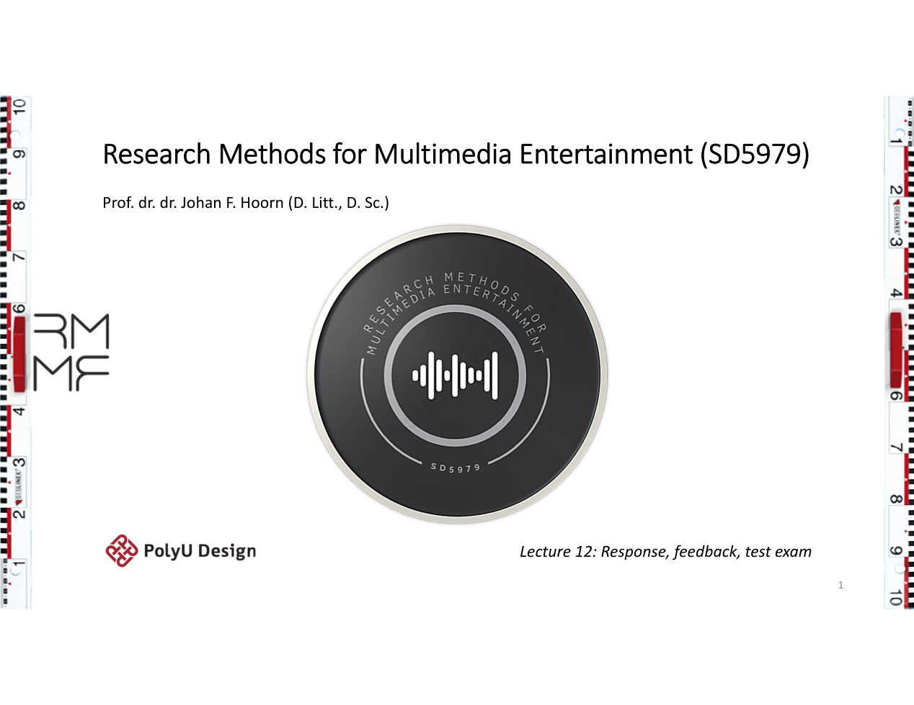
多媒体娱乐研究方法（SD5979）
Prof. dr. dr. Johan F. Hoorn (D. Litt., D. Sc.)
第 12 讲：回应、反馈与模拟考试（Lecture 12: Response, feedback, test exam）
查看英文提取原文
Research Methods for Multimedia Entertainment (SD5979) Prof. dr. dr. Johan F. Hoorn (D. Litt., D. Sc.) Lecture 12: Response, feedback, test exam 1

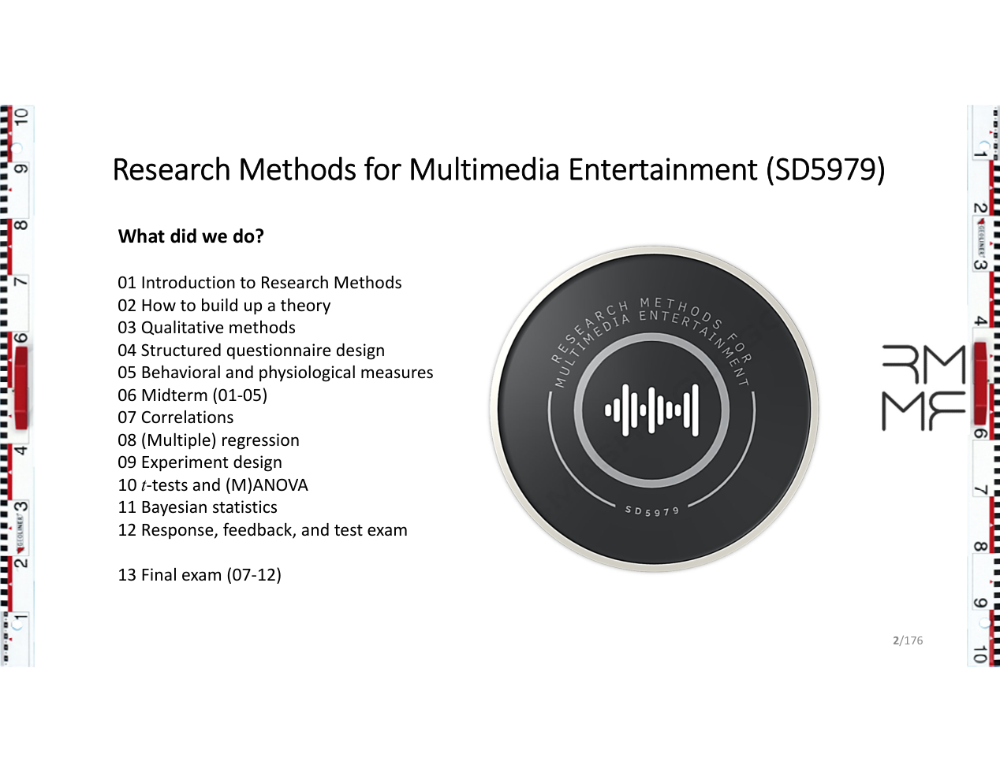
我们学了什么？
- 01 研究方法（Research Methods）导论
- 02 如何建构理论（theory）
- 03 质性方法（Qualitative methods）
- 04 结构化问卷设计（Structured questionnaire design）
- 05 行为与生理测量（Behavioral and physiological measures）
- 06 期中考试（Midterm）（01–05）
- 07 相关（Correlations）
- 08 （多元）回归（(Multiple) regression）
- 09 实验设计（Experiment design）
- 10 t 检验（t-tests）与（多元）方差分析（(M)ANOVA）
- 11 贝叶斯统计（Bayesian statistics）
- 12 回应、反馈与模拟考试（Response, feedback, and test exam）
- 13 期末考试（Final exam）（07–12）
多媒体娱乐研究方法（SD5979）
查看英文提取原文
2/176 What did we do? 01 Introduction to Research Methods 02 How to build up a theory 03 Qualitative methods 04 Structured questionnaire design 05 Behavioral and physiological measures 06 Midterm (01-05) 07 Correlations 08 (Multiple) regression 09 Experiment design 10 t-tests and (M)ANOVA 11 Bayesian statistics 12 Response, feedback, and test exam 13 Final exam (07-12) Research Methods for Multimedia Entertainment (SD5979)

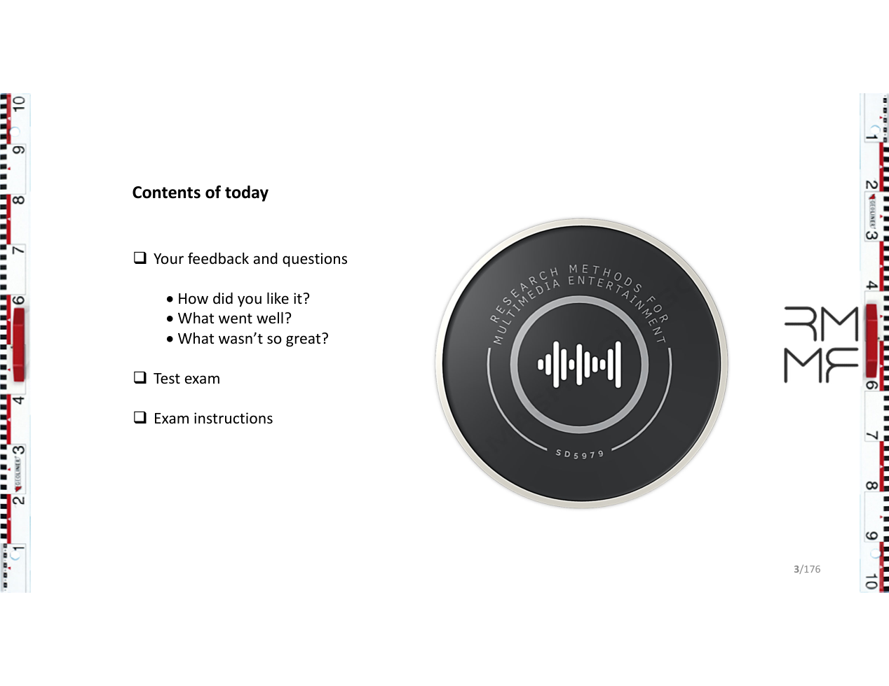
今日内容
- 你们的反馈与问题
- 你们觉得这门课怎么样？
- 哪些方面做得不错？
- 哪些方面不太理想？
- 模拟考试
- 考试说明
查看英文提取原文
Contents of today Your feedback and questions How did you like it? What went well? What wasn’t so great? Test exam Exam instructions 3/176

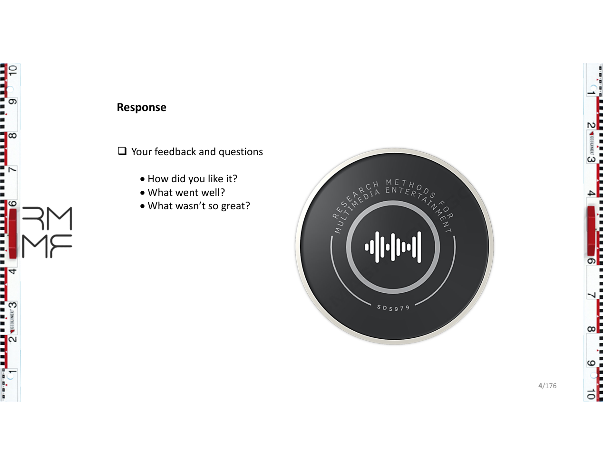
回应
- 你们的反馈与问题
- 你们觉得这门课怎么样？
- 哪些方面做得不错？
- 哪些方面不太理想？
查看英文提取原文
Response Your feedback and questions How did you like it? What went well? What wasn’t so great? 4/176

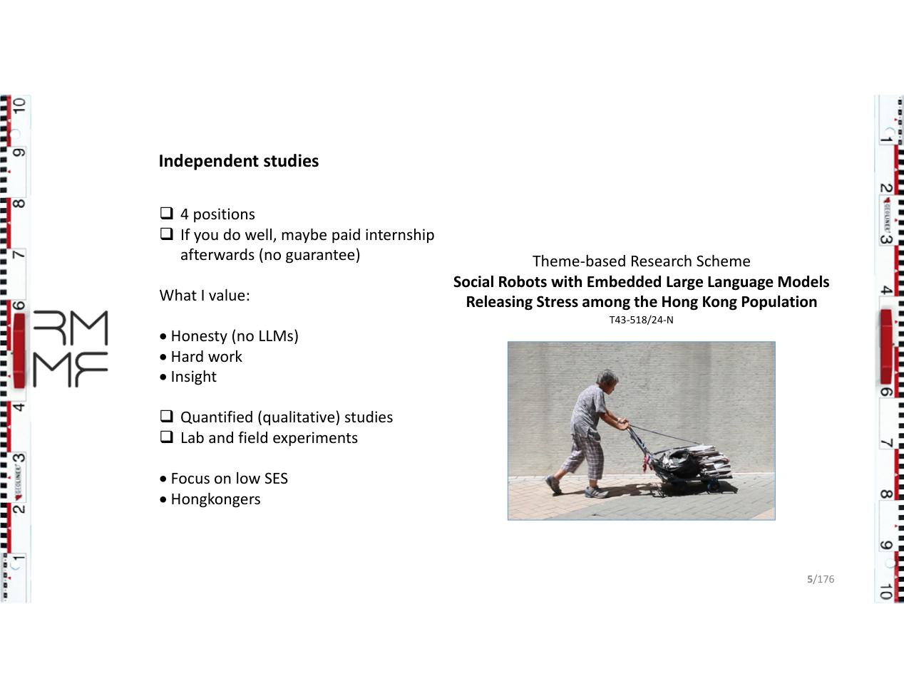
独立研究（Independent studies）
- 4 个名额
- 如果表现出色，之后可能有带薪实习机会（不作保证）
我看重的品质：
- 诚实（不使用大语言模型（LLMs））
- 勤奋
- 洞察力
- 量化（质性）研究（Quantified (qualitative) studies）
- 实验室与实地实验（Lab and field experiments）
- 关注低社会经济地位（SES）群体
- 香港市民
主题研究计划（Theme-based Research Scheme）
嵌入大语言模型（Large Language Models）的社交机器人缓解香港市民压力研究
T43-518/24-N
查看英文提取原文
Independent studies 5/176 4 positions If you do well, maybe paid internship afterwards (no guarantee) What I value: Honesty (no LLMs) Hard work Insight Quantified (qualitative) studies Lab and field experiments Focus on low SES Hongkongers Theme-based Research Scheme Social Robots with Embedded Large Language Models Releasing Stress among the Hong Kong Population T43-518/24-N

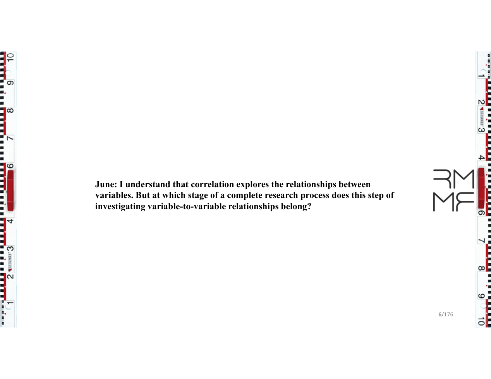
June：我理解相关（correlation）是用来探索变量（variables）之间关系的。但在一个完整的研究过程（research process）中，探究变量间关系（variable-to-variable relationships）这一步属于哪个阶段呢？
查看英文提取原文
June: I understand that correlation explores the relationships between variables. But at which stage of a complete research process does this step of investigating variable-to-variable relationships belong? 6/176

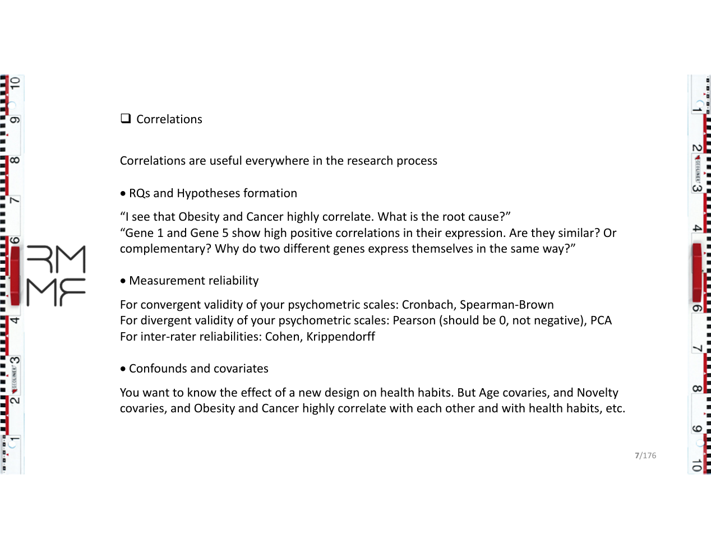
相关（Correlations）
相关（Correlations）在研究过程（research process）的各个环节都很有用
- 研究问题（RQs）与假设（Hypotheses）的形成
“我发现肥胖与癌症高度相关。根本原因是什么？”
“基因 1 和基因 5 在表达上呈现高度正相关（positive correlations）。它们是相似的？还是互补的？为什么两个不同的基因会以同样的方式表达？”
- 测量信度（Measurement reliability）
用于检验你的心理测量量表（psychometric scales）的聚合效度（convergent validity）：克龙巴赫系数（Cronbach）、斯皮尔曼-布朗系数（Spearman-Brown）
用于检验你的心理测量量表（psychometric scales）的区分效度（divergent validity）：皮尔逊相关（Pearson）（应为 0，而非负值）、主成分分析（PCA）
用于检验评分者间信度（inter-rater reliabilities）：科恩系数（Cohen）、克里彭多夫系数（Krippendorff）
- 混淆因素（Confounds）与协变量（covariates）
你想了解一项新设计对健康习惯的影响。但年龄会共变（covaries），新奇感也会共变（covaries），而且肥胖和癌症彼此高度相关，同时也与健康习惯相关，等等。
查看英文提取原文
7/176 Correlations are useful everywhere in the research process RQs and Hypotheses formation “I see that Obesity and Cancer highly correlate. What is the root cause?” “Gene 1 and Gene 5 show high positive correlations in their expression. Are they similar? Or complementary? Why do two different genes express themselves in the same way?” Measurement reliability For convergent validity of your psychometric scales: Cronbach, Spearman-Brown For divergent validity of your psychometric scales: Pearson (should be 0, not negative), PCA For inter-rater reliabilities: Cohen, Krippendorff Confounds and covariates You want to know the effect of a new design on health habits. But Age covaries, and Novelty covaries, and Obesity and Cancer highly correlate with each other and with health habits, etc. Correlations

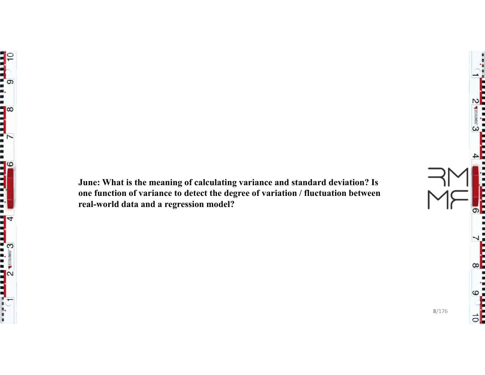
June：计算方差（variance）和标准差（standard deviation）的意义是什么？方差（variance）的其中一个作用，是否是用来检测真实世界数据与回归模型（regression model）之间的变异／波动程度（degree of variation / fluctuation）？
查看英文提取原文
June: What is the meaning of calculating variance and standard deviation? Is one function of variance to detect the degree of variation / fluctuation between real-world data and a regression model? 8/176

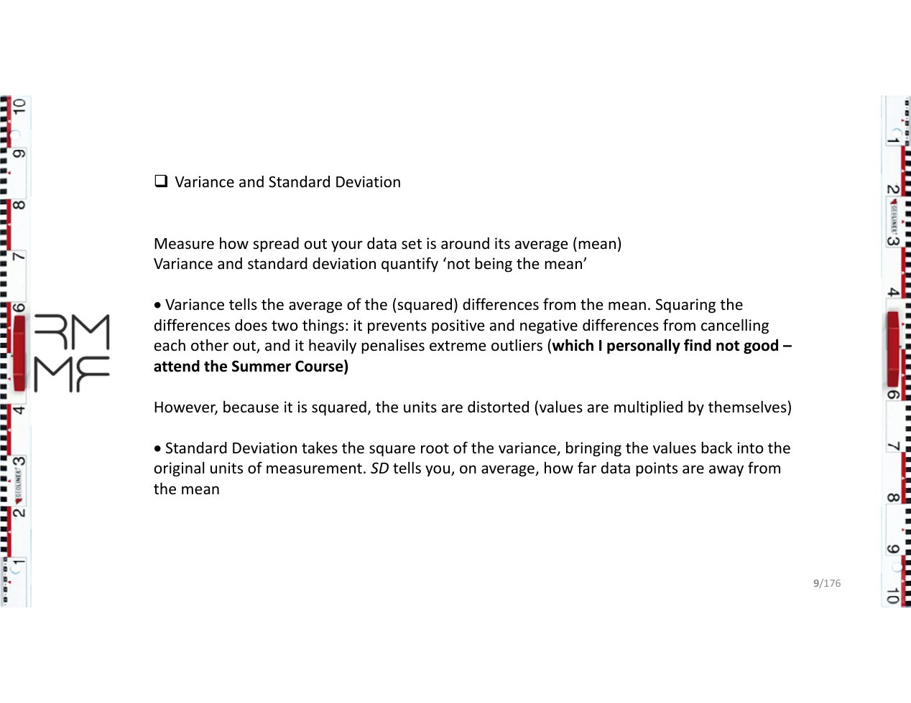
方差（Variance）与标准差（Standard Deviation）
衡量你的数据集围绕其平均值（均值（mean））的分散程度
方差（Variance）与标准差（standard deviation）量化了「偏离均值（not being the mean）」的程度
- 方差（Variance）反映的是与均值（mean）之差的（平方）平均值。对差值进行平方有两个作用：一是防止正负差值相互抵消，二是对极端异常值（extreme outliers）施加重罚（我个人认为这并不好——欢迎参加暑期课程）
不过，由于进行了平方运算，单位会发生畸变（数值与自身相乘）
- 标准差（Standard Deviation）对方差（variance）取平方根，从而将数值还原回原始的测量单位（units of measurement）。标准差（SD）告诉你，平均而言，数据点（data points）距离均值（mean）有多远
查看英文提取原文
Measure how spread out your data set is around its average (mean) Variance and standard deviation quantify ‘not being the mean’ Variance tells the average of the (squared) differences from the mean. Squaring the differences does two things: it prevents positive and negative differences from cancelling each other out, and it heavily penalises extreme outliers (which I personally find not good – attend the Summer Course) However, because it is squared, the units are distorted (values are multiplied by themselves) Standard Deviation takes the square root of the variance, bringing the values back into the original units of measurement. SD tells you, on average, how far data points are away from the mean 9/176 Variance and Standard Deviation

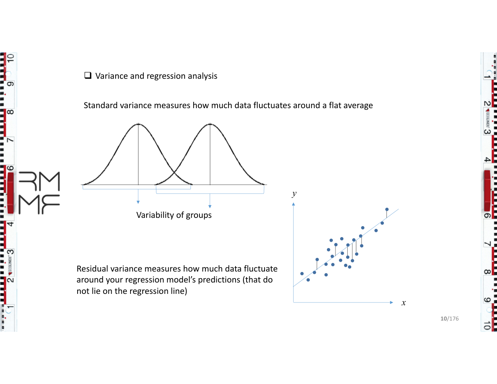
方差（Variance）与回归分析（regression analysis）
标准方差（Standard variance）衡量数据围绕一个平坦平均值波动的程度
- 组间变异性（Variability of groups）
- 残差方差（Residual variance）衡量数据围绕你的回归模型（regression model）预测值（即未落在回归线（regression line）上的部分）波动的程度
图示说明（散点图）：
- 横轴
x、纵轴y及分布于回归线周围的数据点
查看英文提取原文
Standard variance measures how much data fluctuates around a flat average 10/176 Variance and regression analysis Variability of groups Residual variance measures how much data fluctuate around your regression model’s predictions (that do not lie on the regression line) x y

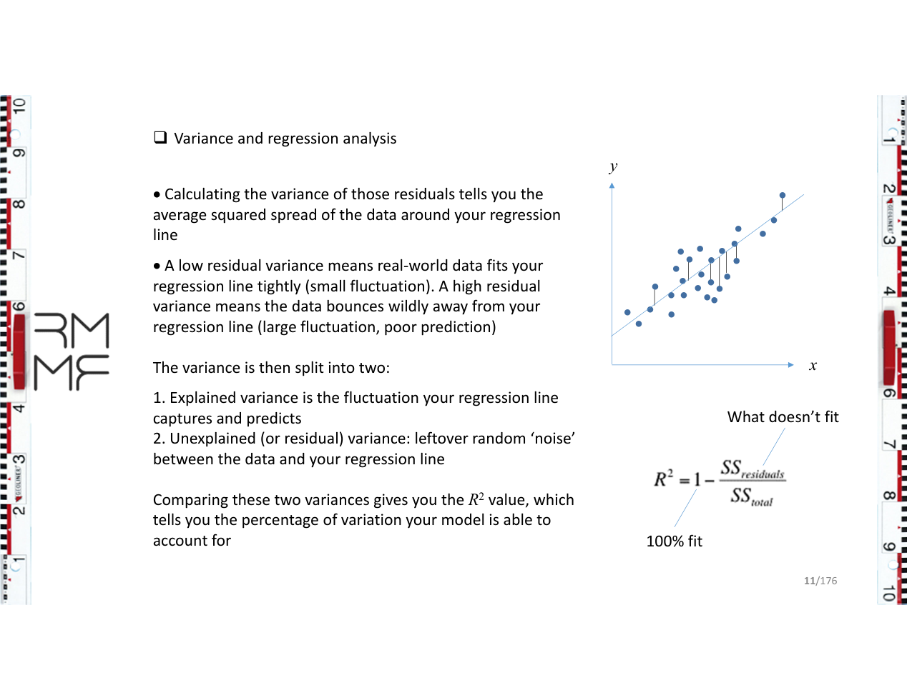
方差（Variance）与回归分析（regression analysis）
- 计算这些残差（residuals）的方差（variance），可以告诉你数据围绕你的回归线（regression line）的平均平方离散程度
- 较低的残差方差（residual variance）意味着真实世界数据紧密贴合你的回归线（regression line）（波动小）。较高的残差方差（residual variance）意味着数据大幅偏离你的回归线（regression line）（波动大、预测效果差）
接着，方差（variance）被拆分为两部分：
- 已解释方差（Explained variance）：你的回归线（regression line）所捕捉并预测到的波动
- 未解释（或残差）方差（Unexplained (or residual) variance）：数据与你的回归线（regression line）之间剩余的随机「噪声（noise）」
比较这两个方差（variance）可以得到 R² 值（R2 value），它告诉你模型能够解释的变异（variation）百分比
图示标注（横轴 x、纵轴 y 散点图）：
- 100% 拟合（100% fit）
- 未能拟合的部分（What doesn’t fit）
查看英文提取原文
Calculating the variance of those residuals tells you the average squared spread of the data around your regression line A low residual variance means real-world data fits your regression line tightly (small fluctuation). A high residual variance means the data bounces wildly away from your regression line (large fluctuation, poor prediction) The variance is then split into two: 1. Explained variance is the fluctuation your regression line captures and predicts 2. Unexplained (or residual) variance: leftover random ‘noise’ between the data and your regression line Comparing these two variances gives you the R2 value, which tells you the percentage of variation your model is able to account for 11/176 Variance and regression analysis x y 100% fit What doesn’t fit

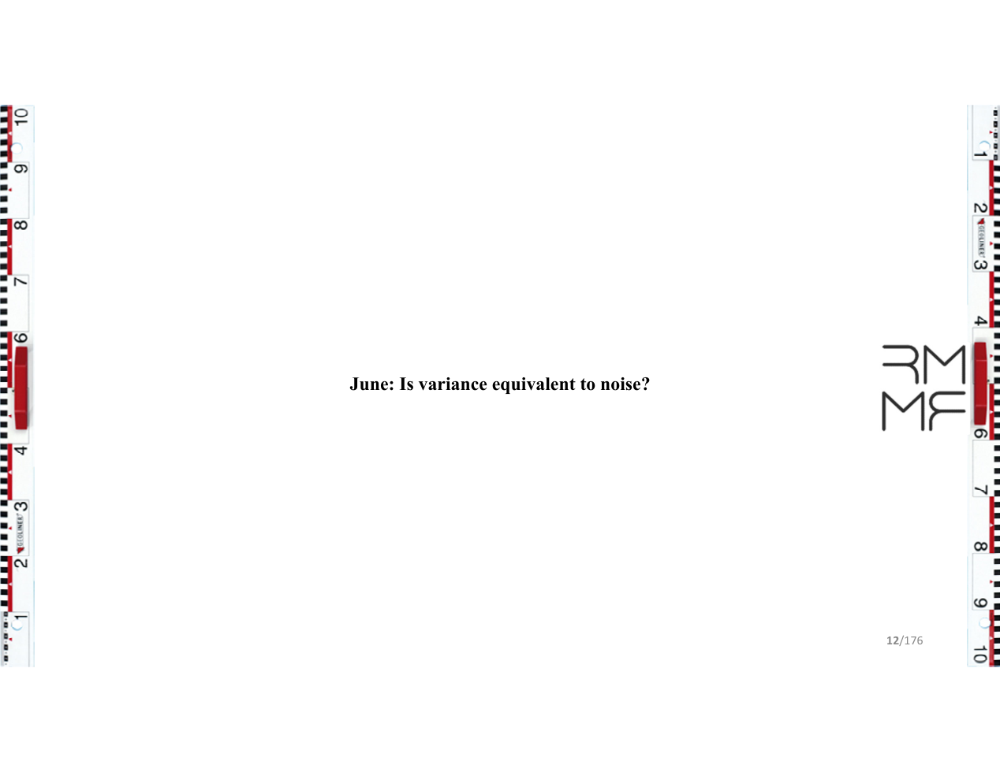
June：方差（variance）等同于噪声（noise）吗？
查看英文提取原文
June: Is variance equivalent to noise? 12/176

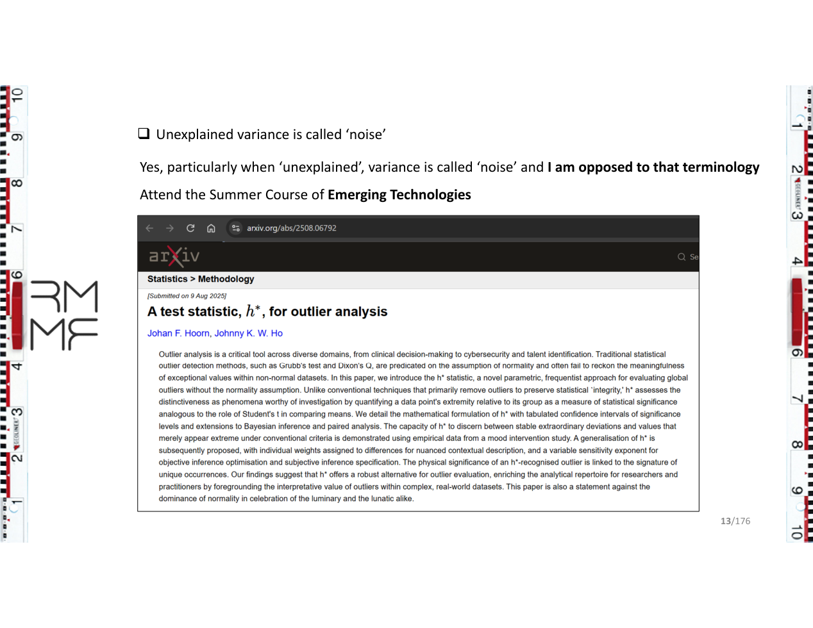
未解释方差（Unexplained variance）被称为「噪声（noise）」
是的，特别是当它处于「未解释」状态时，方差（variance）被称为「噪声（noise）」，而我反对这一术语
欢迎参加新兴技术暑期课程（Attend the Summer Course of Emerging Technologies）
查看英文提取原文
13/176 Unexplained variance is called ‘noise’ Yes, particularly when ‘unexplained’, variance is called ‘noise’ and I am opposed to that terminology Attend the Summer Course of Emerging Technologies

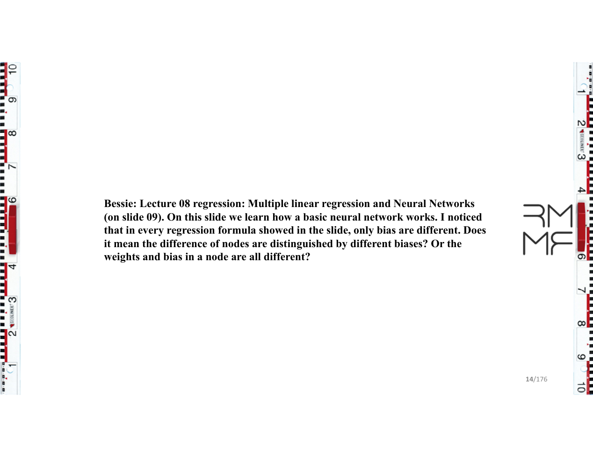
Bessie：第 8 讲回归：多元线性回归（Multiple linear regression）与神经网络（Neural Networks）（第 9 页幻灯片）。在这一页中我们学习了一个基本神经网络（neural network）的工作原理。我注意到在幻灯片展示的每一个回归公式（regression formula）中，只有偏置（bias）是不同的。这是否意味着节点（nodes）之间的差异是由不同的偏置（biases）来区分的？还是说一个节点（node）中的权重（weights）和偏置（bias）全都不一样？
查看英文提取原文
Bessie: Lecture 08 regression: Multiple linear regression and Neural Networks (on slide 09). On this slide we learn how a basic neural network works. I noticed that in every regression formula showed in the slide, only bias are different. Does it mean the difference of nodes are distinguished by different biases? Or the weights and bias in a node are all different? 14/176

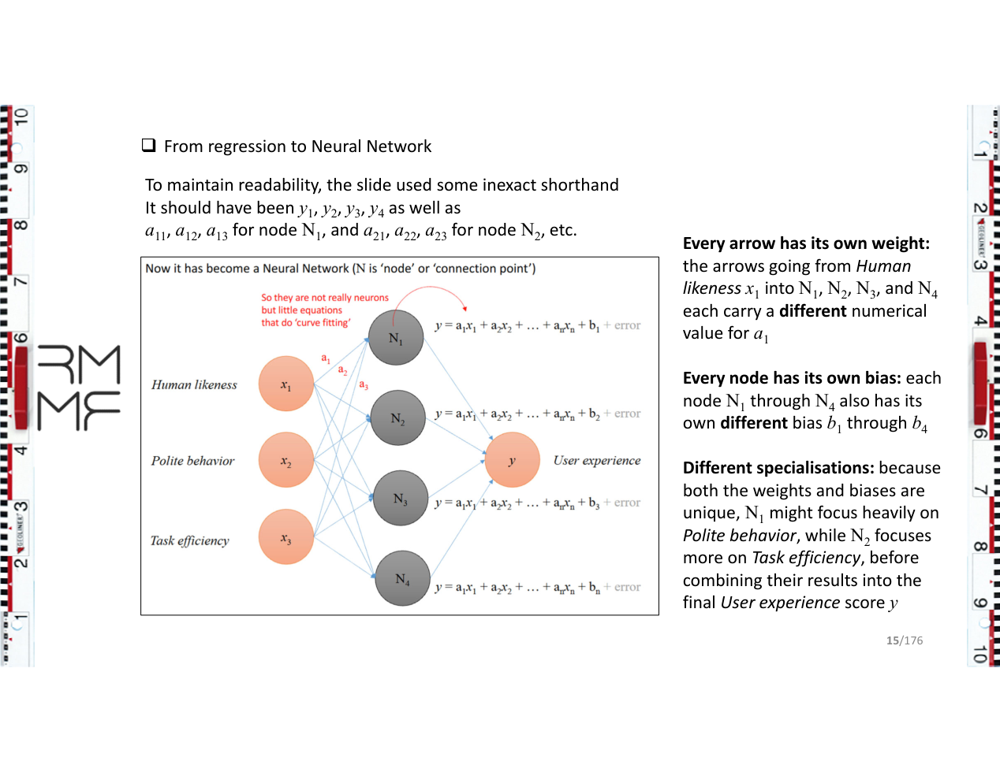
从回归（regression）到神经网络（Neural Network）
- 为了保持可读性，原幻灯片使用了一些不够严谨的简写
- 实际上应当写作
y1, y2, y3, y4，以及针对节点（node）N1的a11, a12, a13和针对节点（node）N2的a21, a22, a23等 - 每条箭头都有各自的权重（weight）：从「类人度（Human likeness）」
x1指向N1、N2、N3和N4的箭头，各自携带不同的a1数值 - 每个节点（node）都有各自的偏置（bias）：
N1到N4每个节点（node）也各自拥有不同的偏置（bias）b1到b4 - 不同的专攻分工：由于权重（weights）和偏置（biases）都是各自独立的，
N1可能侧重于「礼貌行为（Polite behavior）」，而N2更侧重于「任务效率（Task efficiency）」，随后再将各自的结果合并为最终的「用户体验（User experience）」得分y
查看英文提取原文
From regression to Neural Network To maintain readability, the slide used some inexact shorthand It should have been y1, y2, y3, y4 as well as a11, a12, a13 for node N1, and a21, a22, a23 for node N2, etc. Every arrow has its own weight: the arrows going from Human likeness x1 into N1, N2, N3, and N4 each carry a different numerical value for a1 Every node has its own bias: each node N1 through N4 also has its own different bias b1 through b4 Different specialisations: because both the weights and biases are unique, N1 might focus heavily on Polite behavior, while N2 focuses more on Task efficiency, before combining their results into the final User experience score y 15/176

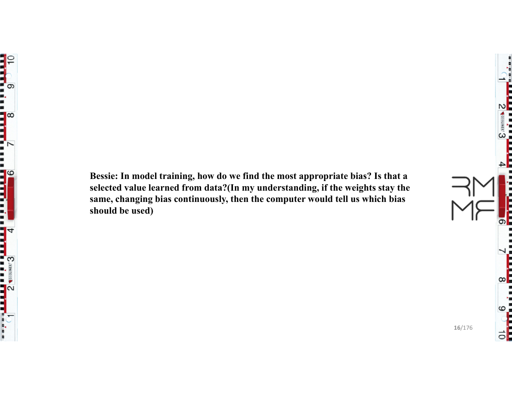
Bessie：在模型训练（model training）中，我们如何找到最合适的偏置（bias）？它是一个从数据中学习并选定的值吗？（按我的理解，如果权重（weights）保持不变，持续改变偏置（bias），计算机就会告诉我们应该使用哪一个偏置（bias））
查看英文提取原文
Bessie: In model training, how do we find the most appropriate bias? Is that a selected value learned from data?(In my understanding, if the weights stay the same, changing bias continuously, then the computer would tell us which bias should be used) 16/176

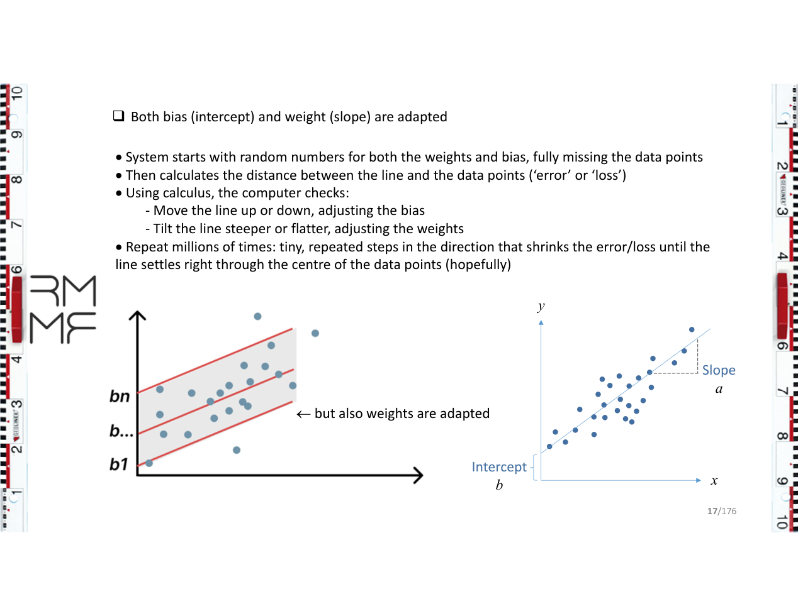
偏置（bias）（截距（intercept））和权重（weight）（斜率（slope））都会被调整
- ……但权重（weights）同样也会被调整
- 图表坐标与参数标注：
x、y、斜率（Slope）a、截距（Intercept）b - 系统先为权重（weights）和偏置（bias）赋上随机数，此时拟合线完全偏离数据点（data points）
- 接着计算直线与数据点（data points）之间的距离（即「误差（error）」或「损失（loss）」）
- 计算机利用微积分（calculus）检查如何调整：
- 上下移动直线，即调整偏置（bias）
- 让直线倾斜得更陡或更平缓，即调整权重（weights）
- 重复数百万次：沿着缩小误差（error）/损失（loss）的方向迈出微小的、重复的步长，直到直线（理想情况下）正好穿过数据点（data points）的中心
查看英文提取原文
but also weights are adapted x y Slope a Intercept b Both bias (intercept) and weight (slope) are adapted 17/176 System starts with random numbers for both the weights and bias, fully missing the data points Then calculates the distance between the line and the data points (‘error’ or ‘loss’) Using calculus, the computer checks: - Move the line up or down, adjusting the bias - Tilt the line steeper or flatter, adjusting the weights Repeat millions of times: tiny, repeated steps in the direction that shrinks the error/loss until the line settles right through the centre of the data points (hopefully)

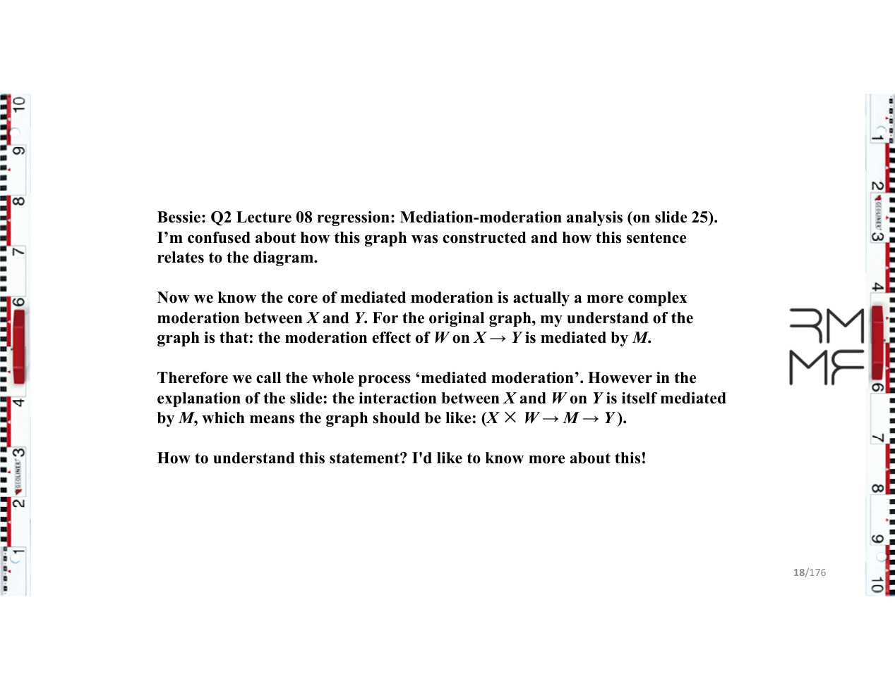
Bessie：问题 2（Q2）关于第 8 讲（Lecture 08）回归（regression）：中介—调节分析（Mediation-moderation analysis）（第 25 页）。我对这张图是如何构建的，以及这句话与图示之间的关系感到困惑。
现在我们知道，有中介的调节（mediated moderation）的核心实际上是 X 和 Y 之间一种更复杂的调节作用（moderation）。对于原图，我的理解是：W 对 X → Y 的调节效应（moderation effect）是由 M 所中介（mediated）的。因此我们把整个过程称为「有中介的调节（mediated moderation）」。然而在幻灯片的文字解释中写的是：X 和 W 对 Y 的交互作用（interaction）本身是由 M 所中介（mediated）的，这意味着图示应该像这样：（X × W → M → Y）。该如何理解这一表述？我想了解更多关于这方面的内容！
查看英文提取原文
Bessie: Q2 Lecture 08 regression: Mediation-moderation analysis (on slide 25). I’m confused about how this graph was constructed and how this sentence relates to the diagram. Now we know the core of mediated moderation is actually a more complex moderation between X and Y. For the original graph, my understand of the graph is that: the moderation effect of W on X → Y is mediated by M. Therefore we call the whole process ‘mediated moderation’. However in the explanation of the slide: the interaction between X and W on Y is itself mediated by M, which means the graph should be like: (X × W → M → Y ). How to understand this statement? I'd like to know more about this! 18/176

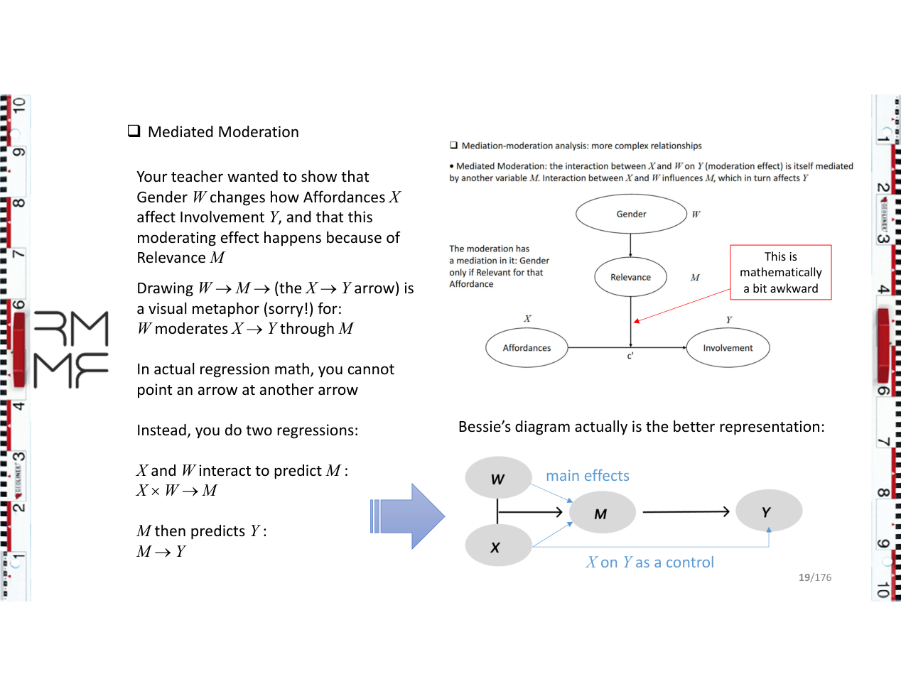
有中介的调节（Mediated Moderation）
- Bessie 的图示实际上是更好的表征方式：
- （图示旁批注：这在数学上其实有点别扭）
- 你的老师想表达的是：性别（Gender）
W会改变可供性（Affordances）X如何影响投入度（Involvement）Y，而这种调节效应（moderating effect）是通过相关性（Relevance）M发生的 - 画出
W → M →（X → Y 箭头）只是一种视觉隐喻（抱歉！），用来表示：W通过M调节（moderates）X → Y - 在实际的回归（regression）数学中，你不能把一个箭头指向另一个箭头
- 相反，你要做两个回归（regressions）：
X和W产生交互作用（interact）以预测M：X × W → M- 随后
M预测Y：M → Y
X对Y作为控制变量（control）- 主效应（main effects）
查看英文提取原文
Bessie’s diagram actually is the better representation: This is mathematically a bit awkward 19/176 Mediated Moderation Your teacher wanted to show that Gender W changes how Affordances X affect Involvement Y, and that this moderating effect happens because of Relevance M Drawing W M (the X Y arrow) is a visual metaphor (sorry!) for: W moderates X Y through M In actual regression math, you cannot point an arrow at another arrow Instead, you do two regressions: X and W interact to predict M : X W M M then predicts Y : M Y X on Y as a control main effects

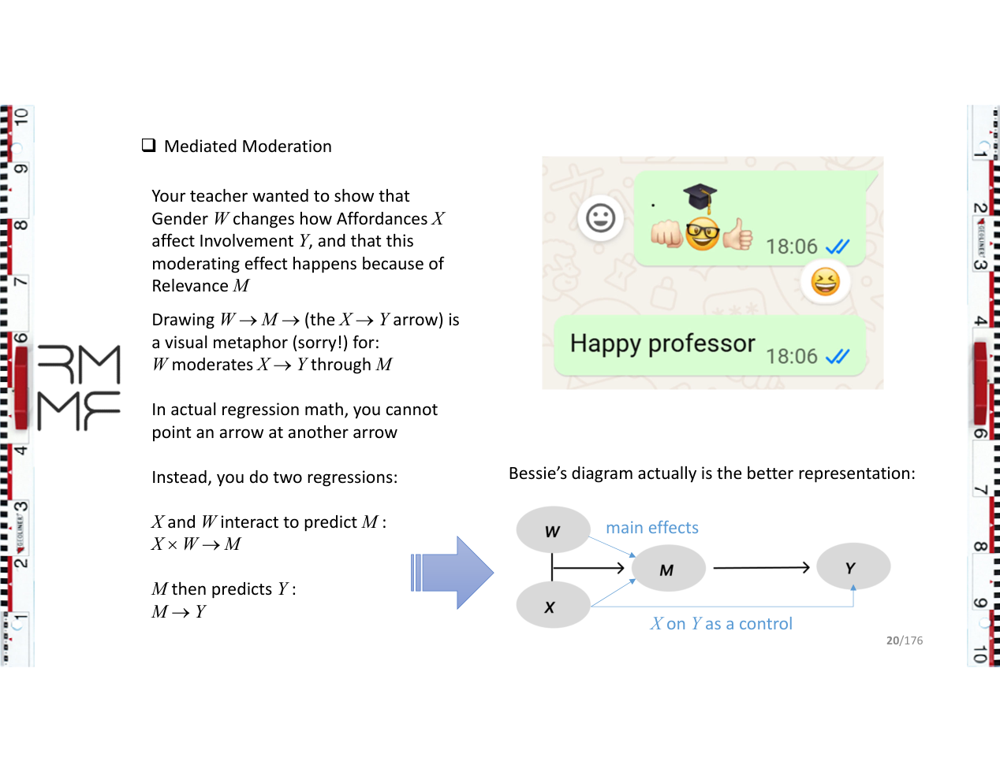
有中介的调节（Mediated Moderation）
- Bessie 的图示实际上是更好的表征方式：
- 你的老师想表达的是：性别（Gender）
W会改变可供性（Affordances）X如何影响投入度（Involvement）Y，而这种调节效应（moderating effect）是通过相关性（Relevance）M发生的 - 画出
W → M →（X → Y 箭头）只是一种视觉隐喻（抱歉！），用来表示：W通过M调节（moderates）X → Y - 在实际的回归（regression）数学中，你不能把一个箭头指向另一个箭头
- 相反，你要做两个回归（regressions）：
X和W产生交互作用（interact）以预测M：X × W → M- 随后
M预测Y：M → Y
X对Y作为控制变量（control）- 主效应（main effects）
查看英文提取原文
Bessie’s diagram actually is the better representation: 20/176 Mediated Moderation Your teacher wanted to show that Gender W changes how Affordances X affect Involvement Y, and that this moderating effect happens because of Relevance M Drawing W M (the X Y arrow) is a visual metaphor (sorry!) for: W moderates X Y through M In actual regression math, you cannot point an arrow at another arrow Instead, you do two regressions: X and W interact to predict M : X W M M then predicts Y : M Y X on Y as a control main effects

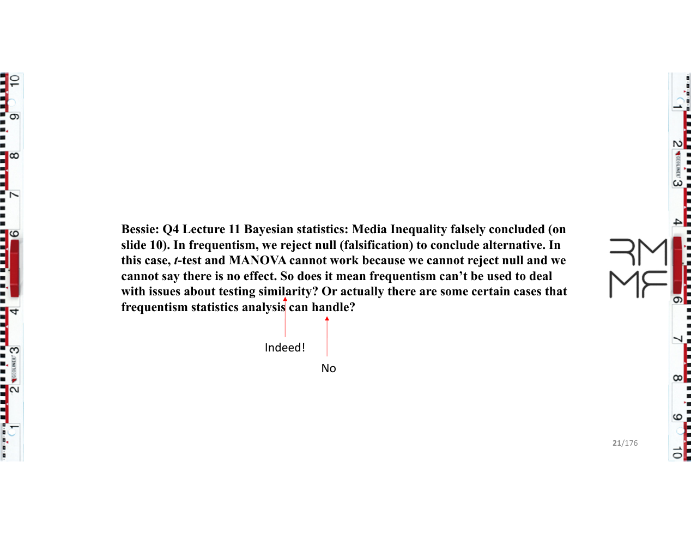
Bessie：问题 4（Q4）关于第 11 讲（Lecture 11）贝叶斯统计（Bayesian statistics）：错误得出「媒体不平等（Media Inequality）」结论（第 10 页）。在频率主义（frequentism）中，我们通过拒绝零假设（null）（证伪（falsification））来得出备择假设（alternative）成立的结论。在这个案例中，t 检验（t-test）和多元方差分析（MANOVA）无法奏效，因为我们无法拒绝零假设（null），也无法断定不存在效应（effect）。
- 那么这是否意味着频率主义（frequentism）无法用于处理检验相似性的问题呢？
- 教授批注：确实如此！（Indeed!）
- 或者实际上是否存在某些特定情况是频率主义统计分析（frequentism statistics analysis）可以处理的呢？
- 教授批注：没有（No）
查看英文提取原文
Bessie: Q4 Lecture 11 Bayesian statistics: Media Inequality falsely concluded (on slide 10). In frequentism, we reject null (falsification) to conclude alternative. In this case, t-test and MANOVA cannot work because we cannot reject null and we cannot say there is no effect. So does it mean frequentism can’t be used to deal with issues about testing similarity? Or actually there are some certain cases that frequentism statistics analysis can handle? 21/176 Indeed! No

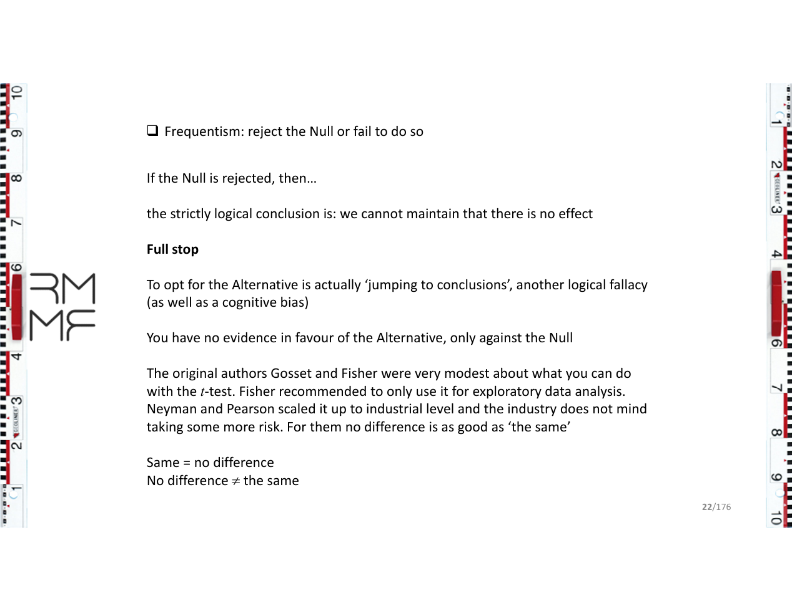
频率主义（Frequentism）：拒绝零假设（Null）或未能拒绝零假设（Null）
- 如果零假设（Null）被拒绝，那么……
- 严格逻辑上的结论是：我们无法维持「不存在效应（effect）」这一主张
- 仅此而已（Full stop）
- 转而支持备择假设（Alternative）实际上是「仓促下结论（jumping to conclusions）」，这是另一种逻辑谬误（logical fallacy）（同时也是认知偏差（cognitive bias））
- 你并没有支持备择假设（Alternative）的证据，只有反对零假设（Null）的证据
- 原始提出者 Gosset 和 Fisher 对t 检验（t-test）能做什么非常谦逊谨慎。Fisher 建议仅将其用于探索性数据分析（exploratory data analysis）。Neyman 和 Pearson 将其推广到了工业级规模，而工业界并不介意承担多一点风险。对他们而言，没有差异就相当于「相同」
- 相同 = 无差异
- 无差异 相同（No difference the same）
查看英文提取原文
If the Null is rejected, then… the strictly logical conclusion is: we cannot maintain that there is no effect Full stop To opt for the Alternative is actually ‘jumping to conclusions’, another logical fallacy (as well as a cognitive bias) You have no evidence in favour of the Alternative, only against the Null The original authors Gosset and Fisher were very modest about what you can do with the t-test. Fisher recommended to only use it for exploratory data analysis. Neyman and Pearson scaled it up to industrial level and the industry does not mind taking some more risk. For them no difference is as good as ‘the same’ Same = no difference No difference the same Frequentism: reject the Null or fail to do so 22/176

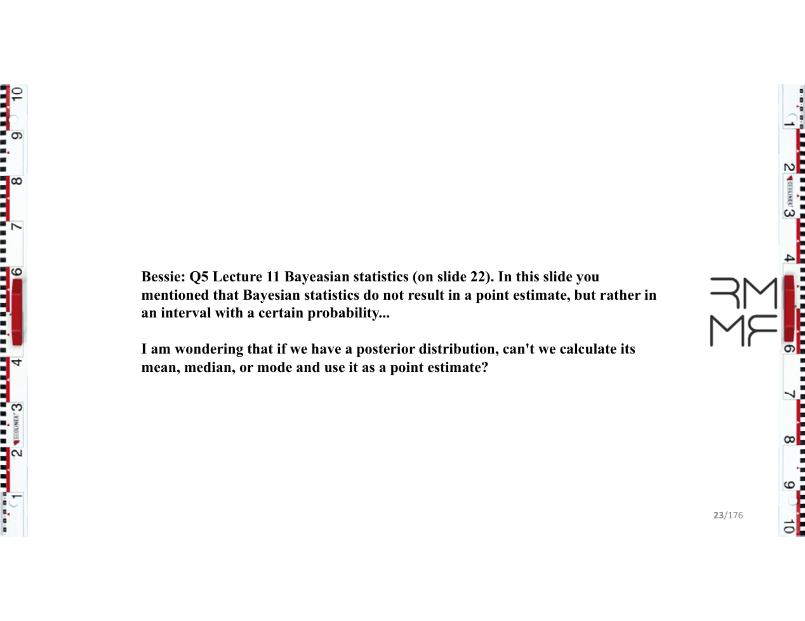
Bessie：问题 5（Q5）关于第 11 讲（Lecture 11）贝叶斯统计（Bayeasian statistics）（第 22 页）。在这一页中您提到，贝叶斯统计（Bayesian statistics）不会产生点估计（point estimate），而是产生一个带有特定概率（probability）的区间（interval）……
我想知道的是，如果我们有了一个后验分布（posterior distribution），难道不能计算它的均值（mean）、中位数（median）或众数（mode），并将其用作点估计（point estimate）吗？
查看英文提取原文
Bessie: Q5 Lecture 11 Bayeasian statistics (on slide 22). In this slide you mentioned that Bayesian statistics do not result in a point estimate, but rather in an interval with a certain probability... I am wondering that if we have a posterior distribution, can't we calculate its mean, median, or mode and use it as a point estimate? 23/176

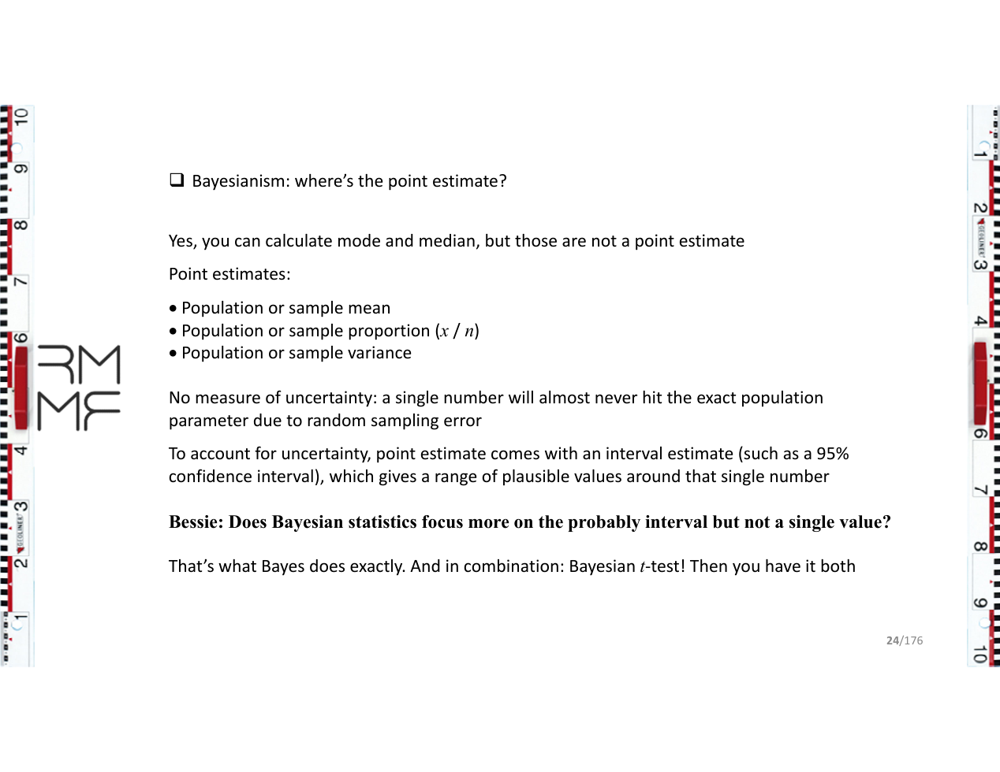
贝叶斯主义（Bayesianism）：点估计（point estimate）在哪里？
- 是的，你可以计算众数（mode）和中位数（median），但那些并不是点估计（point estimate）
- 点估计（Point estimates）包括：
- 总体或样本均值（Population or sample mean）
- 总体或样本比例（Population or sample proportion）（
x / n） - 总体或样本方差（Population or sample variance）
- 没有对不确定性（uncertainty）的度量：由于随机抽样误差（random sampling error），单个数值几乎永远无法精确命中总体参数（population parameter）
- 为了把不确定性（uncertainty）考虑在内，点估计（point estimate）会附带一个区间估计（interval estimate）（例如 95% 置信区间（95% confidence interval）），在那个单一数值周围给出一个合理数值的范围
- Bessie：贝叶斯统计（Bayesian statistics）是不是更关注概率区间（probably interval），而不是单一数值？
- 教授回复：这正是贝叶斯（Bayes）所做的。如果将两者结合起来：贝叶斯 t 检验（Bayesian t-test）！这样你就两者兼得了
查看英文提取原文
Yes, you can calculate mode and median, but those are not a point estimate Point estimates: Population or sample mean Population or sample proportion (x / n) Population or sample variance No measure of uncertainty: a single number will almost never hit the exact population parameter due to random sampling error To account for uncertainty, point estimate comes with an interval estimate (such as a 95% confidence interval), which gives a range of plausible values around that single number Bessie: Does Bayesian statistics focus more on the probably interval but not a single value? That’s what Bayes does exactly. And in combination: Bayesian t-test! Then you have it both Bayesianism: where’s the point estimate? 24/176

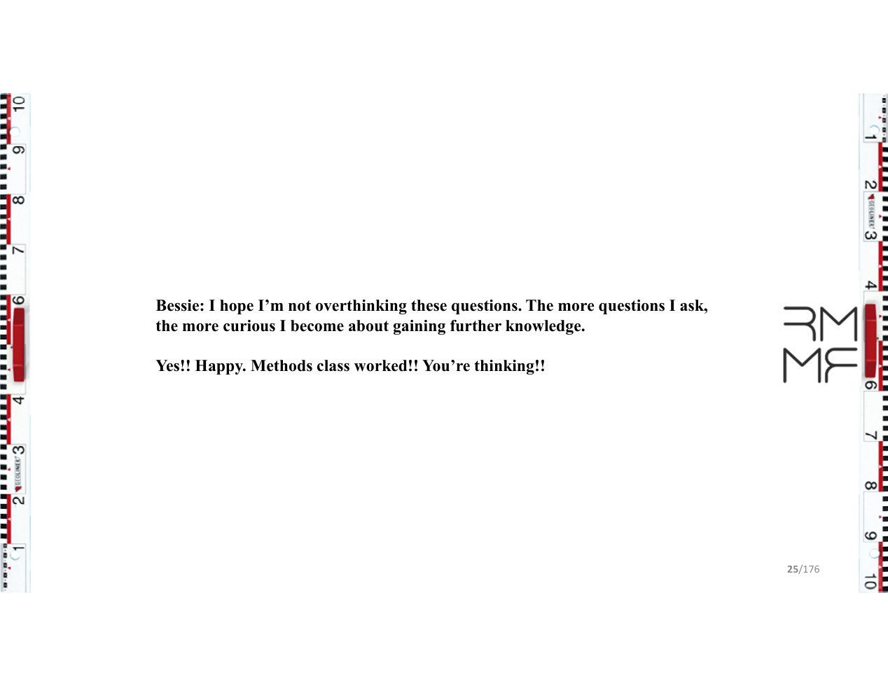
Bessie：希望我没有对这些问题想得太多。我问的问题越多，就越有好奇心去获取更多的知识。
教授回复：太好了！！很开心。研究方法课奏效了！！你在思考了！！
查看英文提取原文
Bessie: I hope I’m not overthinking these questions. The more questions I ask, the more curious I become about gaining further knowledge. Yes!! Happy. Methods class worked!! You’re thinking!! 25/176

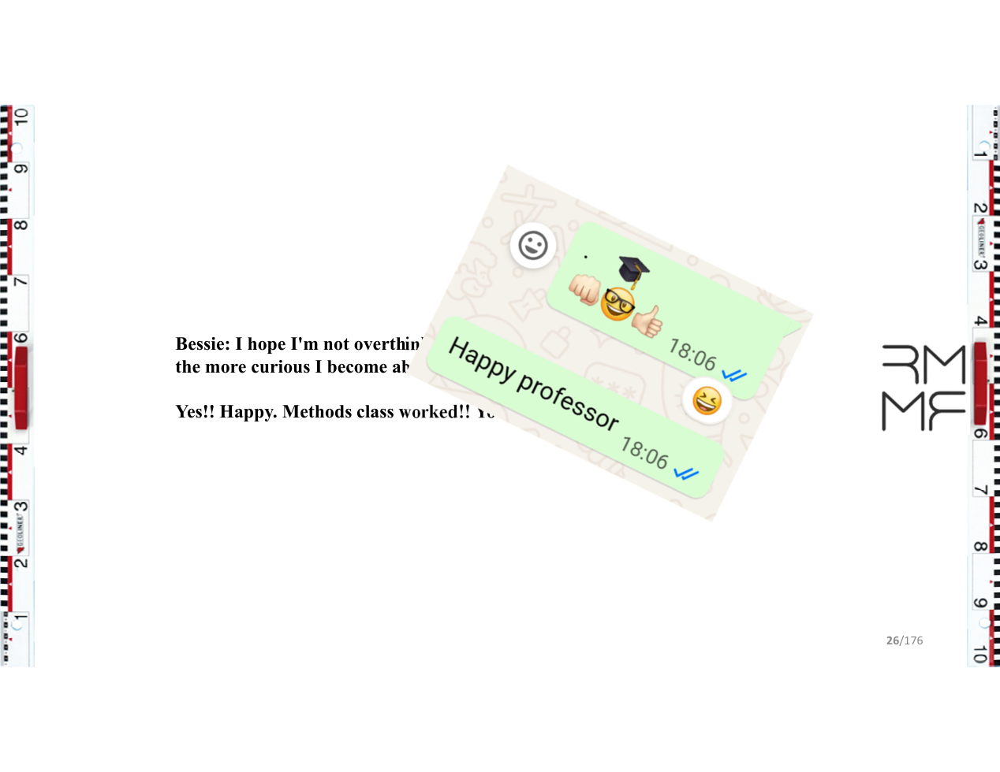
Bessie：希望我没有对这些问题想得太多。我问的问题越多，就越有好奇心去获取更多的知识。
教授回复：太好了！！很开心。研究方法课奏效了！！你在思考了！！
查看英文提取原文
Bessie: I hope I'm not overthinking these questions. The more questions I ask, the more curious I become about gaining further knowledge. Yes!! Happy. Methods class worked!! You’re thinking!! 26/176

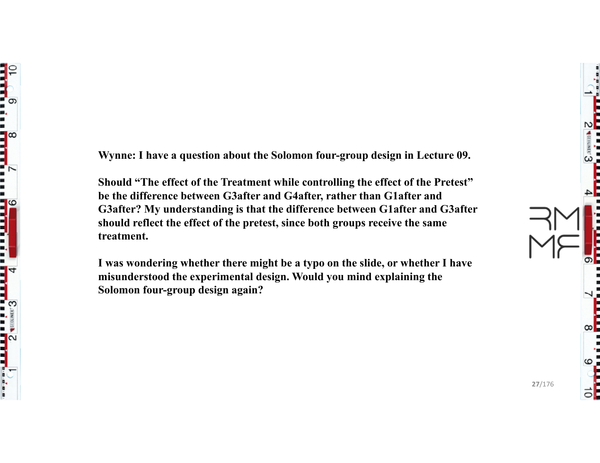
Wynne：我对第 9 讲（Lecture 09）中的所罗门四组设计（Solomon four-group design）有一个问题。
「在控制前测（Pretest）效应的情况下实验处理（Treatment）的效应（The effect of the Treatment while controlling the effect of the Pretest）」，应该是 G3after 与 G4after 之间的差异，而不是 G1after 与 G3after 之间的差异吗？我的理解是，G1after 与 G3after 之间的差异应该反映的是前测（pretest）的效应，因为这两组接受了相同的实验处理（treatment）。
我想知道这是幻灯片上可能有个笔误，还是我对这个实验设计（experimental design）理解有误。能否请您再解释一下所罗门四组设计（Solomon four-group design）？
查看英文提取原文
Wynne: I have a question about the Solomon four-group design in Lecture 09. Should “The effect of the Treatment while controlling the effect of the Pretest” be the difference between G3after and G4after, rather than G1after and G3after? My understanding is that the difference between G1after and G3after should reflect the effect of the pretest, since both groups receive the same treatment. I was wondering whether there might be a typo on the slide, or whether I have misunderstood the experimental design. Would you mind explaining the Solomon four-group design again? 27/176

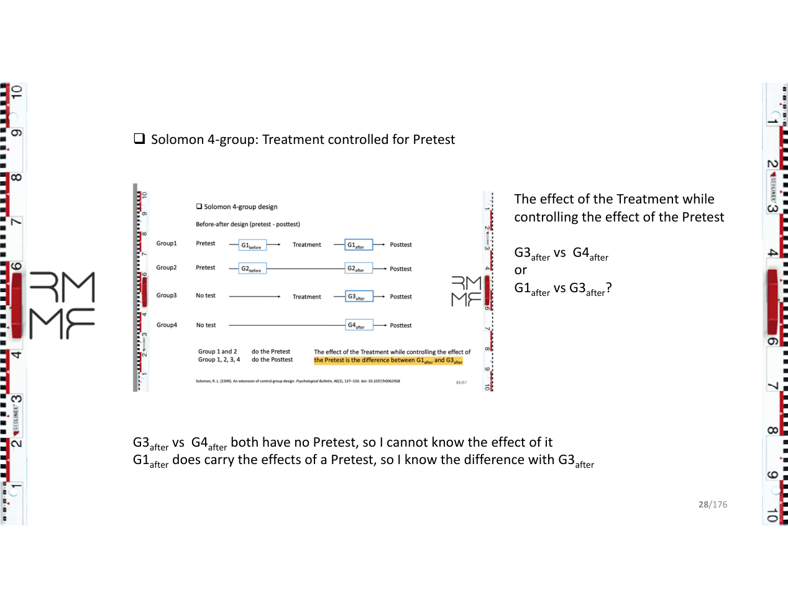
在控制（controlling）前测（Pretest）效应（effect）的同时检验实验处理（Treatment）效应（effect）
G3after 对比 G4after
还是
G1after 对比 G3after？
- 所罗门四组设计（Solomon 4-group）：针对前测（Pretest）进行控制（controlled）的实验处理（Treatment）
G3after 与 G4after 均没有前测（Pretest），因此我无法得知其效应（effect）
G1after 确实带有前测（Pretest）的效应（effect），因此我可以得知它与 G3after 的差异
查看英文提取原文
The effect of the Treatment while controlling the effect of the Pretest G3after vs G4after or G1after vs G3after? Solomon 4-group: Treatment controlled for Pretest 28/176 G3after vs G4after both have no Pretest, so I cannot know the effect of it G1after does carry the effects of a Pretest, so I know the difference with G3after

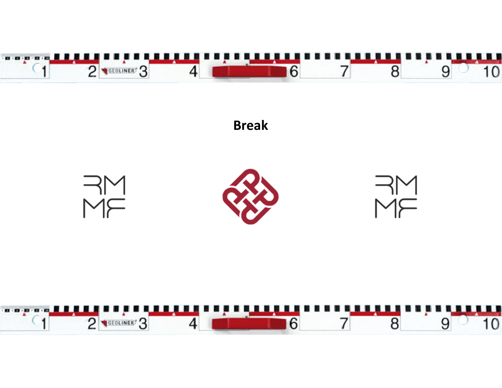
课间休息（Break）
查看英文提取原文
Break

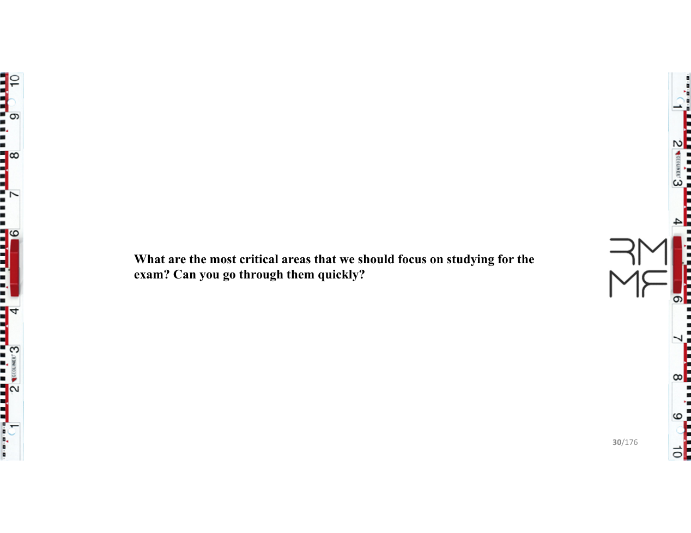
我们备考时最应该重点复习哪些核心领域？您能快速梳理一遍吗？
查看英文提取原文
What are the most critical areas that we should focus on studying for the exam? Can you go through them quickly? 30/176

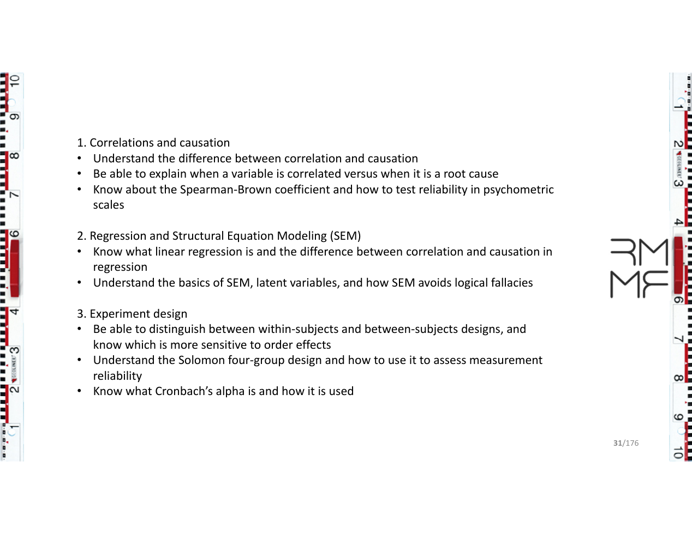
- 相关（Correlations）与因果关系（causation）
- 理解相关（correlation）与因果关系（causation）之间的区别
- 能够解释一个变量（variable）何时仅仅是相关（correlated），何时才是根本原因（root cause）
- 了解斯皮尔曼-布朗系数（Spearman-Brown coefficient），以及如何在心理测量量表（psychometric scales）中检验信度（reliability）
- 回归（Regression）与结构方程建模（Structural Equation Modeling (SEM)）
- 知道什么是线性回归（linear regression），以及回归（regression）中相关（correlation）与因果关系（causation）的区别
- 理解结构方程建模（SEM）的基础知识、潜变量（latent variables），以及结构方程建模（SEM）如何避免逻辑谬误（logical fallacies）
- 实验设计（Experiment design）
- 能够区分被试内设计（within-subjects）与被试间设计（between-subjects designs），并知道哪一种对顺序效应（order effects）更敏感
- 理解所罗门四组设计（Solomon four-group design），以及如何利用它来评估测量信度（measurement reliability）
- 知道什么是克龙巴赫 α（Cronbach’s alpha）及其用途
查看英文提取原文
1. Correlations and causation • Understand the difference between correlation and causation • Be able to explain when a variable is correlated versus when it is a root cause • Know about the Spearman-Brown coefficient and how to test reliability in psychometric scales 2. Regression and Structural Equation Modeling (SEM) • Know what linear regression is and the difference between correlation and causation in regression • Understand the basics of SEM, latent variables, and how SEM avoids logical fallacies 3. Experiment design • Be able to distinguish between within-subjects and between-subjects designs, and know which is more sensitive to order effects • Understand the Solomon four-group design and how to use it to assess measurement reliability • Know what Cronbach’s alpha is and how it is used 31/176

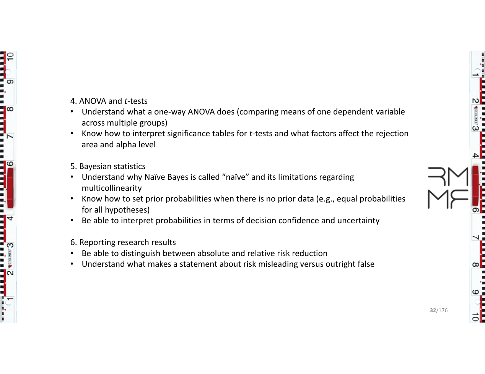
- 方差分析（ANOVA）与 t 检验（t-tests）
- 理解单因素方差分析（one-way ANOVA）的作用（跨多个组别比较单个因变量（dependent variable）的均值（means））
- 知道如何解读 t 检验（t-tests） 的显著性表（significance tables），以及哪些因素会影响拒绝域（rejection area）和 alpha 水平（alpha level）
- 贝叶斯统计（Bayesian statistics）
- 理解为什么朴素贝叶斯（Naïve Bayes）被称为“朴素（naïve）”，以及它在多重共线性（multicollinearity）方面的局限性
- 知道在没有先验数据（prior data）时如何设定先验概率（prior probabilities）（例如，为所有假设（hypotheses）分配相等的概率（probabilities））
- 能够从决策置信度（decision confidence）和不确定性（uncertainty）的角度解读概率（probabilities）
- 报告研究结果
- 能够区分绝对风险降低与相对风险降低（absolute and relative risk reduction）
- 理解是什么使得关于风险的表述具有误导性，以及什么使得表述彻底错误
查看英文提取原文
4. ANOVA and t-tests • Understand what a one-way ANOVA does (comparing means of one dependent variable across multiple groups) • Know how to interpret significance tables for t-tests and what factors affect the rejection area and alpha level 5. Bayesian statistics • Understand why Naïve Bayes is called “naïve” and its limitations regarding multicollinearity • Know how to set prior probabilities when there is no prior data (e.g., equal probabilities for all hypotheses) • Be able to interpret probabilities in terms of decision confidence and uncertainty 6. Reporting research results • Be able to distinguish between absolute and relative risk reduction • Understand what makes a statement about risk misleading versus outright false 32/176

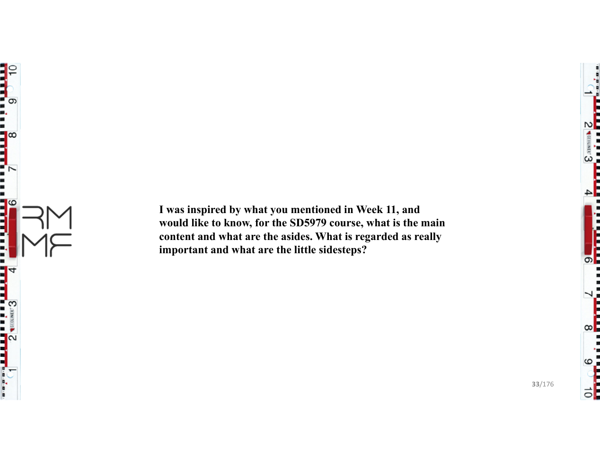
我受到您在第 11 周所讲内容的启发，想了解一下对于 SD5979 这门课程来说，哪些是核心主干内容，哪些是旁支补充（asides）？哪些内容被视为真正重要的，哪些只是小小的拓展插曲？
查看英文提取原文
I was inspired by what you mentioned in Week 11, and would like to know, for the SD5979 course, what is the main content and what are the asides. What is regarded as really important and what are the little sidesteps? 33/176

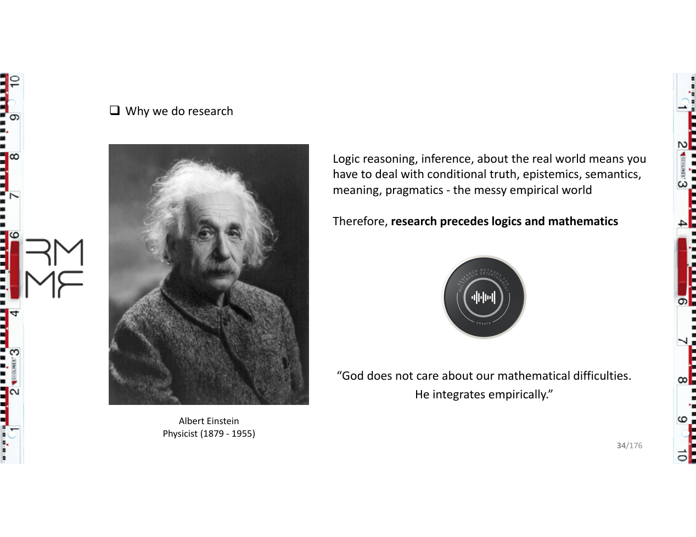
爱因斯坦（Albert Einstein）
物理学家（1879 - 1955）
“上帝不在乎我们的数学困难。他是实证地（empirically）进行积分的。”
关于真实世界的逻辑推理（Logic reasoning）与推论（inference），意味着你必须处理条件真值（conditional truth）、认识论（epistemics）、语义学（semantics）、意义以及语用学（pragmatics）——也就是这个错综复杂的经验世界（empirical world）
因此，研究先于逻辑学（logics）与数学
- 我们为什么做研究
查看英文提取原文
Albert Einstein Physicist (1879 - 1955) “God does not care about our mathematical difficulties. He integrates empirically.” Logic reasoning, inference, about the real world means you have to deal with conditional truth, epistemics, semantics, meaning, pragmatics - the messy empirical world Therefore, research precedes logics and mathematics Why we do research 34/176

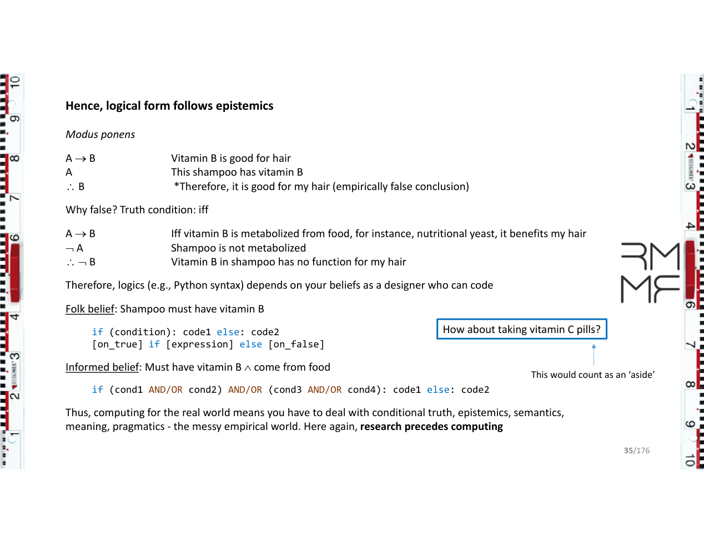
因此，逻辑形式（logical form）服从于认识论（epistemics）
肯定前件式（Modus ponens）
A → B
维生素 B 对头发有益
A
这款洗发水含有维生素 B
B
*因此，它对我的头发有益（在实证（empirically）上错误的结论）
为什么是错的？真值条件（Truth condition）：当且仅当（iff）
A → B
当且仅当（Iff）维生素 B 是从食物（例如营养酵母）中代谢而来时，它才对我的头发有益
A
洗发水不会被代谢
B
洗发水中的维生素 B 对我的头发没有作用
因此，逻辑（logics）（例如 Python 语法）取决于你作为一名会编程的设计师所持有的信念
大众信念（Folk belief）：洗发水一定得含有维生素 Bif (condition): code1 else: code2[on_true] if [expression] else [on_false]
有依据的信念（Informed belief）：必须让维生素 B 来自食物if (cond1 AND/OR cond2) AND/OR (cond3 AND/OR cond4): code1 else: code2
因此，面向真实世界进行计算，意味着你必须处理条件真值（conditional truth）、认识论（epistemics）、语义学（semantics）、意义以及语用学（pragmatics）——即这个错综复杂的经验世界（empirical world）。在这里，研究同样先于计算。
那吃维生素 C 药片呢？
这就算作一个“旁支补充（aside）”
查看英文提取原文
Hence, logical form follows epistemics Modus ponens A B Vitamin B is good for hair A This shampoo has vitamin B B *Therefore, it is good for my hair (empirically false conclusion) Why false? Truth condition: iff A B Iff vitamin B is metabolized from food, for instance, nutritional yeast, it benefits my hair A Shampoo is not metabolized B Vitamin B in shampoo has no function for my hair Therefore, logics (e.g., Python syntax) depends on your beliefs as a designer who can code Folk belief: Shampoo must have vitamin B if (condition): code1 else: code2 [on_true] if [expression] else [on_false] Informed belief: Must have vitamin B come from food if (cond1 AND/OR cond2) AND/OR (cond3 AND/OR cond4): code1 else: code2 Thus, computing for the real world means you have to deal with conditional truth, epistemics, semantics, meaning, pragmatics - the messy empirical world. Here again, research precedes computing How about taking vitamin C pills? 35/176 This would count as an ‘aside’

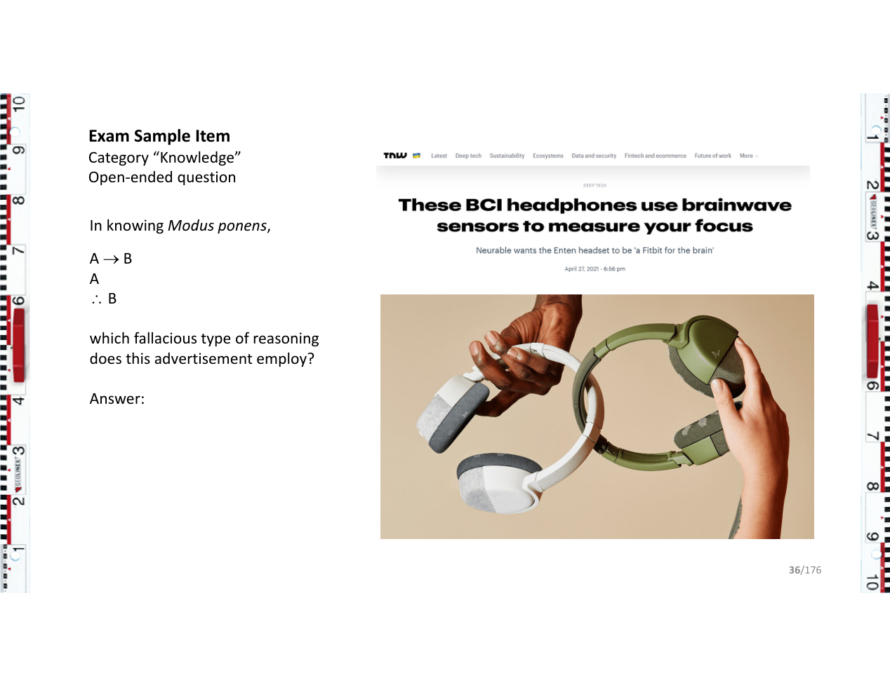
考试样题
类别：“知识（Knowledge）”
开放式问题（Open-ended question）
已知肯定前件式（Modus ponens）：
A → B
A
B
这则广告采用了哪种谬误推理类型（fallacious type of reasoning）？
答案：
查看英文提取原文
Exam Sample Item Category “Knowledge” Open-ended question In knowing Modus ponens, A B A B which fallacious type of reasoning does this advertisement employ? Answer: 36/176

考试样题
类别：“知识（Knowledge）”
开放式问题（Open-ended question）
已知肯定前件式（Modus ponens）：
A → B
A
B
这则广告采用了哪种谬误推理类型（fallacious type of reasoning）？
答案：
肯定后件谬误（Ex-consequence）
A → B
专注（Focus）→ 脑电波（Brainwave）
B
脑电波（Brainwave）
[A
专注（Focus）] 错误（False）
查看英文提取原文
Exam Sample Item Category “Knowledge” Open-ended question In knowing Modus ponens, A B A B which fallacious type of reasoning does this advertisement employ? Answer: Ex-consequence A B Focus Brainwave B Brainwave [A Focus] False 37/176

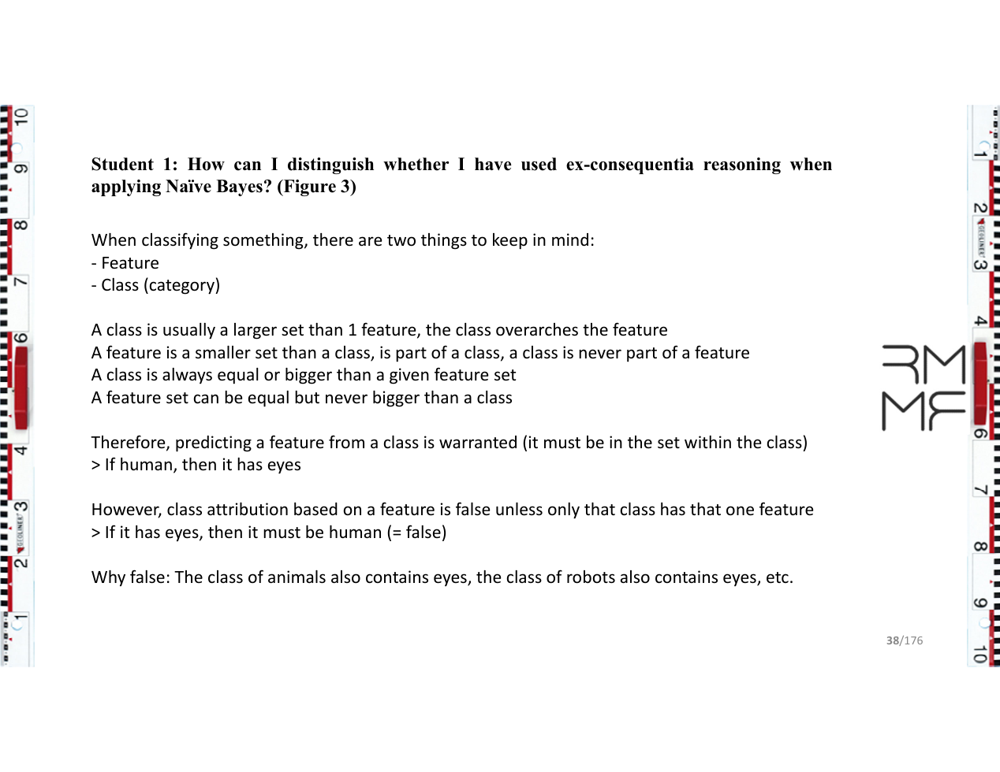
学生 1：在应用朴素贝叶斯（Naïve Bayes）时，我该如何判断自己是否使用了肯定后件推理（ex-consequentia reasoning）？（图 3）
在对某事物进行分类（classifying）时，需要牢记两点：
- 特征（Feature）
- 类别（Class (category)）
一个类别（class）通常是一个比单一特征（feature）更大的集合（set），类别（class）涵括了特征（feature）
一个特征（feature）是一个比类别（class）更小的集合（set），是类别（class）的一部分；一个类别（class）永远不会是一个特征（feature）的一部分
一个类别（class）总是等于或大于给定的特征集合（feature set）
一个特征集合（feature set）可以等于但永远不能大于一个类别（class）
因此，由类别（class）预测特征（feature）是有理有据的（它必定位于该类别（class）内部的集合（set）之中）
如果是人类，那么它就有眼睛
然而，基于某一个特征（feature）来进行类别归属（class attribution）则是错误的，除非只有这一个类别（class）拥有该单一特征（feature）
如果它有眼睛，那么它一定是人类（= 错误）
为什么错误：动物这一类别（class）也包含眼睛，机器人这一类别（class）也包含眼睛，等等。
查看英文提取原文
Student 1: How can I distinguish whether I have used ex-consequentia reasoning when applying Naïve Bayes? (Figure 3) When classifying something, there are two things to keep in mind: - Feature - Class (category) A class is usually a larger set than 1 feature, the class overarches the feature A feature is a smaller set than a class, is part of a class, a class is never part of a feature A class is always equal or bigger than a given feature set A feature set can be equal but never bigger than a class Therefore, predicting a feature from a class is warranted (it must be in the set within the class) > If human, then it has eyes However, class attribution based on a feature is false unless only that class has that one feature > If it has eyes, then it must be human (= false) Why false: The class of animals also contains eyes, the class of robots also contains eyes, etc. 38/176

让我们再做一些推理（reasoning）练习
这个结论有什么问题？
近期发现（趣味冷知识 brain snack）：
- 8% 的男性和 1% 的女性患有色盲
因此，总体（population）中有 9% 的人（在这个房间里几乎每 10 个人中就有 1 个）患有色盲
查看英文提取原文
Let’s exercise some more with reasoning What is wrong with this conclusion? Recent finding (brain snack): 8% males and 1% women are colour blind Thus, 9% of the population (that’s nearly 1 out of 10 in this room) suffer from colour-blindness 39/176

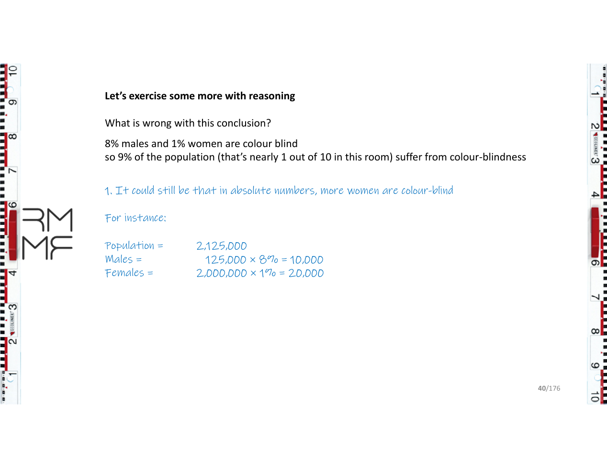
让我们再做一些推理（reasoning）练习
这个结论有什么问题？
8% 的男性和 1% 的女性患有色盲
所以总体（population）中有 9% 的人（在这个房间里几乎每 10 个人中就有 1 个）患有色盲
- 仍然可能出现的情况是，在绝对数量（absolute numbers）上，患有色盲的女性更多
例如：
总体（Population） = 2,125,000
男性 = 125,000 × 8% = 10,000
女性 = 2,000,000 × 1% = 20,000
查看英文提取原文
Let’s exercise some more with reasoning What is wrong with this conclusion? 8% males and 1% women are colour blind so 9% of the population (that’s nearly 1 out of 10 in this room) suffer from colour-blindness 1. It could still be that in absolute numbers, more women are colour-blind For instance: Population = 2,125,000 Males = 125,000 8% = 10,000 Females = 2,000,000 1% = 20,000 40/176

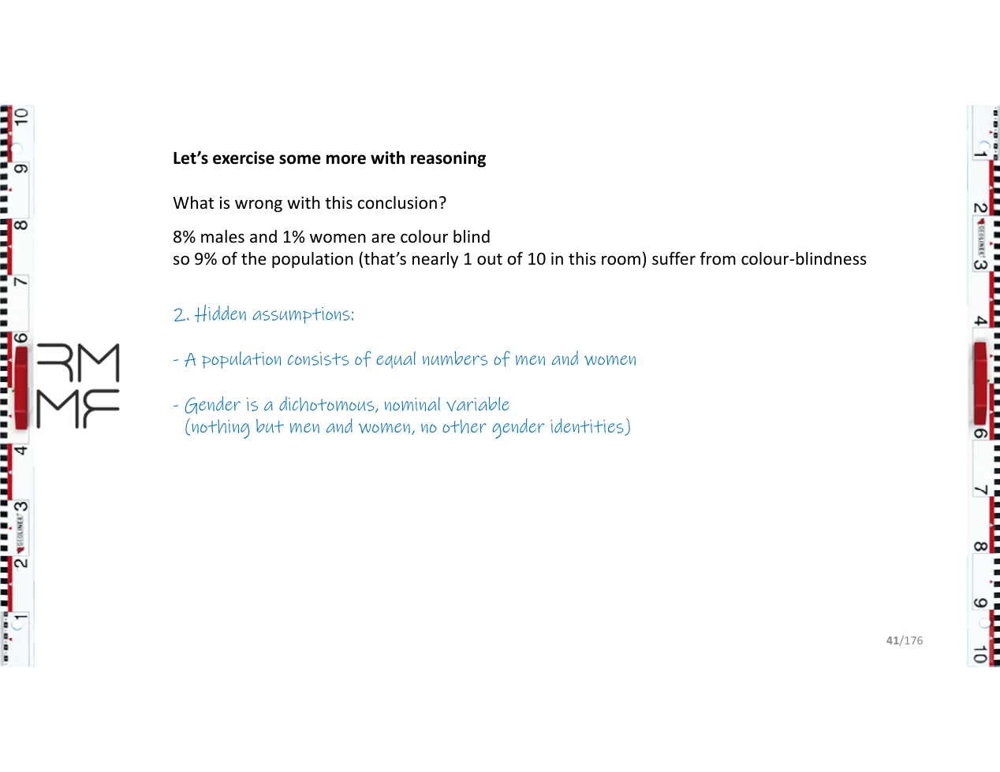
让我们再做一些推理（reasoning）练习
这个结论有什么问题？
8% 的男性和 1% 的女性患有色盲
所以总体（population）中有 9% 的人（在这个房间里几乎每 10 个人中就有 1 个）患有色盲
- 隐含假设（Hidden assumptions）：
- 一个总体（population）由数量相等的男性和女性组成
- 性别是一个二分类名义变量（dichotomous, nominal variable）（只有男性和女性，没有其他性别认同）
查看英文提取原文
Let’s exercise some more with reasoning What is wrong with this conclusion? 8% males and 1% women are colour blind so 9% of the population (that’s nearly 1 out of 10 in this room) suffer from colour-blindness 2. Hidden assumptions: - A population consists of equal numbers of men and women - Gender is a dichotomous, nominal variable (nothing but men and women, no other gender identities) 41/176

让我们再做一些推理（reasoning）练习
这个结论有什么问题？
8% 的男性和 1% 的女性患有色盲
所以总体（population）中有 9% 的人（在这个房间里几乎每 10 个人中就有 1 个）患有色盲
- 算法误用（Misuse of the algorithm）：
- 百分比是相对于特定子群体（sub-group）而言的，如果不参照它们所代表的绝对数量（absolute numbers），就不能直接相加
男性 = 125,000 的 8% = 10,000 名色盲患者
女性 = 2,000,000 的 1% = 20,000 名
- 只给出百分比是一种“欺骗”手法
超过 66% 的专家同意……（其实你只问了三个人）
查看英文提取原文
Let’s exercise some more with reasoning What is wrong with this conclusion? 8% males and 1% women are colour blind so 9% of the population (that’s nearly 1 out of 10 in this room) suffer from colour-blindness 3. Misuse of the algorithm: - Percentages are relative to sub-group and cannot be summated without reference to the absolute numbers they represent Male = 8% of 125,000 = 10,000 colour blind Female = 1% of 2,000,000 = 20,000 - To give percentages only is a form of ‘cheating’ More than 66% of our experts agree that… (you asked but three people) 42/176

让我们再多练习一下推理（reasoning）
这个结论（conclusion）有什么问题？
- 8% 的男性和 1% 的女性患有色盲
- 因此，总体（population）中有 9%（也就是说，在这个房间里差不多每 10 个人中就有 1 个人）患有色盲
- 数字修辞（The rhetoric of numbers）：
- 8 + 1 = 9
- 10 - 1 = 9（你从 10 里面减掉 1）
- 这全都是联想性的
- 2,125,000 人的 10% = 212,500 名色盲患者
然而：
- 男性 = 125,000 的 8% = 10,000
- 女性 = 2,000,000 的 1% = 20,000
查看英文提取原文
Let’s exercise some more with reasoning What is wrong with this conclusion? 8% males and 1% women are colour blind so 9% of the population (that’s nearly 1 out of 10 in this room) suffer from colour-blindness 4. The rhetoric of numbers: 8 + 1 = 9 10 - 1 = 9 (you take 1 from 10) It’s all associative 10% of 2,125,000 people = 212,500 colour blind However: Male = 8% of 125,000 = 10,000 Female = 1% of 2,000,000 = 20,000 43/176

让我们再多练习一下推理（reasoning）
我的一些计算机科学学生认为这全是“社会科学（social-science）那一套”，与他们硬核的专业毫不相干……
安全漏洞：8% 的 Intel Core i5 和 1% 的 Athlon 3000 存在硬件缺陷，因此 9% 的 CPU（也就是说，这间服务器机房里差不多每 10 台就有 1 台）存在内存泄漏
这个例子中隐藏的额外假设（assumption）是过度概化（overgeneralization）：
- 硬件缺陷会导致内存泄漏（谁说的？）
此外：我们是否知道 Intel 和 Athlon 在各个服务器机房中是否均匀分布（equally distributed）？
查看英文提取原文
Some of my computer science students think this is all ‘social-science stuff’ and none of their hardcore business... Security breach: 8% Intel Core i5 and 1% Athlon 3000 have hardware bugs so 9% of the CPUs (that’s nearly 1 out of 10 in this server room) suffer from memory leaks Extra assumption hidden in this example is the overgeneralization: Hardware bugs lead to memory leaks (who said so?) Also: Do we know whether Intel and Athlon are equally distributed over Server rooms? Let’s exercise some more with reasoning 44/176

让我们再多练习一下推理（reasoning）
- 报告结果（Reporting results）
Aluron β 是一种治疗甲型肝炎的药物，但伴有 10% 的炎症副作用风险（risk）。研究人员开发了 Plus 版本，临床试验（clinical trials）显示 AluronPlus 同等有效，但风险（risk）为 5%。
在他们研究论文（research paper）的摘要（Abstract）中，开发者写道：“通过向不稳定的酰胺中加入水杨酸类（licylic）成分，我们成功将与 Aluron β 相关的风险（risk）降低了 50%！”
你认为这种对所涉风险（risk）的表述是虚假的，还是具有误导性（misleading）？
回答：
药丸。图片由 mconnors (2004) 提供，来源：https://morguefile.com/p/3560
查看英文提取原文
Let’s exercise some more with reasoning Reporting results Aluron is a drug against Hepatitis A but comes with a 10% risk of inflammatory side effects. Researchers develop the Plus version and clinical trials show that AluronPlus is equally effective but at a risk of 5% In the Abstract of their research paper, the developers write: “By adding licylic components to the instable amides, we were capable of reducing the risk associated with Aluron with 50%!” Do you think that this representation of the risk involved is false or is it misleading? Answer: Pills. Photo courtesy mconnors (2004) at https://morguefile.com/p/3560 45/176

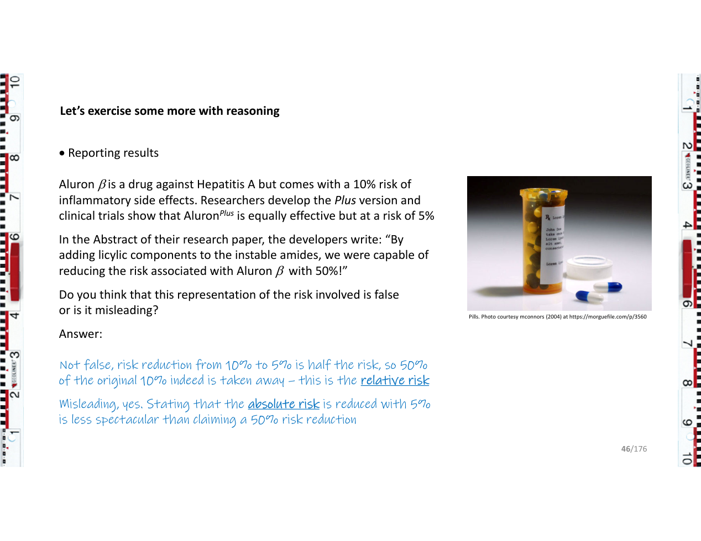
让我们再多练习一下推理（reasoning）
- 报告结果（Reporting results）
Aluron β 是一种治疗甲型肝炎的药物，但伴有 10% 的炎症副作用风险（risk）。研究人员开发了 Plus 版本，临床试验（clinical trials）显示 AluronPlus 同等有效，但风险（risk）为 5%。
在他们研究论文（research paper）的摘要（Abstract）中，开发者写道：“通过向不稳定的酰胺中加入水杨酸类（licylic）成分，我们成功将与 Aluron β 相关的风险（risk）降低了 50%！”
你认为这种对所涉风险（risk）的表述是虚假的，还是具有误导性（misleading）？
回答：
- 并非虚假，风险降低（risk reduction）从 10% 降至 5% 确实是原来风险（risk）的一半，因此原有 10% 中的 50% 的确被消除了——这就是相对风险（relative risk）
- 确实具有误导性（misleading）。说明绝对风险（absolute risk）降低了 5%，远不如声称“风险降低（risk reduction） 50%”那样听起来惊人
药丸。图片由 mconnors (2004) 提供，来源：https://morguefile.com/p/3560
查看英文提取原文
Let’s exercise some more with reasoning Reporting results Aluron is a drug against Hepatitis A but comes with a 10% risk of inflammatory side effects. Researchers develop the Plus version and clinical trials show that AluronPlus is equally effective but at a risk of 5% In the Abstract of their research paper, the developers write: “By adding licylic components to the instable amides, we were capable of reducing the risk associated with Aluron with 50%!” Do you think that this representation of the risk involved is false or is it misleading? Answer: Not false, risk reduction from 10% to 5% is half the risk, so 50% of the original 10% indeed is taken away – this is the relative risk Misleading, yes. Stating that the absolute risk is reduced with 5% is less spectacular than claiming a 50% risk reduction Pills. Photo courtesy mconnors (2004) at https://morguefile.com/p/3560 46/176

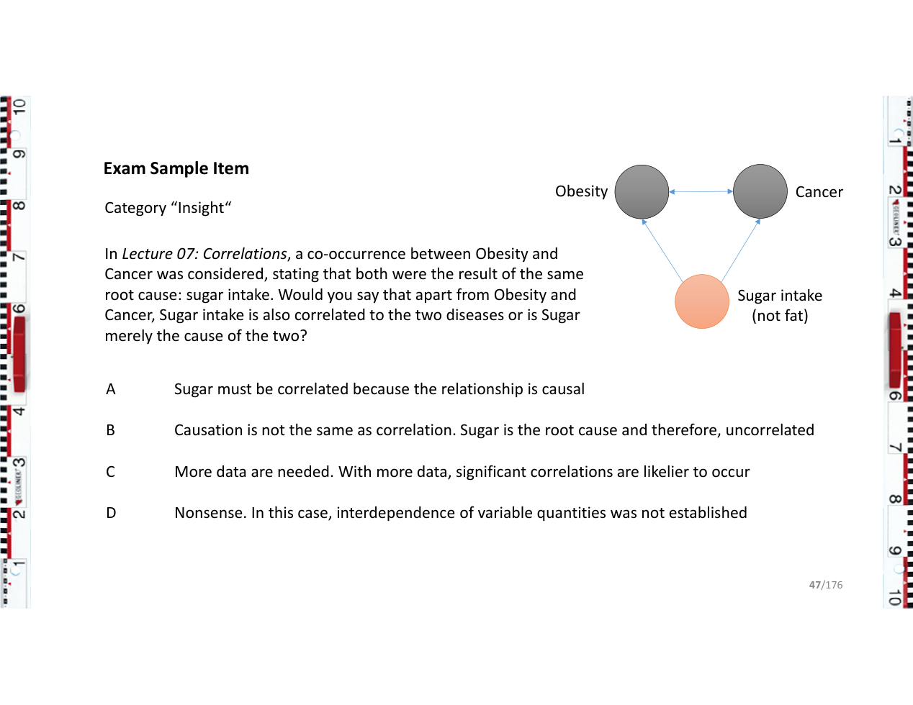
考试样题（Exam Sample Item）
类别：“洞察（Insight）”
- 肥胖（Obesity）
- 癌症（Cancer）
- 糖摄入（非脂肪）（Sugar intake (not fat)）
在《第 07 讲：相关（Correlations）》中，我们探讨了肥胖与癌症之间的共现（co-occurrence）现象，并指出两者都是同一个根本原因（root cause）导致的结果：糖摄入。你认为除了肥胖和癌症之外，糖摄入是否也与这两种疾病相关（correlated），还是说糖仅仅是这两者的原因（cause）？
A. 糖必然是相关（correlated）的，因为这种关系是因果性（causal）的
B. 因果关系（Causation）不同于相关关系（correlation）。糖是根本原因（root cause），因此是不相关（uncorrelated）的
C. 需要更多数据（data）。数据（data）越多，就越有可能出现显著相关（significant correlations）
D. 无稽之谈。在这个案例中，并未确立变量（variable quantities）之间的相互依存性（interdependence）
查看英文提取原文
Exam Sample Item Category “Insight“ Obesity Cancer Sugar intake (not fat) In Lecture 07: Correlations, a co-occurrence between Obesity and Cancer was considered, stating that both were the result of the same root cause: sugar intake. Would you say that apart from Obesity and Cancer, Sugar intake is also correlated to the two diseases or is Sugar merely the cause of the two? A Sugar must be correlated because the relationship is causal B Causation is not the same as correlation. Sugar is the root cause and therefore, uncorrelated C More data are needed. With more data, significant correlations are likelier to occur D Nonsense. In this case, interdependence of variable quantities was not established 47/176

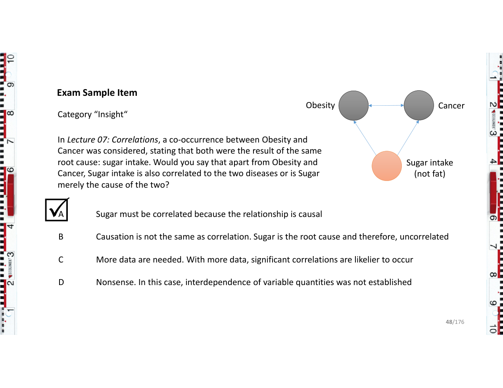
考试样题（Exam Sample Item）
类别：“洞察（Insight）”
- 肥胖（Obesity）
- 癌症（Cancer）
- 糖摄入（非脂肪）（Sugar intake (not fat)）
在《第 07 讲：相关（Correlations）》中，我们探讨了肥胖与癌症之间的共现（co-occurrence）现象，并指出两者都是同一个根本原因（root cause）导致的结果：糖摄入。你认为除了肥胖和癌症之外，糖摄入是否也与这两种疾病相关（correlated），还是说糖仅仅是这两者的原因（cause）？
A. 糖必然是相关（correlated）的，因为这种关系是因果性（causal）的
B. 因果关系（Causation）不同于相关关系（correlation）。糖是根本原因（root cause），因此是不相关（uncorrelated）的
C. 需要更多数据（data）。数据（data）越多，就越有可能出现显著相关（significant correlations）
D. 无稽之谈。在这个案例中，并未确立变量（variable quantities）之间的相互依存性（interdependence）
查看英文提取原文
Exam Sample Item Category “Insight“ Obesity Cancer Sugar intake (not fat) In Lecture 07: Correlations, a co-occurrence between Obesity and Cancer was considered, stating that both were the result of the same root cause: sugar intake. Would you say that apart from Obesity and Cancer, Sugar intake is also correlated to the two diseases or is Sugar merely the cause of the two? A Sugar must be correlated because the relationship is causal B Causation is not the same as correlation. Sugar is the root cause and therefore, uncorrelated C More data are needed. With more data, significant correlations are likelier to occur D Nonsense. In this case, interdependence of variable quantities was not established 48/176

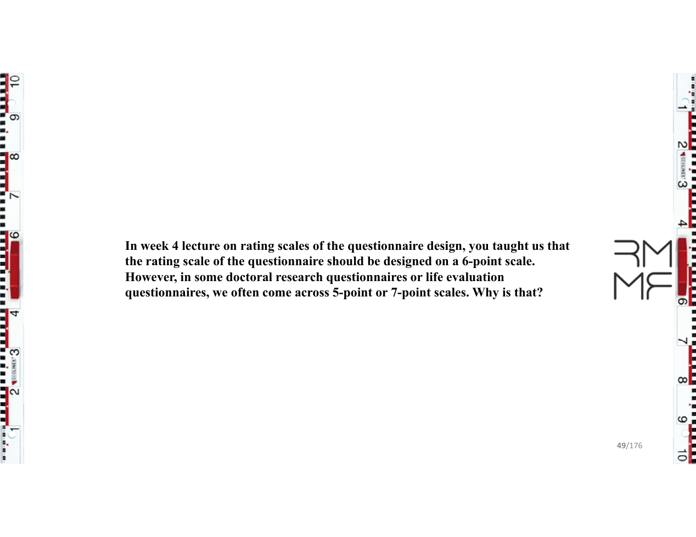
在第 4 周关于问卷设计（questionnaire design）中评定量表（rating scales）的课程上，您教导我们问卷（questionnaire）的评定量表（rating scale）应该设计为6 点量表（6-point scale）。然而，在一些博士研究问卷（questionnaires）或生活评估问卷（questionnaires）中，我们经常会遇到5 点或 7 点量表（5-point or 7-point scales）。这是为什么呢？
查看英文提取原文
In week 4 lecture on rating scales of the questionnaire design, you taught us that the rating scale of the questionnaire should be designed on a 6-point scale. However, in some doctoral research questionnaires or life evaluation questionnaires, we often come across 5-point or 7-point scales. Why is that? 49/176

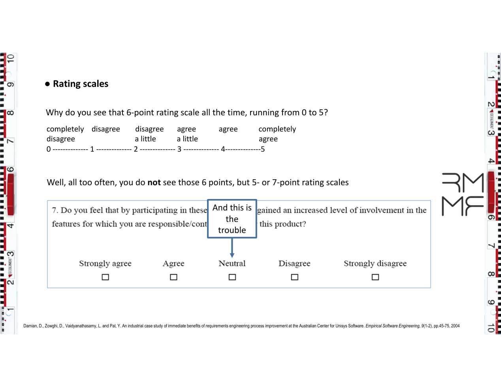
评定量表（Rating scales）
为什么你总是看到那种从 0 到 5 的6 点评定量表（6-point rating scale）？
完全不同意（completely disagree）— 不同意（disagree）— 有一点不同意（disagree a little）— 有一点同意（agree a little）— 同意（agree）— 完全同意（completely agree）
0 -------------- 1 -------------- 2 -------------- 3 -------------- 4 -------------- 5
而这正是问题所在（And this is the trouble）
不过，你太常看到的并不是这 6 个点，而是5 点或 7 点评定量表（5- or 7-point rating scales）
Damian, D., Zowghi, D., Vaidyanathasamy, L. and Pal, Y. An industrial case study of immediate benefits of requirements engineering process improvement at the Australian Center for Unisys Software. Empirical Software Engineering, 9(1-2), pp.45-75, 2004
查看英文提取原文
●Rating scales Why do you see that 6-point rating scale all the time, running from 0 to 5? completely disagree disagree agree agree completely disagree a little a little agree 0 -------------- 1 -------------- 2 -------------- 3 -------------- 4--------------5 Well, all too often, you do not see those 6 points, but 5- or 7-point rating scales Damian, D., Zowghi, D., Vaidyanathasamy, L. and Pal, Y. An industrial case study of immediate benefits of requirements engineering process improvement at the Australian Center for Unisys Software. Empirical Software Engineering, 9(1-2), pp.45-75, 2004 And this is the trouble

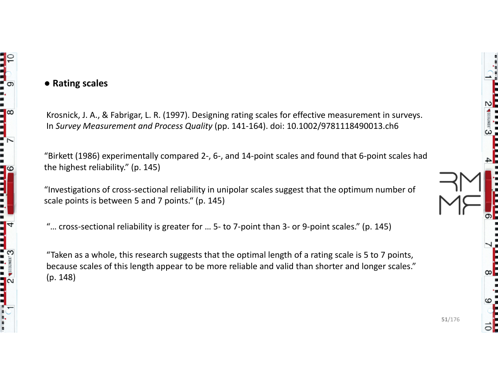
评定量表（Rating scales）
Krosnick, J. A., & Fabrigar, L. R. (1997). Designing rating scales for effective measurement in surveys. In Survey Measurement and Process Quality (pp. 141-164). doi: 10.1002/9781118490013.ch6
- “Birkett (1986) 通过实验（experimentally）比较了2 点、6 点和 14 点量表（2-, 6-, and 14-point scales），发现6 点量表（6-point scales）具有最高的信度（reliability）。”（第 145 页）
- “对单极量表（unipolar scales）中横断面信度（cross-sectional reliability）的研究表明，最佳的量表点数（scale points）在 5 到 7 点之间。”（第 145 页）
- “……5 至 7 点量表（5- to 7-point）的横断面信度（cross-sectional reliability）高于3 点或 9 点量表（3- or 9-point scales）。”（第 145 页）
- “总体而言，这项研究表明评定量表（rating scale）的最佳长度是 5 到 7 个点，因为这种长度的量表（scales）似乎比更短或更长的量表（scales）更加可靠（reliable）且有效（valid）。”（第 148 页）
查看英文提取原文
●Rating scales Krosnick, J. A., & Fabrigar, L. R. (1997). Designing rating scales for effective measurement in surveys. In Survey Measurement and Process Quality (pp. 141-164). doi: 10.1002/9781118490013.ch6 “Birkett (1986) experimentally compared 2-, 6-, and 14-point scales and found that 6-point scales had the highest reliability.” (p. 145) “Investigations of cross-sectional reliability in unipolar scales suggest that the optimum number of scale points is between 5 and 7 points.“ (p. 145) “… cross-sectional reliability is greater for … 5- to 7-point than 3- or 9-point scales.” (p. 145) “Taken as a whole, this research suggests that the optimal length of a rating scale is 5 to 7 points, because scales of this length appear to be more reliable and valid than shorter and longer scales.” (p. 148) 51/176

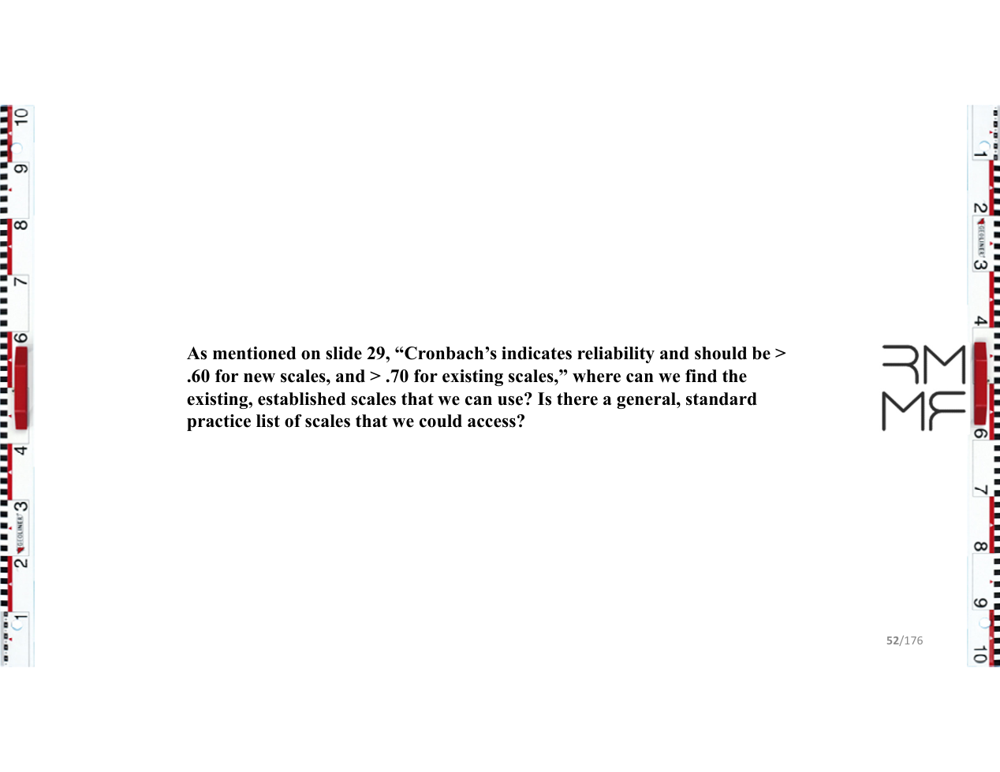
正如第 29 页幻灯片所述，“克龙巴赫系数（Cronbach’s）表明信度（reliability），对于新量表（new scales）应大于 .60，对于既有量表（existing scales）应大于 .70”，那么我们在哪里可以找到可供使用的既有成熟量表（existing, established scales）？是否有我们可以查阅的通用、标准惯例量表（scales）清单？
查看英文提取原文
As mentioned on slide 29, “Cronbach’s indicates reliability and should be > .60 for new scales, and > .70 for existing scales,” where can we find the existing, established scales that we can use? Is there a general, standard practice list of scales that we could access? 52/176

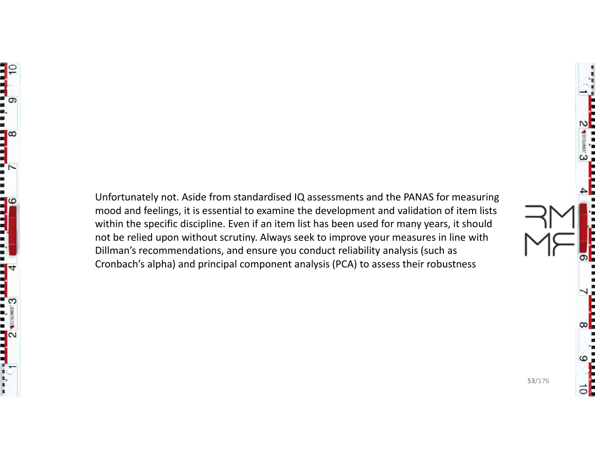
很遗憾，没有。除了标准化智商测评（standardised IQ assessments）以及用于测量情绪与感受的正负性情绪量表（PANAS）之外，必须考察特定学科领域内题项列表（item lists）的开发与效度验证（development and validation）情况。即使某份题项列表（item list）已经被使用了很多年，也不应在未经审慎检验的情况下盲目依赖。务必按照 Dillman 的建议持续改进你的测量工具（measures），并确保进行信度分析（reliability analysis）（例如克龙巴赫 α（Cronbach’s alpha））和主成分分析（principal component analysis, PCA），以评估其稳健性（robustness）。
查看英文提取原文
53/176 Unfortunately not. Aside from standardised IQ assessments and the PANAS for measuring mood and feelings, it is essential to examine the development and validation of item lists within the specific discipline. Even if an item list has been used for many years, it should not be relied upon without scrutiny. Always seek to improve your measures in line with Dillman’s recommendations, and ensure you conduct reliability analysis (such as Cronbach’s alpha) and principal component analysis (PCA) to assess their robustness

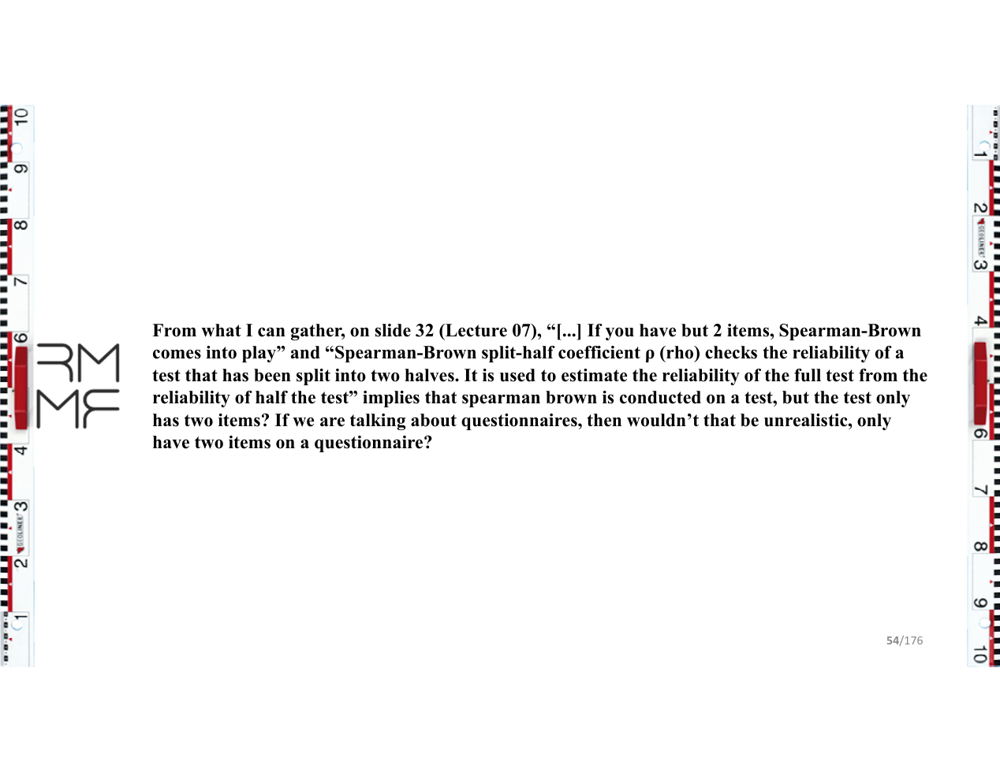
根据我的理解，在第 7 讲（Lecture 07）的第 32 页幻灯片中提到：“……如果你只有 2 个题项（items），斯皮尔曼-布朗（Spearman-Brown） 就派上用场了”以及“斯皮尔曼-布朗分半系数 ρ（Spearman-Brown split-half coefficient ρ (rho)） 用于检验被拆分为两半的测验（test）的信度（reliability）。它用于根据半个测验的信度来估计完整测验的信度”。这是否意味着斯皮尔曼-布朗检验是在一个测验上进行的，但该测验只有两个题项？如果我们讨论的是问卷（questionnaires），那么一份问卷上只有两个题项，岂不是不太现实吗？
查看英文提取原文
From what I can gather, on slide 32 (Lecture 07), “[...] If you have but 2 items, Spearman-Brown comes into play” and “Spearman-Brown split-half coefficient ρ (rho) checks the reliability of a test that has been split into two halves. It is used to estimate the reliability of the full test from the reliability of half the test” implies that spearman brown is conducted on a test, but the test only has two items? If we are talking about questionnaires, then wouldn’t that be unrealistic, only have two items on a questionnaire? 54/176

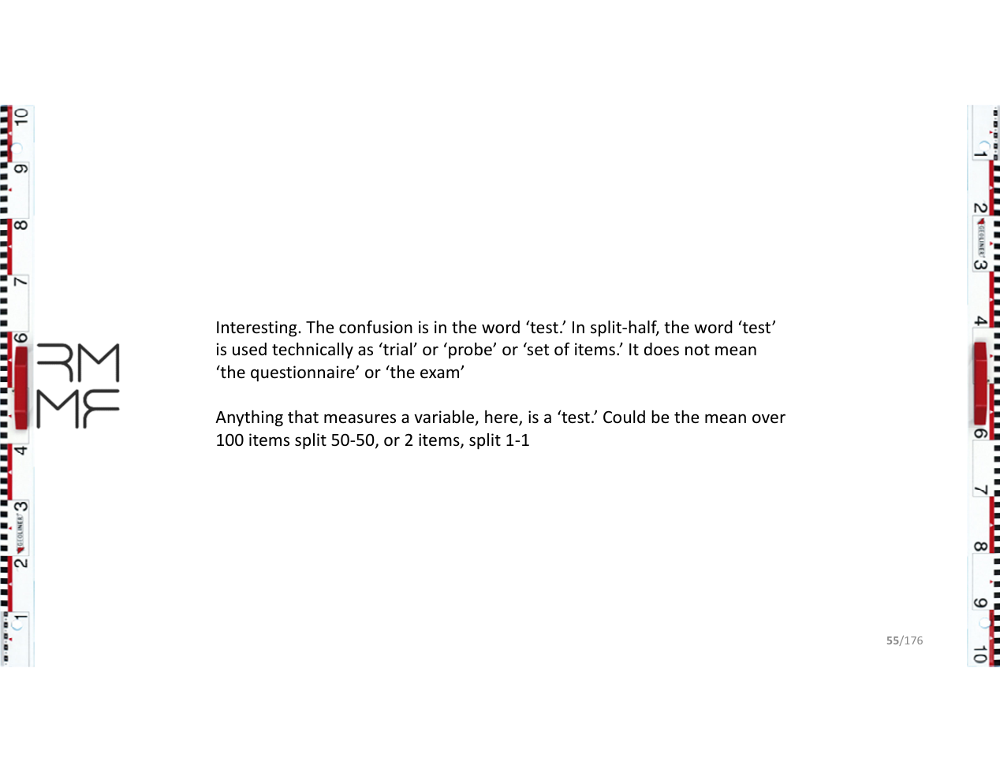
很有意思。这里的困惑在于“测验（test）”这个词。在分半法（split-half）中，“测验”一词在技术上用作“试次（trial）”、“探测项（probe）”或“题项集合（set of items）”的意思。它指的并不是“整份问卷（questionnaire）”或“考试（the exam）”。
在这里，任何用来测量某个变量（variable）的东西都是一个“测验”。它可以是 100 个题项（items） 50-50 对半拆分后的均值（mean），也可以是 2 个题项 1-1 对半拆分。
查看英文提取原文
55/176 Interesting. The confusion is in the word ‘test.’ In split-half, the word ‘test’ is used technically as ‘trial’ or ‘probe’ or ‘set of items.’ It does not mean ‘the questionnaire’ or ‘the exam’ Anything that measures a variable, here, is a ‘test.’ Could be the mean over 100 items split 50-50, or 2 items, split 1-1

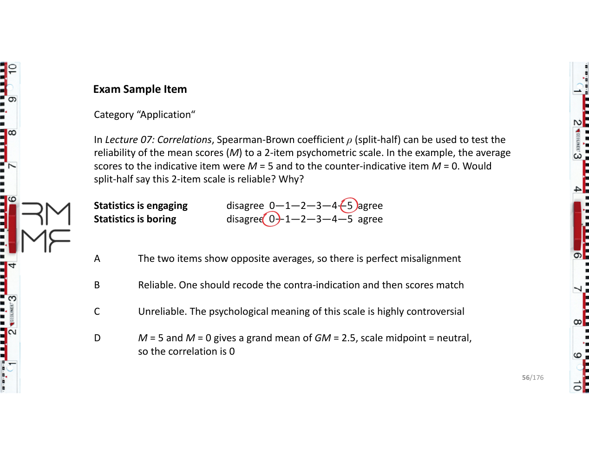
考试样题（Exam Sample Item）—— 类别：“应用”（Category “Application”）
在第 7 讲：相关（Correlations）中，斯皮尔曼-布朗系数 ρ（分半）（Spearman-Brown coefficient ρ (split-half)） 可用于检验一个 2 题项心理测量量表（psychometric scale）之均分（mean scores (M)） 的信度（reliability）。在该例子中，正指示题项（indicative item）的平均分为 M = 5，而反指示题项（counter-indicative item）的平均分为 M = 0。分半法（split-half）会判定这个 2 题项量表是可靠的吗？为什么？
- 统计学很吸引人（Statistics is engaging）
不同意（disagree） 0—1—2—3—4—5 同意（agree）
- 统计学很无聊（Statistics is boring）
不同意（disagree） 0—1—2—3—4—5 同意（agree）
A. 两个题项（items）显示出相反的平均分，因此存在完全的不一致（perfect misalignment）
B. 可靠（Reliable）。应当对反指示题项（contra-indication）进行反向编码（recode），之后分数就会匹配
C. 不可靠（Unreliable）。该量表（scale）的心理学意义极具争议性
D. M = 5 和 M = 0 给出的总均值（grand mean, GM） 为 GM = 2.5，量表中点（scale midpoint） = 中立（neutral），因此相关（correlation）为 0
查看英文提取原文
In Lecture 07: Correlations, Spearman-Brown coefficient ρ (split-half) can be used to test the reliability of the mean scores (M) to a 2-item psychometric scale. In the example, the average scores to the indicative item were M = 5 and to the counter-indicative item M = 0. Would split-half say this 2-item scale is reliable? Why? Statistics is engaging disagree 0—1—2—3—4—5 agree Statistics is boring disagree 0—1—2—3—4—5 agree A The two items show opposite averages, so there is perfect misalignment B Reliable. One should recode the contra-indication and then scores match C Unreliable. The psychological meaning of this scale is highly controversial D M = 5 and M = 0 gives a grand mean of GM = 2.5, scale midpoint = neutral, so the correlation is 0 Exam Sample Item Category “Application“ 56/176

考试样题（Exam Sample Item）—— 类别：“应用”（Category “Application”）
在第 7 讲：相关（Correlations）中，斯皮尔曼-布朗系数 ρ（分半）（Spearman-Brown coefficient ρ (split-half)） 可用于检验一个 2 题项心理测量量表（psychometric scale）之均分（mean scores (M)） 的信度（reliability）。在该例子中，正指示题项（indicative item）的平均分为 M = 5，而反指示题项（counter-indicative item）的平均分为 M = 0。分半法（split-half）会判定这个 2 题项量表是可靠的吗？为什么？
- 统计学很吸引人（Statistics is engaging）
不同意（disagree） 0—1—2—3—4—5 同意（agree）
- 统计学很无聊（Statistics is boring）
不同意（disagree） 0—1—2—3—4—5 同意（agree）
A. 两个题项（items）显示出相反的平均分，因此存在完全的不一致（perfect misalignment）
B. 可靠（Reliable）。应当对反指示题项（contra-indication）进行反向编码（recode），之后分数就会匹配
C. 不可靠（Unreliable）。该量表（scale）的心理学意义极具争议性
D. M = 5 和 M = 0 给出的总均值（grand mean, GM） 为 GM = 2.5，量表中点（scale midpoint） = 中立（neutral），因此相关（correlation）为 0
查看英文提取原文
In Lecture 07: Correlations, Spearman-Brown coefficient ρ (split-half) can be used to test the reliability of the mean scores (M) to a 2-item psychometric scale. In the example, the average scores to the indicative item were M = 5 and to the counter-indicative item M = 0. Would split-half say this 2-item scale is reliable? Why? Statistics is engaging disagree 0—1—2—3—4—5 agree Statistics is boring disagree 0—1—2—3—4—5 agree A The two items show opposite averages, so there is perfect misalignment B Reliable. One should recode the contra-indication and then scores match C Unreliable. The psychological meaning of this scale is highly controversial D M = 5 and M = 0 gives a grand mean of GM = 2.5, scale midpoint = neutral, so the correlation is 0 Exam Sample Item Category “Application“ 57/176

关于第 8 周讲义第 6 页（图 6 / Figure 6）内容的问题：
残差平方和（SSresiduals） 和 总平方和（SStotal） 是如何计算的？
查看英文提取原文
Question about the content in page 6 of week08 (Figure 6) How are SSresiduals and SStotal calculated? 58/176

误差（Error）
- 残差平方和（Residual Sum of Squares (RSS)）
- 残差平方和（Sum of Squared Residuals (SSR)）
- 估计误差平方和（Sum of Squared estimate of Errors (SSE)）
- 模型（model）与实证数据（empirical data）之间的偏差（Deviation）
- 较小的误差（error）意味着数据拟合得更紧密
残差平方和（SS Residuals (Sum of Squares of Residuals)） 是实际数据点与你的回归线（regression line）所预测的值之间的差异。想象你有一堆点（你的数据点）和穿过这些点的一条直线（你的预测）。残差（residuals）就是每个点到该直线的垂直距离。
要计算残差平方和，你需要取出每一个残差（residuals），将它们平方（使其变为正数并放大较大的差异），然后把它们全部加起来。这会给你一个单一的数值，从整体上告诉你你的预测偏离实际数据有多远。
- 图表标注：
- y 轴（y-axis）：用户体验（User experience），VR（虚拟现实）
- x 轴：拟人度（Human likeness）
查看英文提取原文
Error Residual Sum of Squares (RSS) Sum of Squared Residuals (SSR) Sum of Squared estimate of Errors (SSE) Deviation of the model from the empirical data Small error means tightly fitting data 59/176 SS Residuals (Sum of Squares of Residuals) are the differences between the actual data points and the values predicted by your regression line. Imagine you have a bunch of dots (your data points) and a straight line through those points (your prediction). The residuals are the vertical distances from each dot to the line. To calculate the SS Residuals, you take each of these residuals, square them (to make them positive and emphasize larger differences), and then add them all up. This gives you a single number that tells you how far off your predictions are from the actual data, overall y-axis User experience VR Human likeness

总平方和（SS Total (Total Sum of Squares)） 说明了数据中的总变异（total variation）。它考察的是实际数据点相对于 y 的平均值（你所有 y 值的均值（mean））偏离了多少。
要计算总平方和，你需要取出每一个数据点，求出该点与 y 的均值之间的差值，将这些差值平方，然后全部相加。这会给你一个代表数据中总变异性（total variability）的数值。
总之，残差平方和（SS Residuals） 告诉你数据中有多少变异性没有被你的回归模型（regression model）所解释，而总平方和（SS Total） 告诉你数据在整体上有多少变异性。
回归（regression）的目标是最小化残差平方和，也就是说，你希望你的直线尽可能紧密地拟合数据。
误差（Error）
- 残差平方和（Residual Sum of Squares (RSS)）
- 残差平方和（Sum of Squared Residuals (SSR)）
- 估计误差平方和（Sum of Squared estimate of Errors (SSE)）
- 模型（model）与实证数据（empirical data）之间的偏差（Deviation）
- 较小的误差（error）意味着数据拟合得更紧密
查看英文提取原文
SS Total (Total Sum of Squares) tells the total variation in your data. It looks at how much the actual data points vary from the average value of y (the mean of all your y-values) To calculate the SS Total, you take each data point, find the difference between that point and the mean of y, square these differences, and then add them all up. This gives you a number that represents the total variability in your data In summary, SS Residuals tell you how much of the variability in your data is not explained by your regression model, while SS Total tells you how much variability there is in your data overall The goal of regression is to minimize the SS Residuals, meaning you want your line to fit the data as closely as possible 60/176 Error Residual Sum of Squares (RSS) Sum of Squared Residuals (SSR) Sum of Squared estimate of Errors (SSE) Deviation of the model from the empirical data Small error means tightly fitting data

关于主成分分析（PCA）存在一些困惑，包括成分（component）是如何分类的，以及为什么“线性（linear）”在这里无关紧要？
你指的是什么意思？
查看英文提取原文
There is some confusion about PCA, which includes how component is classified and why linear is irrelevant? 61/176 What do you mean?

主成分分析（Principal Component Analysis (PCA)）
- 我们有许多来自大量题项（items）的数据点，它们之间都以这样或那样的方式彼此相关（correlated）
- 这会导致出现一份庞大的相关（correlations）列表，难以操作，也难以看清它们如何以最佳方式组合在一起，从而在不丢失彼此相对关系的情况下覆盖大多数数据点
图表与示例标注：
- 维度/概念：可供性（Affordances）、效用（Utility）
- 多个题项（items）之间存在大量两两相关系数（r）
- 题项 01（item 01）：可能用途（Possible use）
- 题项 02（item 02）：有用（Useful）
- 相关系数（r） = .90
- 诸如此类……（Etc., etc., etc.）
查看英文提取原文
Principal Component Analysis (PCA) Affordances Utility items items items items items items items items items r r r r r r r r r r r r r We have many data points from many items, all correlated one way or the other r That leads to a huge list of correlations, hard to manipulate and see how they fit together best to cover most data points without losing their relative relations item 01 Possible use item 02 Useful r = .90 62/176 Etc., etc., etc.

我们想要做的是摆脱一长串的相关（correlations）列表，看看哪些题项（items）解释了散点图（scatterplot）中最多的方差（variance），但同时我们希望保留每对题项之间的关系。
我们通过使用向量（vectors）来做到这一点：
- 图示标注：
- 可供性（Affordances）、效用（Utility）
- 题项 01（item 01）：可能用途（Possible use）
- 题项 02（item 02）：有用（Useful）
- 因此，相关（correlations）变成了坐标（coordinates）
主成分分析（PCA）
主成分分析（PCA） 提供了一种“数据摘要（data summary）”，在减少变量（variables）数量的同时，保留数据的变异性（variability）。
文献来源：Gonzalez, Nestor & Liou, Raymond & Kurth, Florian & Jiang, Hao & Saver, Jeffrey. (2018). Antiangiogenesis and medical therapy failure in intracranial atherosclerosis. Angiogenesis. 21. 10.1007/s10456-017-9578-1.
查看英文提取原文
What we want is to get rid of lists of correlations and see which items explain the most variance in the scatterplot but we want to preserve the relation between each pair of items We do that by using vectors Affordances Utility item 01 Possible use item 02 Useful Thus, correlations become coordinates 63/176 PCA PCA provides a ‘data summary,’ reducing the number of variables, while keeping the variability of the data Gonzalez, Nestor & Liou, Raymond & Kurth, Florian & Jiang, Hao & Saver, Jeffrey. (2018). Antiangiogenesis and medical therapy failure in intracranial atherosclerosis. Angiogenesis. 21. 10.1007/s10456-017-9578-1.

模拟考试：多项选择题（Multiple-choice items）
在选择题（MC questions）中，通常会有较好和较差的作答选项。要求永远是你必须选出最佳（最精确、最完整）的答案。这是为了避免敷衍学习，以及仅仅“认出”一个答案而不是真正掌握它。我的题目通常会有一个完全荒谬的选项，这就把范围缩小到了三个选项。然后会有两个选项互相竞争，一个完全正确，另一个大致方向正确。所以这就成了一场五五开的赌博——除非你百分之百确定。
A. 切中要害且全面的答案
B. 模糊正确但往往不完整的答案
C. 颠倒推理，或者带有边缘性、邻近性内容的答案
D. 堆砌随机专业术语的胡言乱语
查看英文提取原文
Test exam: Multiple-choice items It is common for MC questions to have better and worse answering options. The requirement always is that you select the best (most precise and complete) answer. This is to avoid casual learning and merely ‘recognizing’ an answer rather than knowing the answer. My questions usually have one answering option that is fully ridiculous. That brings it back to three choices. Then two choices are competing, one exactly right, the other more-or-less into the right direction. So that’s a 50-50% gamble - unless you are 100% sure A Right on point and comprehensive answer B Vaguely right answer but often incomplete C An answer that reverses the reasoning or with something peripheral or adjacent D Gobbledygook with random technical terms 64/176

考试样题（Exam Sample Item）
类别：「应用（Application）」
本题涉及第 8 讲（Lecture 08）：（多元）回归（(Multiple) regression）。一家零售企业需要预测下个月的销售额。这很难判断，因为影响这一数字的变量（variables）实在太多：天气、新款发布、竞争对手的动向，或是外面人行道上正在进行的维修工程。
很多人可能都有自己的看法，比如财务部的 Bob 或在销售楼层工作了十年的 Rachel，但回归分析（regression analysis）会梳理所有可测量变量（measurable variables），指出哪些变量会产生多大的影响。该分析能告诉你哪些因素会影响销售额，以及这些变量（variables）之间如何相互交互作用（interact）。这有助于服务设计师做出更好的数据驱动的决策（data-driven decisions）。
在这个零售企业的例子中，什么是自变量（independents），什么是因变量（dependent/s）？
A. 因变量（Dependent） = 销售额；自变量（Independents）：天气、竞争对手行为、人行道维修，以及新款发布
B. 因变量（Dependents） = 天气、竞争对手行为、人行道维修，以及新款发布；自变量（Independent）：销售额
C. 因变量（Dependent） = 竞争对手行为；自变量（Independents）：天气、销售额、人行道维修，以及新款发布
D. 因变量（Dependents） = 天气、销售额、人行道维修，以及新款发布；自变量（Independent）：竞争对手行为
查看英文提取原文
Exam Sample Item Category “Application” This item is about Lecture 08: (Multiple) regression. A retail business needs to predict sales figures for the next month. It is difficult to know, since there are so many variables surrounding that number: the weather, a new model release, what the competitors do, or the maintenance work going on outside on the pavement Many may have an opinion, such as Bob from accounts or Rachel who has worked on the sales floor for ten years, but regression analysis sorts through all the measurable variables, indicating which will have how high an impact. The analysis tells you which factors will influence sales and how the variables interact with one another. This helps the service designer to make better, data-driven decisions In this retail business example, what are the independents and what the dependent/s? A Dependent = sales; Independents: weather, competitor behavior, footpath maintenance, and new model releases B Dependents = weather, competitor behavior, footpath maintenance, and new model releases; Independent: sales C Dependent = competitor behavior; Independents: weather, sales, footpath maintenance, and new model releases D Dependents = weather, sales, footpath maintenance, and new model releases; Independent: competitor behavior 65/176

考试样题（Exam Sample Item）
类别：「应用（Application）」
本题涉及第 8 讲（Lecture 08）：（多元）回归（(Multiple) regression）。一家零售企业需要预测下个月的销售额。这很难判断，因为影响这一数字的变量（variables）实在太多：天气、新款发布、竞争对手的动向，或是外面人行道上正在进行的维修工程。
很多人可能都有自己的看法，比如财务部的 Bob 或在销售楼层工作了十年的 Rachel，但回归分析（regression analysis）会梳理所有可测量变量（measurable variables），指出哪些变量会产生多大的影响。该分析能告诉你哪些因素会影响销售额，以及这些变量（variables）之间如何相互交互作用（interact）。这有助于商业设计师做出更好的数据驱动的决策（data-driven decisions）。
在这个零售企业的例子中，什么是自变量（independents），什么是因变量（dependent/s）？
A. 因变量（Dependent） = 销售额；自变量（Independents）：天气、竞争对手行为、人行道维修，以及新款发布
B. 因变量（Dependents） = 天气、竞争对手行为、人行道维修，以及新款发布；自变量（Independent）：销售额
C. 因变量（Dependent） = 竞争对手行为；自变量（Independents）：天气、销售额、人行道维修，以及新款发布
D. 因变量（Dependents） = 天气、销售额、人行道维修，以及新款发布；自变量（Independent）：竞争对手行为
查看英文提取原文
Exam Sample Item Category “Application” This item is about Lecture 08: (Multiple) regression. A retail business needs to predict sales figures for the next month. It is difficult to know, since there are so many variables surrounding that number: the weather, a new model release, what the competitors do, or the maintenance work going on outside on the pavement Many may have an opinion, such as Bob from accounts or Rachel who has worked on the sales floor for ten years, but regression analysis sorts through all the measurable variables, indicating which will have how high an impact. The analysis tells you which factors will influence sales and how the variables interact with one another. This helps the business designer to make better, data-driven decisions In this retail business example, what are the independents and what the dependent/s? A Dependent = sales; Independents: weather, competitor behavior, footpath maintenance, and new model releases B Dependents = weather, competitor behavior, footpath maintenance, and new model releases; Independent: sales C Dependent = competitor behavior; Independents: weather, sales, footpath maintenance, and new model releases D Dependents = weather, sales, footpath maintenance, and new model releases; Independent: competitor behavior 66/176

各类回归技术（regression techniques）在目的和输出上有何本质区别？它们通常在什么场景下使用（涉及哪些主题、如何使用以及为了达到什么目的）？
查看英文提取原文
How do the various regression techniques fundamentally differ in their purpose and output? Under what scenarios are they typically used (what kinds of topics, how they are used and to achieve what purpose)? 67/176

| 回归技术（Regression technique） | 目的与输出（Purpose and output） | 场景与用途（Scenarios and uses） |
|---|---|---|
| 线性回归（Linear Regression） | 根据一个预测变量（predictor）预测连续结果变量（continuous outcome）；输出回归方程（regression equation）与 决定系数（R²） | 用于检验单一自变量（independent variable）与连续因变量（continuous dependent variable）之间的关系（例如：根据学习时长预测考试成绩） |
| 多元回归（Multiple Regression） | 根据两个或更多预测变量（predictors）预测连续结果变量（continuous outcome）；输出每个预测变量（predictor）的回归系数（coefficients）及整体模型拟合度（overall model fit） | 评估多个变量（variables）对连续结果变量（continuous outcome）的影响（例如：根据功能、尺寸和品牌预测机器人价格） |
| 逻辑回归（Logistic Regression） | 预测分类结果（categorical）（通常为二分类（binary））结果；输出优势比（odds ratios）与概率（probabilities） | 用于结果为分类变量（categorical）的场景（例如：根据糖分摄入量预测患者是否患有某种疾病） |
| 中介—调节分析（Mediation-Moderation Analysis） | 探索变量（variables）之间的间接效应（indirect）（中介（mediation））与条件效应（conditional）（调节（moderation））效应；输出路径系数（path coefficients）与交互效应（interaction effects） | 用于理解作用机制与条件关系（例如：压力是否在工作负荷对健康的影响中起中介作用（mediates），或该效应是否因年龄而异） |
| 结构方程建模（Structural Equation Modelling, SEM） | 检验多个变量（variables）之间的复杂关系，包括潜变量构念（latent constructs）；输出模型拟合指标（model fit indices）与路径系数（path coefficients） | 用于理论检验（theory testing）以及为复杂系统建模（例如：考察多个因素如何相互交互作用（interact）以影响幸福感） |
查看英文提取原文
68/176 Regression technique Purpose and output Scenarios and uses Linear Regression Predicts a continuous outcome from one predictor; outputs a regression equation and R² Used when examining the relationship between a single independent variable and a continuous dependent variable (e.g., predicting exam scores from study hours) Multiple Regression Predicts a continuous outcome from two or more predictors; outputs coefficients for each predictor and overall model fit Assesses the influence of several variables on a continuous outcome (e.g., predicting robot prices from function, size, and brand) Logistic Regression Predicts a categorical (usually binary) outcome; outputs odds ratios and probabilities Used when the outcome is categorical (e.g., predicting whether a patient has a disease based on sugar intake) Mediation-Moderation Analysis Explores indirect (mediation) and conditional (moderation) effects between variables; outputs path coefficients and interaction effects Used to understand mechanisms and conditional relationships (e.g., whether stress mediates the effect of workload on health, or if the effect differs by age Structural Equation Modelling (SEM) Tests complex relationships among multiple variables, including latent constructs; outputs model fit indices and path coefficients Used for theory testing and modelling complex systems (e.g., examining how multiple factors interact to influence wellbeing)

考试样题（Exam Sample Item）
类别：「应用（Application）」
本题同样涉及第 8 讲（Lecture 08）：（多元）回归（(Multiple) regression）。一位网店设计师需要评估网站访问量以开发下一轮迭代版本，但他/她意识到，影响网站访问的因素远不止所提供的商品本身。
他/她查看了点击日志，并研究了以下日志指标（log metrics）：访客人数、每位访客的点击次数、页面浏览顺序、实际购买量、以及与加载时间相关的停留时间：
tload < 2s：这会让顾客感到满意8s > tload < 2s：顾客处于可容忍状态tload > 8s：顾客感到不满意
同事们各自对应该关注哪些重要内容持有不同观点，但这位设计师没有去咨询同事，而是决定对所有内容直接运行回归分析（regression analysis）。
为什么这位网店设计师注定会得出错误的结论？
A. 没有理论（theory）来指导其探索，并且忽略了潜在的混淆因素（confounds）
B. tload 测量属于顺序尺度（ordinal），因此不允许对体验评分进行回归（regression）
C. 体验与持续时间之间的联系仅基于直觉猜测
D. A 和 C 都正确
查看英文提取原文
Exam Sample Item Category “Application” This item also is about Lecture 08: (Multiple) regression. A web-shop designer needs to assess the number of site visits to develop the next iteration but realises that many more factors may influence visiting the site than just what is on offer S/he checks the click logs and looks into the log metrics: number of visitors, number of clicks per visitor, order of visiting the pages, actual purchases, lingering time as related to load time: tload < 2s that will make the customer happy 8s > tload < 2s the customer will be tolerating tload > 8s customer dissatisfied Instead of consulting with the colleagues, who all have their own view on what is important to look for, the designer decides to run regression analysis on everything Why is the web-shop designer bound to draw the wrong conclusions? A Has no theory to guide his/her search and overlooks possible confounds B The tload measure is ordinal and so regression on experience rates is not allowed C The connection between experience and duration is based on a hunch D A and C are correct 69/176

考试样题（Exam Sample Item）
类别：「应用（Application）」
本题同样涉及第 8 讲（Lecture 08）：（多元）回归（(Multiple) regression）。一位网店设计师需要评估网站访问量以开发下一轮迭代版本，但他/她意识到，影响网站访问的因素远不止所提供的商品本身。
他/她查看了点击日志，并研究了以下日志指标（log metrics）：访客人数、每位访客的点击次数、页面浏览顺序、实际购买量、以及与加载时间相关的停留时间：
tload < 2s：这会让顾客感到满意8s > tload < 2s：顾客处于可容忍状态tload > 8s：顾客感到不满意
同事们各自对应该关注哪些重要内容持有不同观点，但这位设计师没有去咨询同事，而是决定对所有内容直接运行回归分析（regression analysis）。
为什么这位网店设计师注定会得出错误的结论？
A. 没有理论（theory）来指导其探索，并且忽略了潜在的混淆因素（confounds）
B. tload 测量属于顺序尺度（ordinal），因此不允许对体验评分进行回归（regression）
C. 体验与持续时间之间的联系仅基于直觉猜测
D. A 和 C 都正确
查看英文提取原文
Exam Sample Item Category “Application” This item also is about Lecture 08: (Multiple) regression. A web-shop designer needs to assess the number of site visits to develop the next iteration but realises that many more factors may influence visiting the site than just what is on offer S/he checks the click logs and looks into the log metrics: number of visitors, number of clicks per visitor, order of visiting the pages, actual purchases, lingering time as related to load time: tload < 2s that will make the customer happy 8s > tload < 2s the customer will be tolerating tload > 8s customer dissatisfied Instead of consulting with the colleagues, who all have their own view on what is important to look for, the designer decides to run regression analysis on everything Why is the web-shop designer bound to draw the wrong conclusions? A Has no theory to guide his/her search and overlooks possible confounds B The tload measure is ordinal and so regression on experience rates is not allowed C The connection between experience and duration is based on a hunch D A and C are correct 70/176

考试样题（Exam Sample Item）
类别：“应用”（Category “Application”）
本题同样涉及第 8 讲：（多元）回归（(Multiple) regression）。一位网店设计师需要评估网站访问量以开发下一个迭代版本，但他意识到，影响网站访问量的因素远不止网站所提供的商品本身。
他查看了点击日志，并检视了各项日志指标（log metrics）：访客数量、每位访客的点击次数、浏览页面的顺序、实际购买情况，以及与加载时间相关的停留时间：
tload < 2s：这会让顾客感到满意8s > tload < 2s：顾客处于可容忍状态tload > 8s：顾客感到不满
该设计师没有去咨询同事（每位同事对于应该关注哪些重要指标都有各自看法），而是决定对所有数据直接运行回归分析（regression analysis）。
为什么这位网店设计师注定会得出错误结论？
A. 没有理论（theory）来指导其检索探索，且忽视了可能的混淆因素（confounds）
B. tload 测量指标属于序数（ordinal）尺度，因此不允许对体验评分（experience rates）进行回归（regression）
C. 体验与持续时间之间的联系仅仅基于直觉臆测
D. A 和 C 都正确
补充说明：人们可能只是在网上随便浏览、可能在其他网站点错了链接、猫踩到了鼠标、竞争对手在查看你的网站、税务局在进行例行核查，等等。谁能说我就一定满意呢？仅仅因为加载时间只有 1 秒吗？
查看英文提取原文
Exam Sample Item Category “Application” This item also is about Lecture 08: (Multiple) regression. A web-shop designer needs to assess the number of site visits to develop the next iteration but realises that many more factors may influence visiting the site than just what is on offer S/he checks the click logs and looks into the log metrics: number of visitors, number of clicks per visitor, order of visiting the pages, actual purchases, lingering time as related to load time: tload < 2s that will make the customer happy 8s > tload < 2s the customer will be tolerating tload > 8s customer dissatisfied Instead of consulting with the colleagues, who all have their own view on what is important to look for, the designer decides to run regression analysis on everything Why is the web-shop designer bound to draw the wrong conclusions? A Has no theory to guide his/her search and overlooks possible confounds B The tload measure is ordinal and so regression on experience rates is not allowed C The connection between experience and duration is based on a hunch D A and C are correct People may be surfing the web, they may have clicked the wrong link on another site, the cat stepped on the mouse, competitors checking you out, the tax office running a check, etc. Who says I am happy? Merely because of 1 second load time? 71/176

考试样题，开放式问题（Open-ended question），类别：“应用”（Category “Application”）
本题涉及第 8 讲（多元）回归（(Multiple) regression）。假设你正在研究一款 VR 健康应用 X 对用户体验 Y 的效应（effect），并且你推测该效应是由健康知识 M 的增加所中介（mediated）的。此外，你认为用户对该应用的体验方式还可能取决于用户健康生活的动机水平 W。
请描述以下路径：
A. 中介效应（Mediation）：
B. 调节效应（Moderation）：
C. 有调节的中介（Moderated Mediation）：
D. 有中介的调节（Mediated Moderation）：
Oakwood Medical Avatar（3-D 健康自拍）
查看英文提取原文
Exam sample item, Open-ended question, Category “Application” This question pertains to Lecture 08 (Multiple) regression. Imagine you are studying the effect of a VR health app X on user experience Y, and you suspect that this effect is mediated by increased health knowledge M. Additionally, you think that how the app is experienced might also depend on the level of user motivation W to live healthily Describe the path for: A. Mediation: B. Moderation: C. Moderated Mediation: D. Mediated Moderation: Oakwood Medical Avatar (3-D Healthy Selfie) 72/51

考试样题，开放式问题（Open-ended question），类别：“应用”（Category “Application”）
本题涉及第 8 讲（多元）回归（(Multiple) regression）。假设你正在研究一款 VR 健康应用 X 对用户体验 Y 的效应（effect），并且你推测该效应是由健康知识 M 的增加所中介（mediated）的。此外，你认为用户对该应用的体验方式还可能取决于用户健康生活的动机水平 W。
请描述以下路径：
A. 中介效应（Mediation）：VR 健康应用 X → 健康知识 M → 用户体验 Y
（图示节点：X、M、Y）
B. 那么调节效应（Moderation）呢？
查看英文提取原文
Exam sample item, Open-ended question, Category “Application” This question pertains to Lecture 08 (Multiple) regression. Imagine you are studying the effect of a VR health app X on user experience Y, and you suspect that this effect is mediated by increased health knowledge M. Additionally, you think that how the app is experienced might also depend on the level of user motivation W to live healthily Describe the path for: A. Mediation: VR health app X Health knowledge M User experience Y 73/51 X M Y B. So how about Moderation?

考试样题，开放式问题（Open-ended question），类别：“应用”（Category “Application”）
本题涉及第 8 讲（多元）回归（(Multiple) regression）。假设你正在研究一款 VR 健康应用 X 对用户体验 Y 的效应（effect），并且你推测该效应是由健康知识 M 的增加所中介（mediated）的。此外，你认为用户对该应用的体验方式还可能取决于用户健康生活的动机水平 W。
请描述以下路径：
B. 调节效应（Moderation）：VR 健康应用 X 对用户体验 Y 的效应（effect）受到用户动机 W 的影响
（图示节点：X、Y、W）
C. 有调节的中介（Moderated Mediation）：
查看英文提取原文
Exam sample item, Open-ended question, Category “Application” This question pertains to Lecture 08 (Multiple) regression. Imagine you are studying the effect of a VR health app X on user experience Y, and you suspect that this effect is mediated by increased health knowledge M. Additionally, you think that how the app is experienced might also depend on the level of user motivation W to live healthily Describe the path for: B. Moderation: The effect of the VR health app X on User experience Y is influenced by User motivation W 74/51 X Y W C. Moderated Mediation:

考试样题，开放式问题（Open-ended question），类别：“应用”（Category “Application”）
本题涉及第 8 讲（多元）回归（(Multiple) regression）。假设你正在研究一款 VR 健康应用 X 对用户体验 Y 的效应（effect），并且你推测该效应是由健康知识 M 的增加所中介（mediated）的。此外，你认为用户对该应用的体验方式还可能取决于用户健康生活的动机水平 W。
请描述以下路径：
C. 有调节的中介（Moderated Mediation）：健康知识 M 在 VR 健康应用 X 与用户体验 Y 关系中的中介效应（mediation effect），取决于用户动机 W
（图示节点：X、M、Y、W）
D. 有中介的调节（Mediated Moderation）：
查看英文提取原文
Exam sample item, Open-ended question, Category “Application” This question pertains to Lecture 08 (Multiple) regression. Imagine you are studying the effect of a VR health app X on user experience Y, and you suspect that this effect is mediated by increased health knowledge M. Additionally, you think that how the app is experienced might also depend on the level of user motivation W to live healthily Describe the path for: C. Moderated Mediation: The mediation effect of Health knowledge M on the relationship between the VR health app X and User experience Y depends on user motivation W 75/51 X M Y W D. Mediated Moderation:

考试样题，开放式问题（Open-ended question），类别：“应用”（Category “Application”）
本题涉及第 8 讲（多元）回归（(Multiple) regression）。假设你正在研究一款 VR 健康应用 X 对用户体验 Y 的效应（effect），并且你推测该效应是由健康知识 M 的增加所中介（mediated）的。此外，你认为用户对该应用的体验方式还可能取决于用户健康生活的动机水平 W。
请描述以下路径：
D. 有中介的调节（Mediated Moderation）：VR 健康应用 X 与用户动机 W 之间的交互作用（interaction）会影响健康知识 M，而健康知识 M 进而影响用户体验 Y
（图示节点：X、Y、M、W）
查看英文提取原文
Exam sample item, Open-ended question, Category “Application” This question pertains to Lecture 08 (Multiple) regression. Imagine you are studying the effect of a VR health app X on user experience Y, and you suspect that this effect is mediated by increased health knowledge M. Additionally, you think that how the app is experienced might also depend on the level of user motivation W to live healthily Describe the path for: D. Mediated Moderation: The interaction between the VR health app X and User motivation W influences Health knowledge M, which in turn affects User experience Y 76/51 X Y M W

考试样题（Exam Sample Item）
类别：“洞察”（Category “Insight”）
本题涉及第 8 讲：（多元）回归（(Multiple) regression）。相关（correlation）并不等于因果关系（causation），但线性回归（linear regression）呢？在线性回归（linear regression）中，“因变量（dependent variable）与自变量（independent variable）之间的相关（correlation）源自因果关系（causation）”这一说法是否正确？
A. 不正确。在满足恰当条件的情况下，从相关（correlation）推论到因果可能是合理的；否则，这就是一种谬误推理（fallacious inference）
B. 正确。因变量（dependent variable）的变化是根据自变量（independent variable）的变化进行预测和检验的
C. 正确。通过采用可废止推理（defeasible reasoning），可以基于相关数据（correlational data）提出归纳论证（inductive arguments）
D. 不正确。回归（Regression）应当考虑测量误差（measurement error），从而为变量（variables）之间的关系提供更精确的估计值（estimates）
查看英文提取原文
Exam Sample Item Category “Insight“ This item is about Lecture 08: (Multiple) regression. A correlation is not causation but how about linear regression? In linear regression, is the statement correct that correlation between dependent and independent variable comes from causation? A No. Arguing from correlation to cause may be reasonable under the correct conditions; otherwise, it is a fallacious inference B Yes. Changes in the dependent variable are predicted from and tested against changes in the independent variable C Yes, by employing defeasible reasoning, inductive arguments can be raised based on correlational data D No. Regression should account for measurement error, providing more accurate estimates of relationships among variables 77/176

考试样题（Exam Sample Item）
类别：“洞察”（Category “Insight”）
本题涉及第 8 讲：（多元）回归（(Multiple) regression）。相关（correlation）并不等于因果关系（causation），但线性回归（linear regression）呢？在线性回归（linear regression）中，“因变量（dependent variable）与自变量（independent variable）之间的相关（correlation）源自因果关系（causation）”这一说法是否正确？
A. 不正确。在满足恰当条件的情况下，从相关（correlation）推论到因果可能是合理的；否则，这就是一种谬误推理（fallacious inference）
B. 正确。因变量（dependent variable）的变化是根据自变量（independent variable）的变化进行预测和检验的
C. 正确。通过采用可废止推理（defeasible reasoning），可以基于相关数据（correlational data）提出归纳论证（inductive arguments）
D. 不正确。回归（Regression）应当考虑测量误差（measurement error），从而为变量（variables）之间的关系提供更精确的估计值（estimates）
查看英文提取原文
Exam Sample Item Category “Insight“ This item is about Lecture 08: (Multiple) regression. A correlation is not causation but how about linear regression? In linear regression, is the statement correct that correlation between dependent and independent variable comes from causation? A No. Arguing from correlation to cause may be reasonable under the correct conditions; otherwise, it is a fallacious inference B Yes. Changes in the dependent variable are predicted from and tested against changes in the independent variable C Yes, by employing defeasible reasoning, inductive arguments can be raised based on correlational data D No. Regression should account for measurement error, providing more accurate estimates of relationships among variables 78/176

在第 8 讲中，我无法完全理解这张图片的内容。
查看英文提取原文
In lecture 8, I can’t fully understand the content of this picture. 79/176

AI 需求（AI requirements）与 AI 特征模型图
- AI 需求（AI requirements）（图示节点含
z1，路径标注1）- 4 个指示题项（indicative items）：
Qari1、Qari2、Qari3、Qari4（分别对应e1、e2、e3、e4，路径标注1） - “系统应当产生生成内容”（The system should produce generated content）
- 4 个反指示题项（contra-indicative items）：
Qarc1、Qarc2、Qarc3、Qarc4（分别对应e5、e6、e7、e8，路径标注1） - “系统应当避免产生生成内容”（The system should refrain from generated content）
- 4 个指示题项（indicative items）：
- AI 特征的相关性（Relevance of AI features）（图示节点含
z2，路径标注1）- 2 个指示题项（indicative items）：
Qrei1、Qrei2（分别对应e1、e2，路径标注1） - “生成的内容对我很重要”（Generated content is important to me）
- 2 个反指示题项（contra-indicative items）：
Qrec1、Qrec2（分别对应e3、e4，路径标注1） - “生成的内容微不足道”（Generated content is trivial）
- 2 个指示题项（indicative items）：
- 对 AI 特征的效价（Valence）（Valence towards AI features）（图示节点含
z3，路径标注1）- 2 个指示题项（indicative items）：
Qvai1、Qvai2（分别对应e5、e6，路径标注1） - “生成的内容对我有帮助”（Generated content helps me）
- 2 个反指示题项（contra-indicative items）：
Qvac1、Qvac2（分别对应e7、e8，路径标注1） - “生成的内容会妨碍我”（Generated content hinders me）
- 2 个指示题项（indicative items）：
- 评定量表（rating scale）
- 同意（agree）
0--1--2--3--4--5不同意（disagree）
- 同意（agree）
查看英文提取原文
AI requirements e2 e4 Qari2 Qari4 e1 e3 Qari1 Qari3 1 1 1 1 1 e6 e8 Qarc2 Qarc4 e5 e7 Qarc1 Qarc3 1 1 1 1 1 Relevance of AI features e2 e4 Qrei2 Qrec2 e1 e3 Qrei1 Qrec1 1 1 1 1 1 Valence towards AI features e6 e8 Qvai2 Qvac2 e5 e7 Qvai1 Qvac1 1 1 1 1 1 z1 2 indicative items 2 contra-indicative items 2 indicative items 2 contra-indicative items Generated content is important to me Generated content is trivial Generated content helps me Generated content hinders me 4 indicative items 4 contra-indicative items The system should produce generated content The system should refrain from generated content rating scale agree 0--1--2--3--4--5 disagree z2 z3 80/176

考试例题（Exam Sample Item）
类别：「理解洞察」（Category “Insight”）
在第 08 讲：（多元）回归（(Multiple) regression） 中，我们讨论了由 Jöreskog and Sörbom (1984) 开发的结构方程建模（Structural Equation Modeling）。结构方程建模（SEM） 可以从可直接测量的问卷题项（questionnaire items）（此处为 y9, …, 12）中，推断出作为潜在构念（underlying constructs）的潜变量（latent variables）（例如 êta2）。结构方程建模（SEM） 通过从结果（题项得分（item scores））推断原因（潜变量（latent variable）），是否依赖了肯定后件谬误（ex-consequentia fallacy）？
A. 是的。由 X → Y 推不出 Y → X
B. 不是。由 Y → X 推不出 X → Y
C. 不是。潜变量（latent variable）是从可观测变量（observables）预测得出的，随后接受检验（tested），并允许存在一定幅度的未解释方差（unexplained variance）（zêta2）
D. 是的。由于存在测量误差（error in measurement）（e9, …, 12），人们无法确定题项 y9, …, 12 来自 êta2
查看英文提取原文
Exam Sample Item Category “Insight“ In Lecture 08: (Multiple) regression, we discussed Structural Equation Modeling developed by Jöreskog and Sörbom (1984). SEM can infer latent variables (e.g., êta2) as underlying constructs from the directly measurable questionnaire items (here, y9, …, 12). Does SEM rely on an ex-consequentia fallacy by inferring the cause (latent variable) from the effects (item scores)? A Yes. From X Y does not follow Y X B No. From Y X does not follow X Y C No. The latent variable is predicted from observables and then tested, allowing for a margin of unexplained variance (zêta2) D Yes. Because of the error in measurement (e9, …, 12), one cannot be sure that items y9, …, 12 come from êta2 81/176

考试例题（Exam Sample Item）
类别：「理解洞察」（Category “Insight”）
在第 08 讲：（多元）回归（(Multiple) regression） 中，我们讨论了由 Jöreskog and Sörbom (1984) 开发的结构方程建模（Structural Equation Modeling）。结构方程建模（SEM） 可以从可直接测量的问卷题项（questionnaire items）（此处为 y9, …, 12）中，推断出作为潜在构念（underlying constructs）的潜变量（latent variables）（例如 êta2）。结构方程建模（SEM） 通过从结果（题项得分（item scores））推断原因（潜变量（latent variable）），是否依赖了肯定后件谬误（ex-consequentia fallacy）？
A. 是的。由 X → Y 推不出 Y → X
B. 不是。由 Y → X 推不出 X → Y
C. 不是。潜变量（latent variable）是从可观测变量（observables）预测得出的，随后接受检验（tested），并允许存在一定幅度的未解释方差（unexplained variance）（zêta2）
D. 是的。由于存在测量误差（error in measurement）（e9, …, 12），人们无法确定题项 y9, …, 12 来自 êta2
查看英文提取原文
Exam Sample Item Category “Insight“ In Lecture 08: (Multiple) regression, we discussed Structural Equation Modeling developed by Jöreskog and Sörbom (1984). SEM can infer latent variables (e.g., êta2) as underlying constructs from the directly measurable questionnaire items (here, y9, …, 12). Does SEM rely on an ex-consequentia fallacy by inferring the cause (latent variable) from the effects (item scores)? A Yes. From X Y does not follow Y X B No. From Y X does not follow X Y C No. The latent variable is predicted from observables and then tested, allowing for a margin of unexplained variance (zêta2) D Yes. Because of the error in measurement (e9, …, 12), one cannot be sure that items y9, …, 12 come from êta2 82/176

关于第 8 周第 13 页内容（图 7）的问题
- 根据最终的输出误差值（output error value），神经网络（neural network）会反向调整（反向传播（back propagation））哪一层的权重（weight）和偏置（bias）？它是只能调整最后一层，还是每一层都可以调整？
- 逻辑回归（logistic regression）与神经网络（neural networks）之间是什么关系？
查看英文提取原文
Question about the content in page 13 of week8 (Figure7) - According to the final output error value, which layer of weight and bias does the neural network reverse adjust (back propagation)? Can it only adjust the last layer, or can every layer be adjusted? - What is the relationship between logistic regression and neural networks? 83/176

反向传播（Backpropagation）针对每个权重（weight）计算误差（error）（损失（loss））的梯度（gradients）
它一次处理一层，从最接近输出（output）（y）的那一层开始向后推进
……直到最接近输入（input）（x）的那一层
图示标注：
- Σ
- errorn
- 从最后一层到第一层逐步将误差（error）反馈回去
查看英文提取原文
Backpropagation calculates the gradients of the error (loss) for each weight It does that one layer at a time, going backward from the layer closest to the output (y) … to the layer closest to the input (x) errorn Feed back error step by step from the last layer to the first 84/176

然而，每向后退一层，梯度（gradients）就会变得越来越小，它们会「梯度消失（vanish）」
这是因为它们一直在被重新缩放（rescaled）（现在展开太深，不属于本课程内容）
这样一来，最前面几层（靠近 x）的权重（weights）几乎不再更新
因此：没有学习（learning）！！
图示标注：
- Σ
- 误差（Error） = 10
- 误差（Error） = 5
- 误差（Error） = 1
- 停止更新权重（weights） = 停止学习（learning）
查看英文提取原文
85/176 Error = 10 However, gradients become smaller and smaller with each layer we go back. They ‘vanish’ It is because they are rescaled all the time (too much for now, not part of this course) Like that, the weights in the first layers (close to x) are hardly updated anymore Thus: no learning!! Error = 5 Error = 1 End of updating weights = end of learning

「神经网络（neural network）」并非由生物神经元构成，而是在功能上以它们为蓝本建模——好吧，有一点点像
图示标注（生物神经元与数学模型对照）：
- 树突（Dendrite）
- 来自另一个神经元／细胞体的轴突（Axon coming from another neuron/cell body）
- 突触（Synapse）
- 细胞体（Cell body）
- 输出轴突（Output axon）
- 数学模型：
Σ wixi + b（i）、f - 输入与权重节点：
x0、w0、w0x0、w1x1、w2x2 - 线性回归方程（Linear regression equation）：
Σwixi + b（i） - 激活函数（Activation function）：
f- 修正线性单元（Rectified Linear Unit, ReLU）
- 缩放指数线性单元（Scaled Exponential Linear Unit, SELU）
- 逻辑回归（Logistic regression）
除了回归（regression）之外，神经网络（NN） 还会多做一件事：它使用所谓的「激活函数（activation functions）」，例如逻辑回归（Logistic regression）／分类（classification）／逻辑函数（function）（也称为 Sigmoid 函数（sigmoid function））
参考 Andrej Karapth, 2015
查看英文提取原文
86/176 A ‘neural’ network is not made of biological neurons but functionally modeled after them – well, a little bit wixi + b i Cell body f Synapse Dendrite Axon coming from another neuron/cell body Output axon Activation function Rectified Linear Unit (ReLU) Scaled Exponential Linear Unit (SELU) Logistic regression wixi + b i f x0 w0 w0x0 w2x2 w1x1 Apart from regression, a NN does one more thing: It makes use of so-called ‘activation functions’ such as Logistic regression/classification/function (also called sigmoid function) After Andrej Karapth, 2015 Linear regression equation

激活函数（Activation functions）
我们跟丢了 y（一语双关）
激活函数（activation function）是一种算法，用于判断所接收到的输入（input）是否「足够」（基于某种标准），从而决定是否将信息转发到下一个节点（node）（或「神经元」）。如果网络正在寻找「相似性」，但某一个节点（node）接收到的信息噪声太大，或仅仅检测到差异，激活函数（activation function）就不会将该信息传递到下一层。激活函数（Activation functions）为神经网络（NN） 引入非线性（non-linearity），从而能够处理数据集中的复杂性。
- 线性函数（Linear function）
- Sigmoid 函数（Sigmoid function）（例如 逻辑函数（logistic））
- 双曲正切函数（Hyperbolic Tangent (tanh) function）
- Softplus 函数（Softplus function）
- Softsign 函数（Softsign function）
- 修正线性单元函数（ReLU (Rectified Linear Unit) function）
- 缩放指数线性单元（SELU (Scaled Exponential Linear Unit)）
- 指数线性单元（ELU (Exponential Linear Unit)）
图示标注：
x0、w0、w0x0Σ wixi + b（i）、f- 节点（Node）
- 另一个节点（Another node）
- 回归（Regression）累积信息，逻辑函数（Logistic function）判断其是否足以向后传递
Chayma Zatout, Dec 14, 2022, towardsdatascience.com
查看英文提取原文
We lose track of the y (pun intended) 87/176 Activation functions An activation function is an algorithm that decides whether the received input is ‘enough’ (given some criterion) to forward the information to the next node (or ‘neuron’). If the network looks for ‘similarity’ but the information received in one node is too noisy or merely detects differences, the activation function will not pass on that information to the next layer. Activation functions bring non-linearity to the NN so that the complexity in a data set can be addressed Linear function Sigmoid (e.g., logistic) function Hyperbolic Tangent (tanh) function Softplus function Softsign function ReLU (Rectified Linear Unit) function SELU (Scaled Exponential Linear Unit) ELU (Exponential Linear Unit) wixi + b i Node f x0 w0 w0x0 Chayma Zatout, Dec 14, 2022, towardsdatascience.com Another node Regression builds up the information, Logistic function says if it is enough to pass on

考试例题（Exam Sample Item）
类别：「知识识记」（Category “Knowledge”）
在第 08 讲：（多元）回归（(Multiple) regression） 中，我们建立了回归分析（regression analysis）与神经网络（Neural Networks）之间的联系（另见 SPSS 截图）
查看英文提取原文
Exam Sample Item Category “Knowledge” In Lecture 08: (Multiple) regression, the link was made between regression analysis and Neural Networks (also see the SPSS screenshot) 88/176

除了 SPSS，您还有没有其他推荐我们使用的统计软件（statistical programs）？比如改用 JASP 或 R（免费选项）？
查看英文提取原文
Would there be any other statistical programs (SPSS) you recommend us use? Like Jasp or using R instead (free options)? 89/176

是的，有几个 SPSS 的免费替代方案
- JASP 是一款用户友好、开源的统计程序（statistical programme），具有与 SPSS 类似的图形界面，易于上手学习
- Jamovi 是另一个免费选项，拥有熟悉的电子表格界面和强大的统计（statistical）功能
- R 是一门功能强大且免费的编程语言，用于统计学（statistics）和数据分析（data analysis），但学习曲线更陡峭（需要编程！）
- 如果你偏好点击式图形界面，JASP 或 Jamovi 是你的选择；如果你希望获得最大的灵活性和高级分析能力，推荐使用 R
查看英文提取原文
Yes, there are several free alternatives to SPSS JASP is a user-friendly, open-source statistical programme with a graphical interface similar to SPSS, making it easy to learn Jamovi is another free option with a familiar spreadsheet layout and robust statistical capabilities R is a powerful, free programming language for statistics and data analysis, but it has a steeper learning curve (programming!) If you prefer point-and-click interfaces, JASP or Jamovi are your choice; if you want maximum flexibility and advanced analyses, R is recommended 90/176

考试例题（Exam Sample Item）
图示标注：
- y 轴（y-axis）：结果（Result）
- x 轴（x-axis）：某特征（feature）（Some feature）
- 一条回归线（regression line）（A regression line）
- 斜率（Slope）
- 截距（Intercept）
类别：「知识识记」（Category “Knowledge”）
将回归方程（regression equations）作为节点（nodes）的神经网络（Neural Networks）使用如下公式：y = ax + b + error。在线性回归方程（linear regression equation）中，a 和 b 分别代表什么？
A. a = 斜率（slope） 或「权重（weight）」；b = 截距（intercept） 或「偏置（bias）」
B. a = 截距（intercept） 或「偏置（bias）」；b = 斜率（slope） 或「权重（weight）」
C. a = 斜率（slope） 或「偏移量（offset）」；b = 截距（intercept） 或「截断点（cutoff point）」
D. a = 截距（intercept） 或「截断点（cutoff point）」；b = 斜率（slope） 或「偏移量（offset）」
查看英文提取原文
Exam Sample Item y-axis Result Some feature A regression line Slope Intercept x-axis Category “Knowledge” Neural Networks that use regression equations as nodes use the following formula: y = ax + b + error. What do the a and b stand for in the linear regression equation? A a = slope or ‘weight’ b = intercept or ‘bias’ B a = intercept or ‘bias’ b = slope or ‘weight’ C a = slope or ‘offset’ b = intercept or ‘cutoff point’ D a = intercept or ‘cutoff point’ b = slope or ‘offset’ 91/176

考试例题（Exam Sample Item）
图示标注：
- y 轴（y-axis）：结果（Result）
- x 轴（x-axis）：某特征（feature）（Some feature）
- 一条回归线（regression line）（A regression line）
- 斜率（Slope）
- 截距（Intercept）
类别：「知识识记」（Category “Knowledge”）
将回归方程（regression equations）作为节点（nodes）的神经网络（Neural Networks）使用如下公式：y = ax + b + error。在线性回归方程（linear regression equation）中，a 和 b 分别代表什么？
A. a = 斜率（slope） 或「权重（weight）」；b = 截距（intercept） 或「偏置（bias）」
B. a = 截距（intercept） 或「偏置（bias）」；b = 斜率（slope） 或「权重（weight）」
C. a = 斜率（slope） 或「偏移量（offset）」；b = 截距（intercept） 或「截断点（cutoff point）」
D. a = 截距（intercept） 或「截断点（cutoff point）」；b = 斜率（slope） 或「偏移量（offset）」
查看英文提取原文
Exam Sample Item y-axis Result Some feature A regression line Slope Intercept x-axis Category “Knowledge” Neural Networks that use regression equations as nodes use the following formula: y = ax + b + error. What do the a and b stand for in the linear regression equation? A a = slope or ‘weight’ b = intercept or ‘bias’ B a = intercept or ‘bias’ b = slope or ‘weight’ C a = slope or ‘offset’ b = intercept or ‘cutoff point’ D a = intercept or ‘cutoff point’ b = slope or ‘offset’ 92/176

在第 11 讲中，我无法完全理解关于图灵测试（Turing test）的内容。
查看英文提取原文
In lecture 11，I can’t fully understand the content about Turing test. 93/176

假设有人主张，AI 的表现与人类处于同一水平（例如：创造力、智力、意识）。
图灵测试（Turing test）：机器的表现是否会达到与人类表现无法区分的水平？
Alan Turing：「机器能思考吗？」（1950）
- 「模仿游戏（Imitation Game）」告诉我们，Turing 认为计算机是否真正拥有意识并不重要，真正重要的是人们如何看待它们
- 因此 [JFH]，AI 是一种用来影响人类感知的修辞手段！！！你只需要相信机器具有创造力、智力等等即可
让我们来检验一下（Let’s put that to the test）
Turing, A. M. (1950). I.—Computing machinery and intelligence. Mind, LIX(236), 433-460. doi: 10.1093/mind/LIX.236.433
查看英文提取原文
Let’s say the claim is that AI performs at the same level as human beings (e.g., creativity, intelligence, consciousness) Turing test: Will the machine perform at a level indiscernible from human performance? Alan Turing: “Can machines think?” (1950) - The “Imitation Game” tells us that Turing thinks it won’t matter if computers will actually have a consciousness or not, all that matters is what people think of them - Thus [JFH], AI is a rhetorical device to influence human perception!!! You just have to believe the machine is creative, intelligent, &c Turing, A. M. (1950). I.—Computing machinery and intelligence. Mind, LIX(236), 433-460. doi: 10.1093/mind/LIX.236.433 Let’s put that to the test 94/176

于是我们想知道能动性（Agency）的效应（effects）（人类 vs AI）：Feigenbaum 版本的图灵测试（Turing test）
- 机器人（Robot） vs 人类（Human）
- 存在差异！（Different!）—— 频率主义分析（frequentist analysis）（方差分析（ANOVA）、t 检验（t-test））的关注焦点
- 我们是否相同？（Are we the same?）—— 贝叶斯分析（Bayesian analysis）的关注焦点
Hoorn, J. F., & Winter, S. D. (2017). Here comes the bad news: Doctor robot taking over. International Journal of Social Robotics, 10(4), 519-535. doi: 10.1007/s12369-017-0455-2
查看英文提取原文
95/176 Different! Are we the same? Then we want to know effects of Agency (human vs AI): Feigenbaum version of the Turing test Robot Human The focus of frequentist analysis (ANOVA, t-test) The focus of Bayesian analysis Hoorn, J. F., & Winter, S. D. (2017). Here comes the bad news: Doctor robot taking over. International Journal of Social Robotics, 10(4), 519-535. doi: 10.1007/s12369-017-0455-2

能动性（Agency）的效应（Effects）：一些检验理论（test theory）
- 相似性 / 无差异（Similarity / no difference）
- 标准的频率主义（frequentist）t 检验（t-test）能够检测差异（= 显著效应（significant effect）），因此「不显著（not significant）」意味着「我检测不到差异」（即图灵假设），但这并不等同于发现了相似性（即两个分布（distributions）属于同一个总体（population））。这只是说明 t 检验找不到差异而已
- 图示标注（McGrew & Monroe, 2000）：
- X1、X2、X3
- 样本均值（sample means）之间存在微小的表面差异。可能的决策：不拒绝零假设（do not reject H0）
查看英文提取原文
96/176 Effects of Agency: some test theory Similarity no difference Standard frequentist t-test can detect difference (= significant effect), so not significant means ‘I cannot detect difference’ (the Turing assumption) but that is not the same as finding similarity (the two distributions belonging to the same population). It’s just that t cannot find it _ X1 _ X2 _ X3 (McGrew & Monroe, 2000) Small apparent difference between sample means. Likely decision: do not reject H0

能动性（Agency）的效应（Effects）：一些检验理论（test theory）
- 贝叶斯分析（Bayesian analysis）针对理论相关性（theoretical relevance）来检验零假设（H0）（！！！）；你可以检验两个分布（distributions）的「相同性（sameness）」
- 对于 Turing 的「模仿游戏（Imitation Game）」而言，这会是一个更强有力的检验
- 图示标注（McGrew & Monroe, 2000）：
- μ（总体均值（μ））
- 零假设（H0）得到证实：所有样本（samples）均抽取自同一总体（population）（μ1 = μ2 = μ3）
- → 在感知层面上如此！！！！参见 Turing (1950)
让这一点成为对我们所有人的提醒（Let that be a reminder to us all）
查看英文提取原文
97/176 Effects of Agency: some test theory Bayesian analysis tests the H0 for theoretical relevance (!!!); you can test for ‘sameness’ of two distributions This would be a stronger test for Turing’s Imitation Game (McGrew & Monroe, 2000) H0 confirmed: All samples drawn from the same population (1 = 2 = 3) perceptually!!!! cf. Turing (1950) Let that be a reminder to us all

既然只要有足够的方差（variance），就能发现任何类型的关系，那么是否有一种方法可以为我们要做的事情确定最合适的样本量（sample size）呢？那就是 G*Power 分析（G*Power analysis）吗？但它是如何算出这个最优值的呢？
- 是的！（Yes!）
查看英文提取原文
Since with enough variance, any kind of relationship can be found, is there a method to determine the most suitable sample size for what you are trying to do? Is that the G*Power analysis? But how does it get that optimum? Yes! 98/176

- 在 G*Power 中，你需要输入检验类型（type of test）、预期效应量（effect size）、显著性水平（significance level）（你希望有多确定），以及统计检验力（statistical power）（发现某种效应的概率）
- 然后，G*Power 会利用这些数值计算出，在你的研究中为了可靠地检测到某种效应（effect）需要多少名参与者
- 它通过使用正态分布（normal distribution）和 t 检验（t-tests）来完成这一计算。其中的数学运算包括用于比较均值、比例或变量（variables）之间关系的方程，具体取决于你所选择的检验方法
查看英文提取原文
In G*Power, you enter the type of test, expected effect size, significance level (how sure you want to be), and statistical power (chance of finding an effect) G*Power then calculates, using these numbers, how many participants you need to detect an effect reliably in your study It uses normal distribution and t-tests to do so. The maths includes equations for comparing averages, proportions, or relationships between variables, depending on the test you choose 99/176

考试样题（Exam Sample Item）—— 类别：「洞察（Insight）」
在第 09 讲「实验设计（Experiment design）」中，我们看到在频率主义统计（frequentist statistics）中，我们可以拒绝零假设（reject the H0），但不能证实备择假设（confirm the HA）。如果我们将 ReCAPTCHA 转化为假设（hypotheses），我们会得到：
- 零假设（H0）：你不是机器人
- 备择假设（HA）：你是机器人
如果复选框被点击（= 数据抽样（data sampled）），我们可以合理地得出什么结论？
A. 从不拒绝零假设（not rejecting the H0）（= 你不是机器人）并不能推出你是人类
B. 从拒绝零假设（rejecting the H0）（= 你是机器人）并不能推出你是人类
C. 从不拒绝备择假设（not rejecting the HA）（= 你是机器人）可以推出你是人类
D. 从拒绝备择假设（rejecting the HA）（= 你不是机器人）可以推出你是人类
查看英文提取原文
In Lecture 09: Experiment design, we saw that in frequentist statistics we can reject the H0 but not confirm the HA. If we translate the ReCAPTCHA into hypotheses, we find: H0 : You are not a robot HA : You are a robot If the checkbox is clicked (= data sampled), what can we rightfully conclude? A From not rejecting the H0 (= you are not a robot) does not follow that you are human B From rejecting the H0 (= you are a robot) does not follow that you are human C From not rejecting the HA (= you are a robot) follows that you are human D From rejecting the HA (= you are not a robot) follows that you are human Exam Sample Item Category “Insight“ 100/176

考试样题（Exam Sample Item）—— 类别：「洞察（Insight）」
在第 09 讲「实验设计（Experiment design）」中，我们看到在频率主义统计（frequentist statistics）中，我们可以拒绝零假设（reject the H0），但不能证实备择假设（confirm the HA）。如果我们将 ReCAPTCHA 转化为假设（hypotheses），我们会得到：
- 零假设（H0）：你不是机器人
- 备择假设（HA）：你是机器人
如果复选框被点击（= 数据抽样（data sampled）），我们可以合理地得出什么结论？
A. 从不拒绝零假设（not rejecting the H0）（= 你不是机器人）并不能推出你是人类
B. 从拒绝零假设（rejecting the H0）（= 你是机器人）并不能推出你是人类
C. 从不拒绝备择假设（not rejecting the HA）（= 你是机器人）可以推出你是人类
D. 从拒绝备择假设（rejecting the HA）（= 你不是机器人）可以推出你是人类
查看英文提取原文
In Lecture 09: Experiment design, we saw that in frequentist statistics we can reject the H0 but not confirm the HA. If we translate the ReCAPTCHA into hypotheses, we find: H0 : You are not a robot HA : You are a robot If the checkbox is clicked (= data sampled), what can we rightfully conclude? A From not rejecting the H0 (= you are not a robot) does not follow that you are human B From rejecting the H0 (= you are a robot) does not follow that you are human C From not rejecting the HA (= you are a robot) follows that you are human D From rejecting the HA (= you are not a robot) follows that you are human Exam Sample Item Category “Insight“ 101/176

考试样题（Exam Sample Item）—— 类别：「知识（Knowledge）」
哪种实验设计（experimental design）对顺序效应（order effects）更敏感？
A. 被试内设计（Within-subjects）
B. 随机化（Randomization）
C. 被试间设计（Between-subjects）
D. 平衡法（Counter-balancing）
查看英文提取原文
Exam Sample Item Category “Knowledge” Which experimental design is more sensitive to order effects? A Within-subjects B Randomization C Between-subjects D Counter-balancing 102/176

考试样题（Exam Sample Item）—— 类别：「知识（Knowledge）」
哪种实验设计（experimental design）对顺序效应（order effects）更敏感？
A. 被试内设计（Within-subjects）
B. 随机化（Randomization）
C. 被试间设计（Between-subjects）
D. 平衡法（Counter-balancing）
- 随机化（Randomization）和平衡法（counter-balancing）是用于减轻任务执行过程中顺序效应的方法
查看英文提取原文
Exam Sample Item Category “Knowledge” Which experimental design is more sensitive to order effects? A Within-subjects B Randomization C Between-subjects D Counter-balancing • Randomization and counter-balancing are ways to mitigate the effects of order in task execution 103/176

考试样题（Exam Sample Item）—— 类别：「洞察（Insight）」
您能再解释一下这道题吗？为什么每一组会被选中或不被选中？
这道题结合了第 07 讲「相关（Correlations）」和第 09 讲「实验设计（Experiment design）」。所罗门四组设计（Solomon 4-group design）用来处理测验威胁（test threat），即测量（measurement）本身产生的效应——将其与实验处理（treatment）的效应区分开来。克龙巴赫 α（Cronbach’s α）用于评估测量的信度（reliability）。在所罗门四组设计（Solomon 4-group design）中，研究者应当使用哪些数据，才能获得对测量信度（measurement reliability）最高检验力（powerful）的检验？
A. G1before
B. G1before 和 G2before
C. G1before、G2before、G1after 和 G2after
D. G1before、G2before、G3after、G4after
查看英文提取原文
Could you explain this again? Why each group has been chosen or not? This question is a combination of Lecture 07: Correlations and Lecture 09: Experiment design. Solomon 4-group design takes care of test threat, the effect of the measurement - apart from the effect of the treatment. Cronbach’s is to assess the reliability of the measurement. In a Solomon 4-group design, which data should the investigator use to obtain the most powerful test on measurement reliability? A G1before B G1before and G2before C G1before , G2before , G1after , and G2after D G1before , G2before , G3after , G4after Exam Sample Item Category “Insight“ 104/176

考试样题（Exam Sample Item）—— 类别：「洞察（Insight）」
这道题结合了第 07 讲「相关（Correlations）」和第 09 讲「实验设计（Experiment design）」。所罗门四组设计（Solomon 4-group design）用来处理测验威胁（test threat），即测量（measurement）本身产生的效应——将其与实验处理（treatment）的效应区分开来。克龙巴赫 α（Cronbach’s α）用于评估测量的信度（reliability）。在所罗门四组设计（Solomon 4-group design）中，研究者应当使用哪些数据，才能获得对测量信度（measurement reliability）最高检验力（powerful）的检验？
A. G1before
B. G1before 和 G2before
C. G1before、G2before、G1after 和 G2after
D. G1before、G2before、G3after、G4after
查看英文提取原文
This question is a combination of Lecture 07: Correlations and Lecture 09: Experiment design. Solomon 4-group design takes care of test threat, the effect of the measurement - apart from the effect of the treatment. Cronbach’s is to assess the reliability of the measurement. In a Solomon 4-group design, which data should the investigator use to obtain the most powerful test on measurement reliability? A G1before B G1before and G2before C G1before , G2before , G1after , and G2after D G1before , G2before , G3after , G4after Exam Sample Item Category “Insight“ 105/176

考试样题（Exam Sample Item）—— 类别：「洞察（Insight）」
这道题结合了第 07 讲「相关（Correlations）」和第 09 讲「实验设计（Experiment design）」。所罗门四组设计（Solomon 4-group design）用来处理测验威胁（test threat），即测量（measurement）本身产生的效应——将其与实验处理（treatment）的效应区分开来。克龙巴赫 α（Cronbach’s α）用于评估测量的信度（reliability）。在所罗门四组设计（Solomon 4-group design）中，研究者应当使用哪些数据，才能获得对测量信度（measurement reliability）最高检验力（powerful）的检验？
A. G1before
B. G1before 和 G2before
C. G1before、G2before、G1after 和 G2after
D. G1before、G2before、G3after、G4after
说明：你希望获取尽可能多的、来自此前未受填写问卷（questionnaire）影响之参与者的数据（You want the most data from people unaffected by filling out the questionnaire before）
查看英文提取原文
This question is a combination of Lecture 07: Correlations and Lecture 09: Experiment design. Solomon 4-group design takes care of test threat, the effect of the measurement - apart from the effect of the treatment. Cronbach’s is to assess the reliability of the measurement. In a Solomon 4-group design, which data should the investigator use to obtain the most powerful test on measurement reliability? A G1before B G1before and G2before C G1before , G2before , G1after , and G2after D G1before , G2before , G3after , G4after Exam Sample Item You want the most data from people unaffected by filling out the questionnaire before Category “Insight“ 106/176

课间休息（Break）
查看英文提取原文
Break

考试样题：「应用」类，开放式问题（Open-ended question）（Exam Sample Item, “Application,” Open-ended question）
接下来，我会给你一段非常详尽的背景引入，里面包含众多元素，以至于你开始忘记在科学上究竟出了什么问题，以及作为设计师你应当做什么。我故意这样做，是为了让你学会：一个问题可能埋藏在轶事（anecdote）和令人心碎的故事之中，从而蒙蔽我们的视线，让我们看不清在分析层面究竟应当聚焦于什么。
本案例是关于一次飞机失事，其起因是飞行管理系统（Flight Management System）的界面设计（interface design）。
查看英文提取原文
Next, I am going to give you a very elaborate introduction with so many elements that you start to forget what scientifically is the matter and what as a designer you should do. I do this on purpose so that you learn that a problem may be embedded in anecdote and heartbreaking story, obfuscating our sight on what analytically should be targeted The case is about an airplane crash, due to the interface design of the Flight Management System Exam Sample Item, “Application,” Open-ended question 108/176

http://sunnyday.mit.edu/accidents/calirep.html
Searleman, 2007
查看英文提取原文
http://sunnyday.mit.edu/accidents/calirep.html Searleman, 2007 109/83

- 飞行员仅在起飞、降落、恶劣天气及紧急情况下进行手动导航
- 通过在各个信标（beacons）之间飞行来导航
- 应飞行员的要求，飞行管理系统（Flight Management System）从未做过更改（求稳为上 / 小心驶得万年船）
Searleman, 2007
查看英文提取原文
Pilots manually navigate only during takeoff, landing, bad weather, emergencies Navigate by traveling between beacons Flight Management System is never changed upon pilots’ request (better safe than sorry) Searleman, 2007 110/83

- ROZO
- ROMEO
- 按下按钮以导航至 ROZO 信标（Push to navigate to ROZO beacon）
- 但飞机却导航飞往了 ROMEO 信标
- 对所选信标没有反馈（No feedback on chosen beacon）
- 飞机朝错误的方向飞去，最终撞毁在山上
- 尝试加速时，减速板（speed brakes）未能解除
Searleman, 2007
查看英文提取原文
ROZO But plane navigated to ROMEO beacon ROMEO Push to navigate to ROZO beacon No feedback on chosen beacon Plane headed in the wrong direction, eventually crashing on a mountain Speed brakes not disengaged when trying to accelerate Searleman, 2007 111/83

Mercedes Johnson 在 1995 年坠毁于哥伦比亚山区的美国航空 965 号航班（American Airlines Flight 965）空难中幸存下来。机上 159 人中，仅有 4 人生还。
- 官方原因：「飞行员失误」（“pilot error”）
- 实际原因：设计拙劣的人机交互（HCI）
http://www.pilotfriend.com/disasters/crash/images/29.jpg
http://news.bbc.co.uk/2/low/uk_news/magazine/5402342.stm
查看英文提取原文
Mercedes Johnson survived the American Airlines Flight 965, which crashed into a Colombian mountain in 1995. Out of 159 onboard, only four lived Official cause: “pilot error” Actual cause: poorly designed HCI http://www.pilotfriend.com/disasters/crash/images/29.jpg http://news.bbc.co.uk/2/low/uk_news/magazine/5402342.stm 112/83

关于虚报（False alarms）（I 类错误（Type I error））与漏报（Missed signals）（II 类错误（Type II error））（第 10 讲：t 检验（t-tests） 与方差分析／多元方差分析（(M)ANOVA）），假设我们正在使用稀疏触觉代理（Sparse Haptic Proxy）重新设计 AA965 航班的飞行管理系统（FMS）。
如果从准确度（accuracy）的角度来考量用户表现，犯下 I 类错误或 II 类错误会产生什么后果？
- 零假设（H0）：使用新触控面板不会带来更多正确的用户反应
- 备择假设（H1）：新触控面板会带来更多正确反应
考试样题，「应用」类，开放式问题（Open-ended question）
菲茨定律（Fitts´ Law）！！
查看英文提取原文
With respect to False alarms (Type I error) and Missed signals (Type II error) (Lecture 10: t-tests and (M)ANOVA), suppose we are redesigning the Flight Management System (FMS) of AA965, using Sparse Haptic Proxy What is the consequence of making a Type I or II error, if we consider user performance in terms of accuracy? H0: Using the new touch panel does not result in more correct user responses H1: The new touch panel leads to more correct responses Exam Sample Item, “Application,” Open-ended question Fitts´ Law!! 113/83

I 类错误（Type I error）意味着新的飞行管理系统（FMS）并不能带来更好的表现，但我们却还是更换了它。后果：我们耗费了额外资源来开发软件，而且飞行员必须学习新的图形用户界面（GUI），却没有任何收益。
II 类错误（Type II error）意味着新的 FMS 本可以带来更准确的表现，但我们却为了「求稳」（应飞行员要求）而坚持使用旧菜单。后果：飞行员在输入 ROZO 或 ROMEO 时会犯更多错误，导致飞机撞山坠毁，但万幸的是他们对这个界面已经很熟悉了。
测试或许能挽救生命（Testing may save lives）
考试样题，「应用」类，开放式问题（Open-ended question）
查看英文提取原文
A Type I error would mean that the new FMS does not give us better performance, but we change it anyway. Consequence: We spend extra resources developing the software, and our pilots must learn a new GUI for no benefit A Type II error would mean that the new FMS will give us a more accurate performance, but we stick with the old menu to “play safe” (upon pilot request). Consequence: The pilots make more errors typing in ROZO or ROMEO, crashing their planes into a mountain but fortunately the interface is already familiar to them Testing may save lives Exam Sample Item, “Application,” Open-ended question 114/83

考试样题 · 类别「知识」（Exam Sample Item, Category “Knowledge”）
在第 10 讲：t 检验（t-test） 与方差分析／多元方差分析（(M)ANOVA） 中，我们列出了多种用于分析一组分数数据集中方差（variance）的技术。以下哪项定义是正确的？
A. 单因素 ANOVA（Oneway ANOVA） 比较一个自变量（independent variable）下 3 个因变量（dependent variables）的均值（means）
B. 单因素 ANOVA（Oneway ANOVA） 比较 3 个组别中 1 个因变量（dependent variable）的均值（means）
C. 单因素 ANOVA（Oneway ANOVA） 比较 3 个组别中 2 个因变量（dependent variables）的均值（means）
D. 单因素 ANOVA（Oneway ANOVA） 比较一个自变量（independent variable）下 2 个因变量（dependent variables）的均值（means）
查看英文提取原文
A Oneway ANOVA compares means of 3 dependent variables across one independent variable B Oneway ANOVA compares means of one dependent variable across 3 groups C Oneway ANOVA compares means of 2 dependent variables across 3 groups D Oneway ANOVA compares means of 2 dependent variables across one independent variable Exam Sample Item Category “Knowledge” In Lecture 10: t-test and (M)ANOVA, we listed out various techniques to analyse variance in a dataset of scores. Which of the following definitions is correct? 115/176

考试样题 · 类别「知识」（Exam Sample Item, Category “Knowledge”）
在第 10 讲：t 检验（t-test） 与方差分析／多元方差分析（(M)ANOVA） 中，我们列出了多种用于分析一组分数数据集中方差（variance）的技术。以下哪项定义是正确的？
A. 单因素 ANOVA（Oneway ANOVA） 比较一个自变量（independent variable）下 3 个因变量（dependent variables）的均值（means）
B. 单因素 ANOVA（Oneway ANOVA） 比较 3 个组别中 1 个因变量（dependent variable）的均值（means）
C. 单因素 ANOVA（Oneway ANOVA） 比较 3 个组别中 2 个因变量（dependent variables）的均值（means）
D. 单因素 ANOVA（Oneway ANOVA） 比较一个自变量（independent variable）下 2 个因变量（dependent variables）的均值（means）
查看英文提取原文
A Oneway ANOVA compares means of 3 dependent variables across one independent variable B Oneway ANOVA compares means of one dependent variable across 3 groups C Oneway ANOVA compares means of 2 dependent variables across 3 groups D Oneway ANOVA compares means of 2 dependent variables across one independent variable Exam Sample Item Category “Knowledge” In Lecture 10: t-test and (M)ANOVA, we listed out various techniques to analyse variance in a dataset of scores. Which of the following definitions is correct? 116/176

关于第 10 周第 21 页（图 4）内容的问题：为什么已知均值为 0？（Question about the content in page 21 of week10 (Figure 4) Why Known mean is 0?）
在第 10 讲中，我想问为什么已知均值（known mean）是 0？这个值是固定的吗？而且这个公式是什么意思？
查看英文提取原文
In lecture 10, i want to ask why the known mean is 0, is this value fixed? And what does the formula mean? Question about the content in page 21 of week10 (Figure 4) Why Known mean is 0? 117/176

配对样本 t 检验（t-test: paired samples）
配对样本 t 检验（Paired-samples t-test）比较同一组别在不同时间点（例如相隔一年）或不同实验内条件（within-experiment conditions）（例如同时使用 iPhone 和 Blackberry）下的均值（means）。
- 有趣的是，配对样本 t 检验（paired samples t-test）与单样本 t 检验（one sample t-test）在数学上是等价的
- 已知均值（Known mean）为 0
- 单组（Single group）现在就是差值（differences）组成的组
估计均值标准误（Estimated Standard Error of the Mean）：
- sd：差值的样本标准差（The sample standard deviation of the differences）
- sx：新组的均值标准误（SEM）（SEM of the new group）
查看英文提取原文
t-test: paired samples Paired-samples t-test compares means from the same group at different times (e.g., one year apart) or different within-experiment conditions (e.g., using both iPhone and Blackberry) Interestingly, paired samples t-test and one sample t-test are mathematically equivalent – Known mean is 0 – Single group is now the group of the differences 𝑡ൌ𝑥̅ଵെ𝑥̅ଶ 𝑠௫̅ Estimated Standard Error of the Mean 𝑠௫̅ ൌ𝑠ௗ √𝑛 𝑡ൌሺ𝑥̅ଵെ𝑥̅ଶሻെ0 𝑠௫̅ SEM of the new group The sample standard deviation of the differences 118/176

两组相关数据（related data）：机器人干预前后的积极情绪评分水平（Two sets of related data: Scoring level of Positive Mood before and after Robot Intervention）
- 干预前（before）与干预后（after）
- 对每一对干预前后的分数，计算差值（difference）
- → 这会给你一组新的数值，代表每个人的分数变化了多少
- 分子 (x1 - x2)：这已经变成了均值差（Mean difference）（一个数值）
- 分子中的 0：所以这就是用来做比较的另一个数值（差异是否大于「无差异」？）
- 分母 sx：这组新数值的估计均值标准误（Estimated Standard Error of the Mean），表示我们与总体均值（overall mean）相差多少
查看英文提取原文
Two sets of related data: Scoring level of Positive Mood before and after Robot Intervention 119/176 𝑡ൌ𝑥̅ଵെ𝑥̅ଶ 𝑠௫̅ before after For each pair of before and after scores, calculate the difference This gives you the new set of numbers, representing how much each person’s score changed 𝑡ൌሺ𝑥̅ଵെ𝑥̅ଶሻെ0 𝑠௫̅ Estimated Standard Error of the Mean of the new set of numbers How much we differ from the overall mean This has become the Mean difference (one number) So this is the other number to compare against (is difference more than no-difference?)

总结（In sum）：
两组相关数据（related data）：机器人干预（Robot Intervention）前后的积极情绪（Positive Mood）评分水平
- 对每一对干预前后的分数，计算差值（difference）
- → 这会给你一组新的数值，代表每个人的分数变化了多少
- 计算这些差值的均值（mean）（平均值），表示分数变化了多少
- 计算「离散度」（spread）= 差值的标准差（standard deviation）
- → 这些差值相对于平均差值的波动程度有多大
- 计算 t 值（t-value）：使用平均差值、差值的标准差（SD）以及配对数量（number of pairs）
- n：配对数量（number of pairs）
查看英文提取原文
In sum: Two sets of related data: Scoring level of Positive Mood before and after Robot Intervention For each pair of before and after scores, calculate the difference This gives you the new set of numbers, representing how much each person’s score changed Calculate the mean (average) of these differences, indicating how much the scores changed Calculate the ‘spread’ = standard deviation of the differences How much do the differences vary from the average difference Calculate the t-value: Use the average difference, the SD of the differences, and the number of pairs t = Mean difference Standard Deviations of differences / n number of pairs 120/176

- 学生 2（Student 2）：什么是 F 检验（F-test）？
- 学生 1（Student 1）：关于第 10 周第 57 页（图 5）内容的问题：我们可以看到 方差分析（ANOVA） 和 t 检验（t-test） 的公式完全不同，那为什么 t2 = F？
查看英文提取原文
Student 2: what is F-test？ Student 1: Question about the content in page 57 of week10 (Figure 5) We can see that the equation of ANOVA and t-test is totally different, then why t2 = F? 121/176

尽管 t 检验（t-test） 和 方差分析（ANOVA） 的公式看起来不同，但当你只比较两组时，它们之间存在特定的联系。
以下是比较两组时 t2 = F 的原因：
- t 统计量（t-statistic） 表示两组 均值（means） 相对于数据中 变异性（variability） 的差异程度
- 包含两组的 方差分析（ANOVA） 会提供一个 F 统计量（F-statistic），它是 组间方差（variance between the groups） 与 组内方差（variance within the groups） 的比值
- 当你只有两组时，F 统计量（F-statistic） 的结果恰好等于 t 统计量（t-statistic） 的平方。这是因为这两种检验本质上测量的是同一件事：组均值（group means） 之差与 组内变异性（variability within the groups） 的比值
- 在比较两组时，t 检验（t-test） 直接考察 均值（means） 的差异
- 方差分析（ANOVA） 考察的是组间和组内的 方差（variance）（差异的平方）
- 因此，对于两组而言，当你把 t 平方时，就得到了 F
- 两者都在评估 组间差异（group differences） 与 变异性（variability） 之间的同一关系
查看英文提取原文
Even though the equations for a t-test and ANOVA look different, they are related in a specific way when you’re comparing just two groups Here’s why t2 = F when comparing two groups: A t-statistic indicates how much the means of the two groups differ relative to the variability in the data An ANOVA with two groups provides an F-statistic, which is a ratio of the variance between the groups to the variance within the groups When you have only two groups, the result of the F-statistic turns out to be the same as the square of the t-statistic. This is because both tests are essentially measuring the same thing: the ratio of the difference between group means to the variability within the groups When comparing two groups, the t-test looks at the difference in means directly ANOVA looks at the variance (the square of differences) between and within groups So, for two groups, when you square the t, you get the F Both assess the same relationship between group differences and variability 122/176

F 值（F value） 达到 显著（significant） 时是否存在阈值？
查看英文提取原文
123/176 Is there a threshold for when the F value becomes significant?

F 值（F-value） 没有固定的阈值；它取决于你的 自由度（degrees of freedom） 和 显著性水平（significance level）。
务必将 F 值（F-value） 与 F 分布表（F-distribution table） 中的 临界值（critical value） 进行比较（参见我们在 t 检验（t-test） 中的做法）。
假设：
- F(2,27) = 2.80, p > .05
- F(2,27) = 3.35, p = .05
- F(2,27) = 4.20, p < .05
- F(df1, df2) = dots
如果 df1 = 2，F 检验（F-test） 中的 分子自由度（numerator degrees of freedom） = 固定因子（fixed factor(s)） 的 水平（levels） 数减 1
对于 单因素方差分析（One-way ANOVA）：
- df1 = k - 1，其中 k 是 组数（number of groups）（固定因子（fixed factor） 的 水平（levels））
因此，如果 df1 = 2：
- k - 1 = 2
- k = 3
这里有一个具有 3 个 水平（levels） 的 固定因子（fixed factor）（例如，机器人 vs 写作 vs 社交媒体）
查看英文提取原文
There is no fixed threshold for the F-value; it depends on your degrees of freedom and significance level. Always compare the F-value to the critical value from the F-distribution table (cf. what we did with the t- test) Suppose: F(2,27) = 2.80, p > .05 F(2,27) = 3.35, p = .05 F(2,27) = 4.20, p < .05 F(df1 df2) = … If df₁ = 2, numerator degrees of freedom in an F-test = the number of levels of your fixed factor(s) minus 1 For a One-way ANOVA: df₁ = k - 1, where k is the number of groups (levels of the fixed factor) So, if df₁ = 2: k 1 = 2 k = 3 There has been one fixed factor with 3 levels (e.g., robot vs writing vs social media) 124/176

在 单因素方差分析（One-way ANOVA） 中，分母自由度（denominator degrees of freedom, df₂） 的计算方式为：
- df2 = N - k
- 其中 N = 被试（participants）（或 观测值（observations））总数
- k = 组数（number of groups）（固定因子（fixed factor） 的 水平（levels））
- df1 = 2 → k = 3
- df2 = 27
- df2 = N - k
- 27 = N - 3
- N = 27 + 3
- N = 30
因此，总共有 30 名 被试（participants）（或 30 个 观测值（observations））。
查看英文提取原文
In a One-way ANOVA, the denominator degrees of freedom (df₂) is calculated as: df₂ = N k where N = total number of participants (or observations) k = number of groups (levels of the fixed factor) df₁ = 2 k = 3 df₂ = 27 df₂ = N k 27 = N 3 N = 27 + 3 N = 30 Thus, there were 30 participants (or observations) in total 125/176

考试样题（Exam Sample Item）
类别：「洞察（Insight）」
如果确立一个 显著效应（significant effect） 最低需要 t = 63.657，这意味着：
A. 自由度（degrees of freedom） 一定很少
B. 拒绝域（rejection area） 一定很小
C. 显著性水平（α） 很大
D. A 和 B 都可能起作用
查看英文提取原文
Exam Sample Item Category “Insight” If t = 63.657 is minimally required to establish a significant effect, this means that: A The degrees of freedom must be few B The rejection area must be small C is large D Both A and B may play a role 126/176

考试样题（Exam Sample Item）
类别：「洞察（Insight）」
如果确立一个 显著效应（significant effect） 最低需要 t = 63.657，这意味着：
A. 自由度（degrees of freedom） 一定很少
B. 拒绝域（rejection area） 一定很小
C. 显著性水平（α） 很大
D. A 和 B 都可能起作用
查看英文提取原文
Exam Sample Item Category “Insight” If t = 63.657 is minimally required to establish a significant effect, this means that: A The degrees of freedom must be few B The rejection area must be small C is large D Both A and B may play a role 127/176

双尾 t 检验（two-tailed t-test） 的 显著性检验表（Table of significance）
- 拒绝域（Rejection area） 或 显著性水平（α） 设为有 1% 的出错概率
- 仅有两个 观测值（observations）
查看英文提取原文
Table of significance for a two-tailed t-test Rejection area or set to 1% chance we may be wrong Merely two observations 128/176

「假设 总体方差（Population variances） 相等：t 检验（t-test） 对不同 方差（variance） 具有相当的 稳健性（robust），但仍值得关注，可以使用 F 检验（F-test） 来验证（方差分析（ANOVA） / 多元方差分析（MANOVA））」
……来自第 34 页的这句话让我有点困惑。我还是不太明白 方差分析（ANOVA）、多元方差分析（MANOVA） 和 多元协方差分析（MANCOVA） 各自具体做什么。如何计算 F 值（F），在什么场景下应该使用 方差分析（ANOVA） 和／或 多元方差分析（MANOVA），又如何决定在什么地方使用哪一种？
查看英文提取原文
“Population variances assumed equal: t-test reasonably robust for differing variance, however, does deserve consideration, may use F-test to validate (ANOVA / MANOVA)” … from slide 34 is confusing me a bit. I’m still kind of confused about what ANOVA, MANOVA and MANCOVA each does exactly. How do you calculate the F, in what scenario would you use ANOVA and or MANOVA, how do you decide which to use where? 129/176

- 如果你有一个 分类自变量（categorical IV）（3 个或更多 水平（levels））和一个 连续因变量（continuous DV），且没有 协变量（covariates），则使用 单因素方差分析（Oneway ANOVA）
- 如果你有一个或多个 分类自变量（categorical IVs） 和多个 连续因变量（continuous DVs），且没有 协变量（covariates），则使用 多元方差分析（MANOVA）
- 如果你有一个或多个 分类自变量（categorical IVs）、多个 连续因变量（continuous DVs），并且希望控制 连续协变量（continuous covariates），则使用 多元协方差分析（MANCOVA）
- 对于更复杂的设计：多个 自变量（IVs）（分类变量和／或连续变量）、协变量（covariates），以及／或者当你需要更大的灵活性时（例如，交互作用（interactions）、非正态因变量（non-normal DVs）），则使用 一般线性模型（GLM）
稍后，我们将看到 F 检验（F-test） 与 t 检验（t-test） 之间是如何关联的。
查看英文提取原文
• Oneway ANOVA if you have one categorical IV (3 or more levels) and one continuous DV, no covariates • MANOVA if you have one or more categorical IVs and multiple continuous DVs, no covariates • MANCOVA if you have one or more categorical IVs, multiple continuous DVs, and want to control for continuous covariates • GLM for more complex designs: multiple IVs (categorical and/or continuous), covariates, and/or when you need more flexibility (e.g., interactions, non- normal DVs) Later, we will see how the F-test is related to the t-test 130/176

考试样题（Exam Sample Item）
类别：「应用（Application）」
在疫情期间，一名媒体娱乐专业（Media Entertainment）的学生研究了两种类型的 VR 头盔对体温的影响。VR 本应缓解无聊，但佩戴它不应以升高用户面部温度为代价。
在 测量（measurements） 中，该学生使用了几台 Heaco MDI908 医用非接触式红外体温计，并将它们相互 校准（calibrated），发现所有设备都系统性地测得 37.0 °C，标准差（standard deviation） 约为 0.5 °C。
该学生 抽样（sampled） 了 220 名 被试（participants），每种 VR 头盔 110 人，以约 80% 到 90% 的 G*Power 统计检验力（G*power） 来正确拒绝 零假设（Null）。
幸运且不出所料的是，使用不同的红外体温计并未产生 显著效应（significant effect）。此外，两组独立样本 t 检验（two-group independent samples t-test） 也显示 VR 头显没有 显著效应（significant effect）：t(219) = -.05, p = .896，表明无论是 VR 头盔 1（MVRh1 = 36.9, SD = .20）还是 VR 头盔 2（MVRh2 = 37.0, SD = .10），都没有对用户的面部温度造成显著影响。
该学生得出结论：两种头盔均可安全使用，在当时本就充满压力的时期不会造成任何额外的不便。
有人对这个结论有异议吗？
查看英文提取原文
Exam sample item Category “Application” During the pandemic, a student of Media Entertainment investigated the effect of two types of VR helmets on body temperature. The VR was supposed to counter boredom but wearing it should not be at the cost of increasing the user’s face temperature For her measurements, the student used several Heaco MDI908 medical non-contact infrared thermometers, which she calibrated against one another, finding for all devices systematically temperatures of 37.0 Cwith a standard deviation of around 0.5 C The student sampled 220 participants, 110 for each VR helmet, with a G*power of about 80% to 90% of correctly rejecting the Null Luckily and as expected, using different infrared thermometers did not yield a significant effect. In addition, two-group independent samples t-test also showed no significant effect for VR headset: t(219) = -.05, p = .896, showing that VR helmet 1 (MVRh1 = 36.9, SD = .20) nor VR helmet 2 (MVRh2 = 37.0, SD = .10) made a significant impact on the users’ facial temperature The student concluded that both helmets are safe to use, not causing any extra inconvenience during those already stressful times Does anyone have a problem with that conclusion?

考试样题（Exam Sample Item）
类别：「应用（Application）」
在浏览 质性数据（qualitative data） 时，该学生发现人们普遍抱怨，在香港温暖潮湿的气候下——尤其是这项研究开展的七月——两款头盔都太热了。然而，对 量化数据（quantitative data） 进行的 异常值分析（Outlier analysis） 却并未显示这些人中有谁出现过极端温度。
该学生报告称，某些人在佩戴 VR 设备时可能感到了热感，这可能是一种 自我暗示（auto-suggestion），因为没有 系统性结果（systematic results） 支持这一想法。
有人对这些结论有疑问吗？
查看英文提取原文
Exam sample item Browsing through the qualitative data, the student finds throughout people complaining that both helmets were too hot in the warm and humid climate of Hong Kong, particularly in July, when the study was conducted. Outlier analysis of the quantitative data, however, does not show that any of these people had extreme temperatures The student reports that certain people may have experienced a sense of heat while wearing the VR devices, which may have been auto-suggestion, because there were no systematic results supporting that idea Category “Application” Does anyone have issues with these conclusions? 132/176

考试样题（Exam Sample Item）
类别：「应用（Application）」
在将结果发表于 同行评审期刊（peer reviewed journal） 并毕业后，该学生在上网时偶然看到了 https://thesun.my/style-life/going-viral/buyers-realise-thermometer-is-fake-after-always-showing-37c-CE2251994 。
原来红外电路板根本没有连接到主板上，所以即使没有红外传感器它也能「工作」……该学生足够正直，主动 撤稿（retract） 了她的论文。
- Heaco MDI908 医用非接触式红外体温计结果证明是一个 黑箱（black box），只会告诉你你想听到的结果
- 它内置了一个范围在 [36.7 - 37.2] 的 随机数生成器（random number generator）
- 没有人发烧生病，所有顾客都很满意
- 零假设（H0） 永远不可能被 证伪（refuted）
查看英文提取原文
Exam sample item After having published her results in a peer reviewed journal, the student, after graduation, is surfing the Internet and stumbles upon https://thesun.my/style-life/going-viral/buyers-realise-thermometer-is-fake-after- always-showing-37c-CE2251994 The infrared board is not connected to the mainboard, so it “works” even without the IR sensor… The student is decent enough to retract her paper Category “Application” The Heaco MDI908 medical non-contact infrared thermometer turns out to be a black box, telling you what you want to hear It has a random number generator within the range [36.7 - 37.2] No one ill. All happy customers The H0 could never be refuted 133/176

考试样题（Exam sample item）
一名创新多媒体娱乐理学硕士（MSc）学生研究了多人在线战术竞技游戏（MOBA games，Multiplayer Online Battle Arena）中的负面情绪。
在测量（measurements）方面，该学生使用了 EMOTIV 14 通道无线脑电图（EEG）头戴设备，同时 EMOTIV 前沿的脑机接口（BCI）软件将脑活动数据、面部表情和头部运动转换为表示玩家意图与情绪的数字信号。
该学生抽样（sampled）了 220 名被试（participants），每种游戏条件（condition）（有或没有 AI 队友辅助）各 110 名，其G*Power 检验力（G*power）约为 80% 至 90%，能够正确拒绝零假设（the Null）。
查看英文提取原文
Exam sample item A student of Innovative Multimedia Entertainment (MSc) investigates negative emotions in MOBA games (Multiplayer Online Battle Arena) For her measurements, the student uses an EMOTIV 14-Channel Wireless EEG Headset, while EMOTIV’s cutting- edge BCI software converts brain activity data, facial expressions, and head movements into digital signals that indicate the gamers’ intentions and emotions The student sampled 220 participants, 110 for each gaming condition (with or without the help of an AI teammate), with a G*power of about 80% to 90% of correctly rejecting the Null 134/176

考试样题（Exam sample item）
一名创新多媒体娱乐理学硕士（MSc）学生研究了多人在线战术竞技游戏（MOBA games，Multiplayer Online Battle Arena）中的负面情绪。
在测量（measurements）方面，该学生使用了 EMOTIV 14 通道无线脑电图（EEG）头戴设备，同时 EMOTIV 前沿的脑机接口（BCI）软件将脑活动数据、面部表情和头部运动转换为表示玩家意图与情绪的数字信号。
该学生抽样（sampled）了 220 名被试（participants），每种游戏条件（condition）（有或没有 AI 队友辅助）各 110 名，其G*Power 检验力（G*power）约为 80% 至 90%，能够正确拒绝零假设（the Null）。
经过统计分析（statistical analysis），该学生得出结论：有 AI 助手的 MOBA 游戏显示出负面情绪的显著（significant）下降，表现为杏仁核激活减少、头部运动更少且更平缓、与正效价（positive valence）相关的颧肌运动更多，以及与负效价（negative valence）情绪相关的皱眉肌活动更少。而在没有 AI 助手的玩家中则发现了相反的结果。
该学生在 International Journal of Advanced Gaming Studies 上发表了一篇论文，声称以心理生理指标（psychophysiological indicators）来看，MOBA 游戏中的 AI 队友能够缓解负面心境。
有人对这篇发表的论文有疑问吗？
查看英文提取原文
Exam sample item A student of Innovative Multimedia Entertainment (MSc) investigates negative emotions in MOBA games (Multiplayer Online Battle Arena) For her measurements, the student uses an EMOTIV 14-Channel Wireless EEG Headset, while EMOTIV’s cutting- edge BCI software converts brain activity data, facial expressions, and head movements into digital signals that indicate the gamers’ intentions and emotions The student sampled 220 participants, 110 for each gaming condition (with or without the help of an AI teammate), with a G*power of about 80% to 90% of correctly rejecting the Null After statistical analysis, the student concludes that MOBA games with AI helper show significant decreases in negative emotions as indicated by less activation of the amygdala, fewer and smoother head movements, and more zygomaticus muscle motion associated with positive valence and less corrugator muscle activity as related to negative valence emotions. The inverse was found for gamers without AI helper The student publishes a paper in International Journal of Advanced Gaming Studies, stating that AI teammates in MOBA games counter negative mood as indicated by psychophysiological indicators Does anyone have a problem with this publication? 135/176

考试样题（Exam sample item）
EMOTIV 前沿的脑机接口（BCI）软件是一个黑箱（black box），只会告诉你你想听的结果。
这台机器是如何得出其解释的？其中的算法（algorithms）是什么？它的临界点（cut-off points）是什么？它在什么时候才「置信（confident）」某一种肌肉运动意味着「恐惧」，而另一种运动意味着「喜悦」？
（犹如）投掷甲骨占卜
查看英文提取原文
Exam sample item EMOTIV’s cutting-edge BCI software is a black box, telling you what you want to hear How does the machine come to its interpretations? What are the algorithms? What are its cut-off points? When is it ‘confident’ that this muscle motion means ‘fear’ and that motion ‘joy?’ Throwing the oracle bones 136/176

课间休息（Break）
查看英文提取原文
Break

考试样题（Exam Sample Item）
类别：「应用（Application）」
Edwards, Edwards, Spence 和 Shelton（2014）运行了多元方差分析（MANOVA），没有发现人类与 Twitter 机器人之间存在显著差异（significant differences）。他们由此得出结论：Twitter 机器人在沟通中与人类一样可信、有吸引力且高效。
这一结论存在什么问题？
A. 他们未校正 α（correcting α），从而利用了随机机会（capitalized on chance）
B. 他们没有将数据与零假设（the Null, H0）进行比较
C. 在使用多元方差分析（MANOVA）时，他们既无法拒绝零假设（H0），也无法证实备择假设（H1）
D. 他们的 CCIs 没有重叠，这恶化了数据拟合（data fit）
查看英文提取原文
Exam Sample Item Category “Application” Edwards, Edwards, Spence, and Shelton (2014) ran MANOVA and found no significant differences between human vs. twitter bots. They concluded that twitter bots were as credible, attractive, and efficient in communication as humans What is the issue with this conclusion? A They capitalized on chance by not correcting B They did not compare the data to the Null (H0) C In using MANOVA, they could not reject the H0 but not confirm H1 either D Their CCIs did not overlap, which worsened data fit 138/176

考试样题（Exam Sample Item）
类别：「应用（Application）」
Edwards, Edwards, Spence 和 Shelton（2014）运行了多元方差分析（MANOVA），没有发现人类与 Twitter 机器人之间存在显著差异（significant differences）。他们由此得出结论：Twitter 机器人在沟通中与人类一样可信、有吸引力且高效。
这一结论存在什么问题？
A. 他们未校正 α（correcting α），从而利用了随机机会（capitalized on chance）
B. 他们没有将数据与零假设（the Null, H0）进行比较
C. 在使用多元方差分析（MANOVA）时，他们既无法拒绝零假设（H0），也无法证实备择假设（H1）
D. 他们的 CCIs 没有重叠，这恶化了数据拟合（data fit）
查看英文提取原文
Exam Sample Item Category “Application” Edwards, Edwards, Spence, and Shelton (2014) ran MANOVA and found no significant differences between human vs. twitter bots. They concluded that twitter bots were as credible, attractive, and efficient in communication as humans What is the issue with this conclusion? A They capitalized on chance by not correcting B They did not compare the data to the Null (H0) C In using MANOVA, they could not reject the H0 but not confirm H1 either D Their CCIs did not overlap, which worsened data fit 139/176

在第 08 讲：（多元）回归（(Multiple) regression）中，我们见到了诸如逻辑回归（Logistic regression）之类的名义分类器（nominal classifiers），可用于探索（exploration）；在第 10 讲：t 检验（t-test）与（多元）方差分析（(M)ANOVA）中，我们讨论了参数检验（parametric testing）（验证性统计（confirmatory statistics））。
考试样题（Exam Sample Item）
类别：「洞察（Insight）」
MIT 的一位计算机科学家开发了一种高级卷积神经网络（Convolutional Neural Network），他将其命名为 Arctan-10。这是一个多层架构，由交替的卷积（convolutions）和非线性变换（nonlinearities）组成，随后是全连接相关层（fully connected correlational layers），最后接入一个 softmax 分类器（softmax classifier）。他的系统基于 Alex Krizhevsky 构建的架构，并在顶部几层做了一些调整。在 1 泽字节（zettabyte）的数据点（data points）上进行训练与测试（training and testing）后，Arctan-10 在常规 GPU 上仅用几分钟训练时间就达到了约 96% 准确率（accuracy）的峰值表现。Arctan-10 包含 1,068,298 个可学习参数（learnable parameters），在单张图像上计算推断（inference）需要约 19.5M 次乘加运算。借助这一系统，这位计算机科学家能够将 RGB 32 × 32 像素的图像分类（classify）到 10 个不同的类别中。
查看英文提取原文
In Lecture 08: (Multiple) regression, we saw nominal classifiers such as Logistic regression, which can be used for exploration, and in Lecture 10: t-test and (M)ANOVA, we discussed parametric testing (confirmatory statistics) Exam Sample Item Category “Insight” A computer scientist at MIT developed an Advanced Convolutional Neural Network that he named Arctan-10. It is a multi-layer architecture, consisting of alternating convolutions and nonlinearities, followed by fully connected correlational layers, leading into a softmax classifier. He based his system on the architecture built by Alex Krizhevsky, with a few moderations in the top few layers. After training and testing on a zettabyte of data points, Arctan-10 achieved a peak performance of about 96% accuracy within a few minutes of training time on a conventional GPU. Arctan-10 consists of 1,068,298 learnable parameters and requires about 19.5M multiply-add operations to compute inference on a single image. With his system, the computer scientist was able to classify RGB 32 32 pixel images across 10 different categories. 140/176

考试样题（Exam Sample Item）
类别：「洞察（Insight）」
MIT 的一位计算机科学家开发了一种高级卷积神经网络（Convolutional Neural Network），他将其命名为 Arctan-10。这是一个多层架构，由交替的卷积（convolutions）和非线性变换（nonlinearities）组成，随后是全连接相关层（fully connected correlational layers），最后接入一个 softmax 分类器（softmax classifier）。他的系统基于 Alex Krizhevsky 构建的架构，并在顶部几层做了一些调整。在 1 泽字节（zettabyte）的数据点（data points）上进行训练与测试（training and testing）后，Arctan-10 在常规 GPU 上仅用几分钟训练时间就达到了约 96% 准确率（accuracy）的峰值表现。Arctan-10 包含 1,068,298 个可学习参数（learnable parameters），在单张图像上计算推断（inference）需要约 19.5M 次乘加运算。借助这一系统，这位计算机科学家能够将 RGB 32 × 32 像素的图像分类（classify）到 10 个不同的类别中。
与此同时，在深水埗的一所小学里，有一位老教师 50 年来一直使用同一份纸笔算术测验，她按 1（差）到 10（优）进行评分。她的一个学生——一名 8 岁男孩——注意到，在上一次测验中，班上 20 名女生的平均（on average）表现优于 19 名男生。
在第 08 讲：（多元）回归（(Multiple) regression）中，我们见到了诸如逻辑回归（Logistic regression）之类的名义分类器（nominal classifiers），可用于探索（exploration）；在第 10 讲：t 检验（t-test）与（多元）方差分析（(M)ANOVA）中，我们讨论了参数检验（parametric testing）（验证性统计（confirmatory statistics））。
查看英文提取原文
Exam Sample Item Category “Insight” A computer scientist at MIT developed an Advanced Convolutional Neural Network that he named Arctan-10. It is a multi-layer architecture, consisting of alternating convolutions and nonlinearities, followed by fully connected correlational layers, leading into a softmax classifier. He based his system on the architecture built by Alex Krizhevsky, with a few moderations in the top few layers. After training and testing on a zettabyte of data points, Arctan-10 achieved a peak performance of about 96% accuracy within a few minutes of training time on a conventional GPU. Arctan-10 consists of 1,068,298 learnable parameters and requires about 19.5M multiply-add operations to compute inference on a single image. With his system, the computer scientist was able to classify RGB 32 32 pixel images across 10 different categories. Meanwhile in a primary school in Sham Shui Po, there is an old teacher who for 50 years takes the same paper-and-pencil arithmetic test, which she grades 1 (poor) to 10 (excellent). One of her pupils, an 8 year old boy, notices that on the last test, the 20 girls in class on average performed better than the 19 boys. In Lecture 08: (Multiple) regression, we saw nominal classifiers such as Logistic regression, which can be used for exploration, and in Lecture 10: t-test and (M)ANOVA, we discussed parametric testing (confirmatory statistics) 141/176

考试中可能出现的问题：
- 谁使用了更稳健（robust）的数据抽样（data sampling）技术（更不容易受到技术缺陷的影响）？
- 谁更有可能得出了更可靠（reliable）的研究发现，是那个小学生还是那位科学家，为什么？
- 谁能够进行更严谨的分析（rigorous analysis）来验证（verify）自己的假设（assumptions）？
- 谁拥有更好的理论（theory）来解释他的结果？
四位同学正就回答这些问题展开讨论：
Ā long：“这很明显。当然是 MIT 的研究员。例如，他使用了 Softmax 分类器（softmax classifiers），在最后一层（final layer）会为你给出每个类别标签（class label）的概率（probabilities），而更常见的合页损失（hinge loss）仅仅给出间隔（margins）。Arctan-10 方法要好得多。”
Běn tuō：“我同意。而且还要看他使用的海量大数据（big data）。1 泽字节（zettabyte），大概等于 10²¹ 字节；或者更严格地说，是 2⁷⁰ 字节。我们都知道，你分析的数据越多，规律就越清晰。此外，他的模型（model）建立在 Krizhevsky 的基础上，他是深度学习（Deep Learning）领域最权威的科学家之一。你知道的，就是做 AlexNet 的那个人！”
Catón：“你们俩都对。不仅如此，看看那 96% 的准确率（accuracy）！太惊人了。而且速度那么快，只需几分钟。比用老式铅笔在纸上写效率高多了。”
Dài ān：“不，是那个小学生。那位炙手可热的 MIT 计算机科学家只是设计了一种非常复杂的方式，把一张图片放进正确的鞋盒里。而那个孩子可以对同学们的表现做出预测（predictions），并用参数检验（test it parametrically）的方法去检验它。科学家却做不到。”
查看英文提取原文
Possible questions on your exam: • Who uses the more robust technique for data sampling (less vulnerable to technical flaws)? • Who potentially did the more reliable finding, the school boy or the scientist, and why? • Who can do the more rigorous analysis to verify his assumptions? • Who has the better theory to interpret his results? There is a discussion going on among four classmates to answer these questions: Ā long: “It’s obvious. Of course it’s the MIT researcher. For example, he uses softmax classifiers, which in the final layer gives you the probabilities for each class label whereas the more common hinge loss merely gives you the margins. The Arctan-10 approach is way better.” Běn tuō: “I concur. And also look at the enormous pile of big data he used. A zettabyte, that’s like equal to one sextillion (1021); or more strictly speaking, 270 bytes. We all know that the more data you analyze, the clearer the patterns become. Moreover, he based his model on Krizhevsky, who is one of the most authoritative scientists in Deep Learning. You know, the guy from AlexNet!” Catón: “You both are right. And not only that, look at the 96% accuracy! That’s gigantic. And at that speed. In just a few minutes. Way more efficient that writing with an old-fashioned pencil on a piece of paper.” Dài ān: “No, it’s the school boy. The hot shot MIT computer scientist just devised a very complicated manner to put an image into the right shoe box. The kid can do predictions on the performance of his classmates and test it parametrically. The scientist can’t.” 142/176

Ā long：“这很明显。当然是 MIT 的研究员。例如，他使用了 Softmax 分类器（softmax classifiers），在最后一层（final layer）会为你给出每个类别标签（class label）的概率（probabilities），而更常见的合页损失（hinge loss）仅仅给出间隔（margins）。Arctan-10 方法要好得多。”
Běn tuō：“我同意。而且还要看他使用的海量大数据（big data）。1 泽字节（zettabyte），大概等于 10²¹ 字节；或者更严格地说，是 2⁷⁰ 字节。我们都知道，你分析的数据越多，规律就越清晰。此外，他的模型（model）建立在 Krizhevsky 的基础上，他是深度学习（Deep Learning）领域最权威的科学家之一。你知道的，就是做 AlexNet 的那个人！”
Catón：“你们俩都对。不仅如此，看看那 96% 的准确率（accuracy）！太惊人了。而且速度那么快，只需几分钟。比用老式铅笔在纸上写效率高多了。”
Dài ān：“不，是那个小学生。那位炙手可热的 MIT 计算机科学家只是设计了一种非常复杂的方式，把一张图片放进正确的鞋盒里。而那个孩子可以对同学们的表现做出预测（predictions），并用参数检验（test it parametrically）的方法去检验它。科学家却做不到。”
答案（Answer）：/* 写出回答最好、最完整或最贴切的同学名字 */
作答理由（Motivation to Answer）：/* 结合你在课堂上学到的内容，说明你为什么认为你选择的同学是正确的。请提供来自课程讲义幻灯片的论据 */
查看英文提取原文
Ā long: “It’s obvious. Of course it’s the MIT researcher. For example, he uses softmax classifiers, which in the final layer gives you the probabilities for each class label whereas the more common hinge loss merely gives you the margins. The Arctan-10 approach is way better.” Běn tuō: “I concur. And also look at the enormous pile of big data he used. A zettabyte, that’s like equal to one sextillion (1021); or more strictly speaking, 270 bytes. We all know that the more data you analyze, the clearer the patterns become. Moreover, he based his model on Krizhevsky, who is one of the most authoritative scientists in Deep Learning. You know, the guy from AlexNet!” Catón: “You both are right. And not only that, look at the 96% accuracy! That’s gigantic. And at that speed. In just a few minutes. Way more efficient that writing with an old-fashioned pencil on a piece of paper.” Dài ān: “No, it’s the school boy. The hot shot MIT computer scientist just devised a very complicated manner to put an image into the right shoe box. The kid can do predictions on the performance of his classmates and test it parametrically. The scientist can’t.” Answer: /* Name the classmate with the best, most complete, or most applicable answer */ Motivation to Answer: /* Why you think your preferred classmate is right in view of what you learned in class. Provide arguments from the lecture slides */ 143/176

议题对比：Arctan-10（MIT 科学家）vs 算术测验（小学生）——谁是更好的研究者？
- 技术稳健性（Technical robustness）
- Arctan-10（MIT 科学家）：复杂系统产生系统错误的可能性（likelihoods）更高
- 算术测验（小学生）：简单系统缺陷更少，更容易修复
- 谁是更好的研究者？：小学生
- 测验信度（Test reliability）
- Arctan-10（MIT 科学家）：像素分类（categorizations）具有概率（probabilities）（4% 的失败率或更差）
- 算术测验（小学生）：算术具有确定性结果（determined outcomes）（100% 区分度（resolution）：正确或错误）
- 谁是更好的研究者？：小学生
- 数据采集（Data acquisition）
- Arctan-10（MIT 科学家）：Arctan 是一个黑箱（black box）。你不知道它是如何做出决策的
- 算术测验（小学生）：纸笔测验非常清晰明了。结果不是方法的人为产物（artifact of the method）
- 谁是更好的研究者？：小学生
- 可重复性（Repeatability）
- Arctan-10（MIT 科学家）：Arctan 在受控条件（controlled conditions）下测试几分钟
- 算术测验（小学生）：重测信度（Test-retest reliability）高。在可变条件（variable conditions）下 50 年间结果均可比较
- 谁是更好的研究者？：小学生
- 测量质量（Measurement quality）
- Arctan-10（MIT 科学家）：低。称名量表（Nominal scale）。无序类别（Unordered categories）。允许的操作（Allowable manipulations）：某个类别中的数据点数量。统计量（Statistics）：每个类别中的案例数、最高频类别
- 算术测验（小学生）：高。等距量表（Interval scale）。有序类别（Ordered categories）。类似于比率量表（ratio scale），但零点（“zero” point）是任意设定的（arbitrary）（老师从 1 开始）。允许的操作（Allowable manipulations）：加、减。允许的统计量（Allowable statistics）：均值（mean）、标准差（standard deviation）、全距（range）、方差（variance）
- 谁是更好的研究者？：小学生
- 理论效度（Theoretical validity）
- Arctan-10（MIT 科学家）：不清楚分类（classification）背后的理论（theory）是什么。难道是“事物之间会相关（correlate）”？
- 算术测验（小学生）：高。维持性复述（Maintenance rehearsal）会提高可测量为测验分数的算术技能
- 谁是更好的研究者？：小学生
- 检验力度（Test strength）
- Arctan-10（MIT 科学家）：Arctan 是非参数（non-parametric）的（相关性的（correlational））
- 算术测验（小学生）：t 检验（t-test） 是参数性的（parametric）（因果关系（cause-and-effect））
- 谁是更好的研究者？：小学生
- 允许得出的结论（Conclusions allowed）
- Arctan-10（MIT 科学家）：无（仅仅是探索（exploration））
- 算术测验（小学生）：因果关系（Cause-effect）以及对未来所有年份的预测（predictions）
- 谁是更好的研究者？：小学生
查看英文提取原文
Issue Arctan-10 (MIT scientist) Arithmetic test (school boy) Who is the better researcher? Technical robustness Complex systems produce higher likelihoods for system errors Simple systems show fewer flaws, easier to repair Test reliability Pixel categorizations have probabilities (4% failure or worse) Arithmetic has determined outcomes (100% resolution: correct or incorrect) Data acquisition Arctan is a black box. You don’t know how it makes its decisions Pen-and-paper test is crystal clear. Results are not an artifact of the method Repeatability Arctan tests for a few minutes under controlled conditions Test-retest reliability high. Comparable outcomes for 50 years under variable conditions Measurement quality Low. Nominal scale. Unordered categories. Allowable manipulations: number of data points in a category. Statistics: number of cases in each category, most frequent category High. Interval scale. Ordered categories. Similar to ratio scale, but the “zero” point is arbitrary (teacher starts from 1). Allowable manipulations: add, subtract. Allowable statistics: mean, standard deviation, range, variance Theoretical validity Unclear what the theory is behind the classification. That ‘things correlate?’ High. Maintenance rehearsal increases arithmetic skills measurable as test scores Test strength Arctan is non-parametric (correlational) t-test is parametric (cause-and-effect) Conclusions allowed None (mere exploration) Cause-effect and predictions for all coming years School boy School boy School boy School boy School boy School boy School boy School boy 144/176

如果没有既有理论（prior theories），至少没有成熟或可靠（dependable）的理论，你是否必须自己建立理论来进行检验（test）？是的（YES）。
但那样的话，视角岂不是太狭隘了，因为你在反复使用自己的模型（models）？是的（YES），但你又能怎么办呢？你刚才也说了，没有别的东西可用了。
查看英文提取原文
What if there are no prior theories, at least none that are well established or dependable, would you have to make your own to do the test on? YES But then, wouldn’t that be too narrow in perspective, since you are repeatedly using your own models? YES, but what can you do? You just said there’s nothing else 145/176

学生 1：关于第 11 周第 42 页内容（图 2）的提问
- 图中的似然度（likelihood）和数据概率（data probability）估计值（estimates）是如何得到的？
- > 只是一个示例，不必过度解读
- 它们是基于先验理论支持（prior theoretical support），还是粗略的主观估计（subjective estimates）？
- > 可以来自理论（theory）、既往数据（earlier data），或者确实只是一种直觉
- 我如何确保我的估计值（estimates）是合理的？
- > 只有过往研究才能提供这种依据。否则，它就只是一种猜测
查看英文提取原文
Student 1: Question about the content in page 42 of week11 (Figure 2) 146/176 How were the likelihood and data probability estimates in the figure obtained? > Just an example, don’t think too much of it Are they based on prior theoretical support or are they rough subjective estimates? > Can be theory, earlier data, or indeed just a hunch How can I be sure that my estimates are reasonable? > Only earlier research can provide that. Otherwise, it’s a guess

- 后验（posterior）难道不是获取数据（data）之后才出现的概率（probability）吗？
- > 它是预期的、预先设想的、假设的后验（hypothesised posterior）
- > 在数据抽样（data sampling）之后，你才会得到实际后验概率（actual posterior probability）
- 为什么 30% 乘以 50% 会给出一个后验概率（posterior probability）？
这会以 50% 的比例削弱你的假设（hypothesis）得到证实（confirmed）的概率（probability）。30% 的 50% 即为 15% 的机会，表明你的“假设 1（H1） 加上数据（data）”（两者共同构成后验（posterior））会是正确的。
- 数据（Data），似然度（Likelihood）
- > 它之所以给出期望后验（expected posterior），是因为你将关于你设计的理论（theory）与关于你潜在用户的理论（theory）结合在了一起（还没有实际询问他们）
查看英文提取原文
Isn’t The posterior the probability that appears after getting the data? > It is the expected, anticipated, hypothesised posterior > After data sampling, you get the actual posterior probability Why does 30% times 50% give a posterior probability? That weakens the probability that your hypothesis will be confirmed with 50%. Fifty percent of 30% is 15% chance your “H1 plus the data” (together the posterior) will be right Data, Likelihood 147/176 > It gives you the expected posterior because you combined theory about your design with theory about your prospective users (without asking them yet)

在这张图中，我们的样本（sample）告诉我们这个机器人是人类。而我的问题是，我们难道不需要知道具体的样本数据（sample data）吗？例如，有多少人认为这是人类，因为图中的数据（data）是我们自己的预期和预测（predictions）。（这是我的理解，也许我理解错了。）
查看英文提取原文
In this picture, our sample tell us this robot is human. And my question is, don't we need to know the specific sample data? For example, how many people think this is human, because the data in the figure are our own expectations and predictions.(This is my understanding, or maybe I am wrong.) 148/176

在检验（testing）之后，对于与假设（hypotheses）不一致的答案，其似然度（likelihoods）会被剔除（对 假设 1 至 3（H1-3） 均如此操作）。我们只问它有多像人类？
- 假设 1（H1） = 30%
- 人类：15%
- 动物：% ✗
- 植物：% ✗
- 是的，这是剩余的旧理论（theory）
现在你基于抽样数据（sampled data）进行第二轮研究：
- 假设 1（H1） = 15%
- 人类：14.25%
- 剩余旧理论（theory）：✗
- 来自数据（data）
- 动物：% 期望新后验（Expected new posterior）
- 植物：% 期望新后验（Expected new posterior）
- 来自既往数据（earlier data）
查看英文提取原文
After testing, likelihoods are dismissed for answers not in line with the hypotheses (do this for H1-3). We only ask how much human is it? H1 = 30% human 15% % animal % plant % Yes, this is old theory remaining Now you do a second round of research, based on the sampled data H1 = 15% human 14.25% Remaining old theory: From data animal % Expected new posterior Plant % Expected new posterior From earlier data 149/176

考试样题（Exam Sample Item）
类别：“洞察”（Insight）
第 11 讲讨论了朴素贝叶斯分类（Naïve Bayesian classification），其中用到了先验（Priors）、数据（Data）和后验（Posteriors）。无论你是否明确将其表达出来，还是让它们默默留在脑海里，你在做设计时，总是从关于“你的设计是什么”以及“你设计的用户是谁”的想法出发。
- 假设 1（H1） = 30%（33.3%）
- 人类 15%
- 动物 10%
- 植物 5%
- 你的设计构想
- 你设计的潜在用户
查看英文提取原文
Exam Sample Item Category “Insight” Lecture 11 discussed Naïve Bayesian classification, using Priors, Data, and Posteriors. Whether you make them explicit or they remain silent in your head, you always design from an idea about what your design is and about the users of your design. H1 = 30% 33.3% human 15% animal 10% plant 5% Your design idea Prospective user of your design 150/176

考试样题（Exam Sample Item）
类别：“洞察”（Insight）
- 假设 1（H1） = 30%（33.3%）
- 人类 15%
- 动物 10%
- 植物 5%
设计构想：
- 假设 1（H1）：“有点像人类”
- 假设 2（H2）：“有点像动物？”
- 假设 3（H3）：“有点像植物”
“作为一名设计师，我觉得它有大约 30% 像人类。”
查看英文提取原文
Exam Sample Item Category “Insight” H1 = 30% 33.3% human 15% animal 10% plant 5% Design ideas H1: “Kinda like a human being” H2: “Sort of animal?” H3: “Somewhat plant-like” “As a designer, I feel it has some 30% human likeness” 151/176

考试样题（Exam Sample Item）
类别：“洞察”（Insight）
- 假设 1（H1） = 30%（33.3%）
- 人类 15%
- 动物 10%
- 植物 5%
设计构想：
- 假设 1（H1）：“有点像人类”
- 假设 2（H2）：“有点像动物？”
- 假设 3（H3）：“有点像植物”
“那我的潜在用户呢？也许只有一半的人会同意我的看法，认为我的设计像人类。”
- “在我看来像一株植物”
- “或者像一颗鸟蛋”
关于用户的知识 = 来自理论（theory）或先前测试（previous tests）的关于用户群体的知识
查看英文提取原文
Exam Sample Item Category “Insight” H1 = 30% 33.3% human 15% animal 10% plant 5% Design ideas H1: “Kinda like a human being” H2: “Sort of animal?” H3: “Somewhat plant-like” “How about my prospective users? Maybe only half of them will agree with me that my design is humanlike” Looks like a plant to me Or a bird’s egg Knowledge about your users = Knowledge about the user group from theory or from previous tests 152/176

- 假设 1（H1） = 30%（33.3%）
- 人类 15%
- 动物 10%
- 植物 5%
- 30% 的一半 = 15%
- 是我们的假设（Hypothesis (H1)）
- 被称为似然度（Likelihood）（即你在样本（sample）中发现 假设 1（H1） 的可能性）
- 假设（Hypothesis）与似然度（Likelihood）的合取（30% 的 50% = 15%）
- 共同构成了我们的先验知识（Prior knowledge）
先验知识（Prior knowledge）是在你抽样（sample）收集数据（data）之前就已拥有的（也就是说，你尚未与任何潜在用户交谈过）。
假设 1（H1）
查看英文提取原文
H1 = 30% 33.3% human 15% animal 10% plant 5% Half of 30% = 15% is our Hypothesis (H1) is called the Likelihood (that you will find H1 in your sample) conjunction of Hypothesis and Likelihood (50% of 30% = 15%) together is our Prior knowledge Prior knowledge is before you sample data (so you haven’t spoken to any of your prospective users yet) H1 153/176

现在你抽样（sample）收集数据（Data）
……并统计最常被提及的是什么：
- “一株植物！”
- “一株植物！”
- 人类 / 人类 / 人类 / 人类
- 动物 / 动物 / 动物
统计结果：
- 人类：4（胜出者）
- 动物：3
- 植物：2
查看英文提取原文
Now you sample Data … and count what is mentioned the most often: A plant! A plant! Human Human Human Human Animal Animal Animal Human 4 Animal 3 Plant 2 The winner 154/176

为了得到后验（Posterior），你要剔除所有你之前提出、但未被你的数据（data）所证实的假设（Hypotheses）
- 假设 1（H1） = 30%
- 人类 15%
- 动物 % ✗
- 植物 % ✗
你只保留这一个。这个先验（Prior）在抽样（sampling）收集数据（Data）之后，现在就变成了后验（Posterior）。
你对之前提出的其他假设（Hypotheses）也做同样的操作：
- 假设 3（H3） = 20%
- 人类 1%
- ✗
- ✗
- 假设 2（H2） = 50%
- 人类 5%
- ✗
- ✗
查看英文提取原文
To know the Posterior, you cut away all those Hypotheses you had before but that are not confirmed by your data H1 = 30% human 15% % animal % plant % You only keep this one. This Prior, after sampling Data, has now become the Posterior You do this for the other Hypotheses you had as well: H3 = 20% human 1% H2 = 50% human 5% 155/176

- 假设 1（H1） = 30%
- 人类 15%
- 动物 % ✗
- 植物 % ✗
- 假设 3（H3） = 20%
- 人类 1%
- ✗
- ✗
- 假设 2（H2） = 50%
- 人类 5%
- ✗
- ✗
汇总这些百分比：
15% + 5% + 1% = 21%
现在我们来估计（estimate）我们的设计中有多少“类人性”（human-likeness）
查看英文提取原文
H1 = 30% human 15% % animal % plant % H3 = 20% human 1% H2 = 50% human 5% Collect these percentages: 15% + 5% + 1% = 21% Now we estimate how much human-likeness is in our design 156/176

- 假设 1（H1） = 30%
- 人类 15%
- 动物 % ✗
- 植物 % ✗
- 假设 3（H3） = 20%
- 人类 1%
- ✗
- ✗
- 假设 2（H2） = 50%
- 人类 5%
- ✗
- ✗
并把这 21% 重新标度（rescale），视同其为 100%
现在我们来估计（estimate）我们的设计中有多少“类人性”（human-likeness）
查看英文提取原文
H1 = 30% human 15% % animal % plant % H3 = 20% human 1% H2 = 50% human 5% And rescale those 21% as if it were a 100% Now we estimate how much human-likeness is in our design 157/176

考试样题（Exam Sample Item）
让我们回到最初的设计构想
设计构想：
- 假设 1（H1）：“有点像人类”：15% × 4.76 = 71.4%
- 假设 2（H2）：“有点像动物？”：5% × 4.76 = 23.8%
- 假设 3（H3）：“有点像植物”：1% × 4.76 = 4.8%
（这些数值）可以作为你下次制定假设（Hypotheses）时的初始值（start values）。
结论（Conclusion）：“经过测试（testing），我必须确认我的设计看起来主要像人类，带有一点动物的特征，只有很少一点像植物。”
查看英文提取原文
Exam Sample Item Let’s get back to our original design ideas Design ideas H1: “Kinda like a human being” 15% 4.76 = 71.4% H2: “Sort of animal?” 5% 4.76 = 23.8% H3: “Somewhat plant-like” 1% 4.76 = 4.8% Can be used as start values for your Hypotheses next time Conclusion: “After testing, I must confirm that my design mostly looks like a human being, has some aspects of an animal to it and only little of a plant” 158/176

考试样题（类别：“洞察”）
开放式简答题（Open-ended question）
假设通过朴素贝叶斯（Naïve Bayes）进行估计（estimated），用户仅凭眼睛就认为机器人是类人型（Humanoid）的概率（probability）为 56%：P(Humanoid|eyes) = 0.56
已知 50%-50% 意味着最大不确定性（maximum uncertainty），那么这一数值在决策置信度（confidence）方面意味着什么？
图表标注：
- 纵轴：不确定性（Uncertainty）（0、½、1）
- 横轴：
P(Humanoid|eyes)（0、½、1；标记点：56%）
回答（Answer）：
提示（Tip）：回答开放式问题要简明扼要、准确到位。不要写长篇大论让老师在里面找正确答案——那样说明你其实不知道，而且也拿不到分数。
查看英文提取原文
Suppose that, estimated with Naïve Bayes, the probability that users assume a robot to be Humanoid based on the eyes alone is 56%: P(Humanoid|eyes) = 0.56 What does that mean in terms of confidence in the decision, given that 50- 50% means maximum uncertainty? Exam Sample Item (Category “Insight”) Open-ended question 0 1 1 ½ ½ Uncertainty P(Humanoid|eyes) Answer Tip: Answer open questions concisely and precisely. Do not write long essays so that your teacher has to look for the right answer. That means you do not know and that does not earn you points 56% 159/176

考试样题（类别：“洞察”）
开放式简答题（Open-ended question）
假设通过朴素贝叶斯（Naïve Bayes）进行估计（estimated），用户仅凭眼睛就认为机器人是类人型（Humanoid）的概率（probability）为 56%：P(Humanoid|eyes) = 0.56
已知 50%-50% 意味着最大不确定性（maximum uncertainty），那么这一数值在决策置信度（confidence）方面意味着什么？
图表标注：
- 纵轴：不确定性（Uncertainty）（0、½、1）
- 横轴：
P(Humanoid|eyes)（0：不是类人型；½：不知道 | 最大不确定性（Maximal uncertainty）；1：肯定是类人型；标记点：56%）
回答（Answer）：
当 P = 0%（不是类人型）或 P = 100%（肯定是类人型）时，对决策没有任何疑问，因此不确定性（uncertainty） = 0。当 P = 56% 时，不确定性（uncertainty）几乎处于最大值（½ = 50%），因此判定为类人型（Humanoid）的决策是非常存疑的。
查看英文提取原文
Suppose that, estimated with Naïve Bayes, the probability that users assume a robot to be Humanoid based on the eyes alone is 56%: P(Humanoid|eyes) = 0.56 What does that mean in terms of confidence in the decision, given that 50- 50% means maximum uncertainty? Exam Sample Item (Category “Insight”) Open-ended question 0 1 1 ½ ½ Uncertainty P(Humanoid|eyes) Answer When P = 0% (not Humanoid) or P = 100% (definitely Humanoid), there is no doubt about the decision, so uncertainty = 0. With P = 56%, uncertainty is almost at its maximum (½ = 50%) so the decision for Humanoid is very doubtful not Humanoid definitely Humanoid don’t know | Maximal uncertainty 56% 160/176

考试样题（Exam Sample Item）
类别：“洞察”（Insight）
朴素贝叶斯（Naïve Bayes）之所以“朴素”（naïve），是因为它不考虑类别（classes）之间的相关（correlations），因此像叶䗛（walking leaf）、蝇兰（fly orchid）或大象椅（elephant chair）这样的混合体“并不存在”。
那么，朴素贝叶斯（Naïve Bayes）与多重共线性（multicollinearity）（第 07 讲）有何关联？
A. 没有关联。朴素贝叶斯（Naïve Bayes）只是直接剔除与给定假设（hypothesis）不一致的类别（classes），无论它们之间有多相关。
B. 没有关联。朴素贝叶斯（Naïve Bayes）使用主成分分析（Principal Component Analysis）来剔除中间值。
C. 朴素贝叶斯（Naïve Bayes）与多重相关（multiple correlations）有关联，它允许数据（data）改变先验知识（prior knowledge），从而在反复测试（testing）之后，慢慢地允许同时具有动物特征的植物存在（体现在后验（posterior）中）。
D. 朴素贝叶斯（Naïve Bayes）与多重相关（multiple correlations）有关联，它允许特征（features）以一定百分比同时成为多个集合（sets）的成员。
查看英文提取原文
Naïve Bayes is naïve because it does not reckon with correlations among classes and so hybrids like a walking leaf, a fly orchid, or an elephant chair ‘do not exist’ How, then, does Naïve Bayes relate to multicollinearity (Lecture 07)? A Not. Naïve Bayes just cuts off classes that are not in line with a given hypothesis, no matter how related they are B Not. Naïve Bayes uses Principal Component Analysis to cut out the intermediate values C Naïve Bayes relates to multiple correlations by allowing the data to alter the prior knowledge so that after repeated testing, slowly plants are allowed that also have animal characteristics (in the posterior) D Naïve Bayes relates to multiple correlations by allowing features to - for a certain percentage - be member of multiple sets Exam Sample Item Category “Insight” 161/176

考试样题（Exam Sample Item）
类别：“洞察”（Insight）
朴素贝叶斯（Naïve Bayes）之所以“朴素”（naïve），是因为它不考虑类别（classes）之间的相关（correlations），因此像叶䗛（walking leaf）、蝇兰（fly orchid）或大象椅（elephant chair）这样的混合体“并不存在”。
那么，朴素贝叶斯（Naïve Bayes）与多重共线性（multicollinearity）（第 07 讲）有何关联？
A. 没有关联。朴素贝叶斯（Naïve Bayes）只是直接剔除与给定假设（hypothesis）不一致的类别（classes），无论它们之间有多相关。
B. 没有关联。朴素贝叶斯（Naïve Bayes）使用主成分分析（Principal Component Analysis）来剔除中间值。
C. 朴素贝叶斯（Naïve Bayes）与多重相关（multiple correlations）有关联，它允许数据（data）改变先验知识（prior knowledge），从而在反复测试（testing）之后，慢慢地允许同时具有动物特征的植物存在（体现在后验（posterior）中）。
D. 朴素贝叶斯（Naïve Bayes）与多重相关（multiple correlations）有关联，它允许特征（features）以一定百分比同时成为多个集合（sets）的成员。
查看英文提取原文
Naïve Bayes is naïve because it does not reckon with correlations among classes and so hybrids like a walking leaf, a fly orchid, or an elephant chair ‘do not exist’ How, then, does Naïve Bayes relate to multicollinearity (Lecture 07)? A Not. Naïve Bayes just cuts off classes that are not in line with a given hypothesis, no matter how related they are B Not. Naïve Bayes uses Principal Component Analysis to cut out the intermediate values C Naïve Bayes relates to multiple correlations by allowing the data to alter the prior knowledge so that after repeated testing, slowly plants are allowed that also have animal characteristics (in the posterior) D Naïve Bayes relates to multiple correlations by allowing features to - for a certain percentage - be member of multiple sets Exam Sample Item Category “Insight” 162/176

考试样题（Exam Sample Item）
类别：“洞察”（Insight）
- 叶䗛（Walking Leaf）：像植物的动物
- 蝇兰（Fly Orchid）：像动物的植物
朴素贝叶斯（Naïve Bayes）之所以“朴素”（naïve），是因为它不考虑类别（classes）之间的相关（correlations），因此像叶䗛、蝇兰或大象椅这样的混合体“并不存在”。
那么，朴素贝叶斯（Naïve Bayes）与多重共线性（multicollinearity）有何关联？
A. 没有关联。朴素贝叶斯（Naïve Bayes）只是直接剔除与给定假设（hypothesis）不一致的类别（classes），无论它们之间有多相关。
多重共线性（Multicollinearity）（第 07 讲）意味着在你所关注的变量（variables）（例如名义类别（nominal classes））之间存在多个高度的内部相关（inter-correlations）。
查看英文提取原文
Walking Leaf: plantlike animal Fly Orchid: animal-like plant Naïve Bayes is naïve because it does not reckon with correlations among classes and so hybrids like a walking leaf, a fly orchid, or an elephant chair ‘do not exist’ How, then, does Naïve Bayes relate to multicollinearity? A Not. Naïve Bayes just cuts off classes that are not in line with a given hypothesis, no matter how related they are Exam Sample Item Category “Insight” Multicollinearity (Lecture 07) means that multiple high inter-correlations exist among the variables (e.g., nominal classes) you are interested in 163/176

学生 1：对第 11 周第 32 页（图 1）的内容感到困惑
- 主要对中心可信区间（Central Credibility Intervals, CCIs）、偏差信息准则（Deviance Information Criterion）和无约束回归系数（unrestricted regression coefficients）感到困惑。
- 为什么我们需要比较 偏差信息准则（DIC） 的值？
- 中心可信区间（CCIs） 和 偏差信息准则（DIC） 之间是什么关系？
补充说明：中心可信区间（CCI）、偏差信息准则（DIC） 和无约束回归系数（unrestricted regression coeff.） 属于「题外话」（因为我之前没有详细讲解它们）。
查看英文提取原文
Student 1: Confuse about the content in page 32 of week11 (Figure 1) - Mainly confuse about Central Credibility Intervals (CCIs), Deviance Information Criterion and unrestricted regression coefficients. - Why do we need to compare the value of DIC? - What is the relationship between CCIs and DIC? 164/176 CCI, DIC, and unrestricted regression coeff. would count as ‘asides’ (because I didn’t explain them)

中心可信区间（Central Credibility Intervals, CCIs）
中心可信区间（Central Credibility Intervals, CCIs） 用于贝叶斯统计（Bayesian statistics）中，用来表示围绕某一个估计值（estimate）的不确定性（uncertainty）。它们与频率主义统计（frequentist statistics）中的置信区间（confidence intervals）类似，但解释方式略有不同。
可以这样理解：想象你有一个装满空气的罐子，你正试图估计其中有多少氧气分子。进行一些测量后，你可能会说：「我有 95% 的把握认为氧气分子的数量在每立方毫米 4,000 到 6,000 个之间。」这个区间（4,000 到 6,000）就是你的可信区间（credibility interval）。它基于数据（data）和你的先验信念（prior beliefs），告诉你你认为真实数值落在哪里（t 检验（t-test） 告诉你落在哪里！！！）。
池塘里的鹅卵石（Pebble in the pond）：
- 区间范围（Range）
- 大概在这里（点估计（point estimate））
查看英文提取原文
165/176 Central Credibility Intervals (CCIs) are used in Bayesian statistics to express the uncertainty around an estimate. They are similar to confidence intervals in frequentist statistics but have a slightly different interpretation Think of it like this: Imagine you have a tank filled with air, and you’re trying to estimate how many molecules are oxygen. After doing some measurements, you might say, “I’m 95% sure that the number for oxygen is between 4,000 and 6,000 molecules per mm3.” This range (4,000 to 6,000) is your credibility interval. It tells you where you believe the true number lies (t-test tells where!!!), based on the data and your prior beliefs Pebble in the pond: Range Probably here (point estimate)

偏差信息准则（Deviance Information Criterion, DIC）
偏差信息准则（Deviance Information Criterion, DIC） 是一种用于比较不同统计模型（statistical models）（不是比较效应（effects）！！）的技术。它能帮助你在平衡模型复杂度（complexity）与拟合优度（goodness of fit）的同时，决定哪个模型最拟合你的数据。
可以这样理解：假设你正在为学龄儿童设计一款教育游戏。你希望这款游戏既能帮助他们学习（很好地拟合数据），同时又足够简单易玩（不要过于复杂）。偏差信息准则（DIC） 通过为每个模型打分，帮助你找到这种平衡（设计权衡）。较低的 偏差信息准则（DIC） 分数表明模型更优。
- 人类实验同谋（Human confederates）
- 中心可信区间（CCIs） 存在重叠（AI 与人类处于相似范围）
- 假设 AI 与人类相等时，偏差信息准则（DIC） 低于假设两者不相等时
- AI
查看英文提取原文
166/176 The Deviance Information Criterion (DIC) is a technique used to compare different statistical models (not effects!!). It helps you decide which model best fits your data while balancing complexity and goodness of fit Think of it like this: Suppose you’re trying to design an educational game for school children. You want the game to help them learn (fit the data well) but also be simple enough to play (not too complex). DIC helps you find that balance (design trade-off) by giving you a score for each model. A lower DIC score suggests a better model Human confederates CCIs overlapped (AI and Human in similar range) DIC was lower when assuming AI and Human equal vs unequal AI

无约束回归系数（Unrestricted Regression Coefficients）
在回归分析（regression analysis）（第 08 讲）中，回归系数（coefficients）代表自变量（independent variables）（预测变量（predictors） x）与因变量（dependent variable）（结果变量（outcome） y）之间的关系。无约束回归系数（Unrestricted regression coefficients）意味着在参数估计（estimation）过程中不对这些系数施加任何限制（自由拟合（free fit））。
可以这样理解：想象你正在试图弄清楚不同因素（例如学习时长和睡眠时长）如何影响你的期末考试成绩。无约束回归（Unrestricted regression）允许每个因素对成绩产生任何可能的影响，没有任何预设限制。这意味着分析可以自由地根据数据找到最拟合的关系。
如果是受约束回归（Restricted），则是：先使用学习时长（主要因素（main factor）），然后再看睡眠时长（竞争因素（competing factor））是否能在学习时长已解释的基础上额外解释更多变异。
把这三者联系起来看：中心可信区间（Central Credibility Intervals） 为你提供了一个估计值（estimate）的合理取值范围；偏差信息准则（Deviance Information Criterion） 通过平衡拟合度（fit）与复杂度（complexity）帮助你选择最佳模型；而无约束回归系数（unrestricted regression coefficients） 则允许你对数据中的关系进行灵活分析。
查看英文提取原文
Unrestricted Regression Coefficients In regression analysis (Lecture 08), coefficients represent the relationship between the independent variables (predictors x) and the dependent variable (outcome y). Unrestricted regression coefficients mean that there are no constraints placed on these coefficients during estimation (free fit) Think of it like this: Imagine you’re trying to figure out how different factors (like hours studied and hours slept) affect your test score of the final exam ( ). Unrestricted regression allows each factor to have any possible influence on the score, without any pre-set limits. This means the analysis is free to find the best-fitting relationship based on the data Restricted would be: First use hours studied (main factor) and then can hours of sleep (competing factor) explain more above and beyond what study hours explain Put into relation, Central Credibility Intervals give you a range of plausible values for an estimate, the Deviance Information Criterion helps you choose the best model by balancing fit and complexity, and unrestricted regression coefficients allow for a flexible analysis of relationships in your data 167/176

开放式问题（Open-ended Questions）：如何避免错误作答
有些学生很喜欢开放式问题（open questions），因为他们会把所有稍微相关的内容都写上去，让老师自己从中挑选想要看到的答案。
这意味着两件事：
- 缺乏精确性（precision）
- 相当于让老师替你回答了问题
因此，你并没有回答问题；你只是提供了拼凑答案的原材料。所以，你不会得分。
作答提示：请简洁而精确地回答开放式问题（open questions）！我不想要长篇大论的文章。
查看英文提取原文
Open-ended Questions How not to answer them Certain students are happy with open questions because they write up everything that is slightly related and let the teacher select what s/he wants to hear This means two things: A lack of precision The teacher answers the question for you So, you did not answer the question; you only provided the ingredients for an answer. Therefore, you receive no points Answer open questions concisely and precisely! I do not care for lengthy essays 168/176

考试样题（Exam sample item）——「洞察力（Insight）」类别
- 参考文献：Lakkaraju, H., Kamar, E., Caruana, R., & Horvitz, E. (2017). Identifying unknown unknowns in the open world: Representations and policies for guided exploration. In S. Singh & S. Markovitch (Eds.), Proceedings of the 31st AAAI Conference on Artificial Intelligence, Feb. 4-7, 2017, SF, CA (pp. 2124–2132). Palo Alto, CA: AAAI.
如果将 Lakkaraju 等人（2017）中的训练数据（training data）视为一种名义测量（nominal measurement）：
A. 那么这两个类别（classes）分别是什么？
B. 如果预测模型（predictive model）以 96% 的置信度（confidence）声称「白色的狗也是猫」，那么该数据划分（data split）是基于什么进行的？
C. 尽管「所有白色的东西都是猫」这一陈述很容易被一个反例（counter-example）证伪（falsify），但为什么该神经网络（network）没有这样做？
开放式问题（Open question）
查看英文提取原文
Lakkaraju, H., Kamar, E., Caruana, R., & Horvitz, E. (2017). Identifying unknown unknowns in the open world: Representations and policies for guided exploration. In S. Singh & S. Markovitch (Eds.), Proceedings of the 31st AAAI Conference on Artificial Intelligence, Feb. 4-7, 2017, SF, CA (pp. 2124–2132). Palo Alto, CA: AAAI. Exam sample item Category “Insight” If the training data in Lakkaraju et al. (2017) are taken as a nominal measurement, A) Then what are the two classes? B) What is the data split based on if with a confidence of 96%, the predictive model states that ‘white dogs are cats too?’ C) Although the statement ‘Everything white is a cat’ is so easy to falsify with one single counter-example, then why does not the network do so? Open question 169/176

考试样题（Exam sample item）——「洞察力（Insight）」类别
如果将 Lakkaraju 等人（2017）中的训练数据（training data）视为一种名义测量（nominal measurement）：
A. 那么这两个类别（classes）分别是什么？
- 参考答案：狗和猫（Dogs and Cats）
说明：在这里你可以看到开放式问题（Open Questions）的回答可以有多简洁。
开放式问题（Open question）
查看英文提取原文
Exam sample item Dogs and Cats Here you see how concise Open Questions can be answered Category “Insight” If the training data in Lakkaraju et al. (2017) are taken as a nominal measurement, A) Then what are the two classes? Open question 170/176

考试样题（Exam sample item）——「洞察力（Insight）」类别
B. 如果预测模型（predictive model）以 96% 的置信度（confidence）声称「白色的狗也是猫」，那么该数据划分（data split）是基于什么进行的？
- 参考要点：
- 猫的训练集（Training set）与白色相重合
- 狗的训练集（Training set）与黑色相重合
- 因此，该数据划分（split）是基于颜色进行的
开放式问题（Open question）
查看英文提取原文
Exam sample item Category “Insight” B) What is the data split based on if with a confidence of 96%, the predictive model states that ‘white dogs are cats too?’ Training set of Cats coincides with being white Training set of Dogs coincides with being black So the split is on colour Open question 171/176

考试样题（Exam sample item）
C. 尽管「所有白色的东西都是猫」这一陈述很容易被一个反例（counter-example）证伪（falsify），但为什么该神经网络（network）没有这样做？
- 参考要点：
- 神经网络（Neural Networks）缺乏概念知识（conceptual knowledge）
- 它们也没有推理系统（inference systems），无法进行逻辑验证（logic verification）
查看英文提取原文
Exam sample item C) Although the statement ‘Everything white is a cat’ is so easy to falsify with one single counter-example, then why does not the network do so? They also do not have inference systems and cannot do logic verification Neural Networks lack conceptual knowledge 172/176

考试说明（Exam instructions）
- 地点：V1102
- 时间：09:30 – 11:30
- 带一支能正常书写的圆珠笔（禁止使用铅笔）
- 不要迟到
- 请先去洗手间
- 将你的学生证放在桌面上显眼处
- 本次考试为闭卷考试（非开卷）
- 非线上考试
- 我们采用纸笔作答。再次强调，请带一支能正常书写的圆珠笔
- 不允许使用铅笔
- 除圆珠笔外，禁止携带笔袋、文具或其他物品
提醒：别忘了技术报告（Technical Report）下周就要提交！！
查看英文提取原文
Exam instructions Venue: V1102 Time: 09h30 – 11h30 Bring a working ballpoint pen (no pencils) Do not be late Go to the restroom first Put your student ID card visibly on the table The exam is not open book Not online We work on paper. Again, bring a ballpoint pen that is working No pencils allowed No pen cases, stationary, or other items but the ball pen 173/176 Don’t forget: Technical Report is due next week!!

考试当天须知（On the day of the exam）
- 将你的笔记本电脑或平板电脑放在座位底下、书包里，或者干脆不要带来
- 手机全程关机，并存放在座位底下的书包里
- 如果你想中途离开，请举手，会有工作人员引导你离开
- 耍花招或作弊将面临严重后果
查看英文提取原文
Keep your laptop or tablet under your seat, in your bag, or do not bring at all Telephones are shut down at all time and stored in your bag under your seat If you want to leave, raise your hand and somebody will guide you out Playing tricks or cheating have severe repercussions On the day of the exam 174/176

题型与评分标准（Type of questions and grading）
- 10 道多项选择题（Multiple Choice items）
- 每题 0.5 分
- 每题 4 个选项
- 数值分数将换算为等级制成绩（letter grade）
- 2 道开放式问题（Open-ended Questions）
- 每题 2.5 分
- 可能会细分为 A.、B.、C. 小问
- 加分项（可选）：优秀答案最多可获得 0.5 分额外加分
提醒：别忘了技术报告（Technical Report）下周就要提交！！
查看英文提取原文
Type of questions and grading 10 Multiple Choice items together worth 0.5 points each 4 answering options Numerical grade translated into letter grade 2 Open-ended Questions worth 2.5 point each may be subdivided in A., B., C. questions Optional: A maximum of 0.5 bonus points for excellent answers 175/176 Don’t forget: Technical Report is due next week!!

祝你成功！！（Success!!）
- 努力学习（Study hard）
S/$：60% / 40% —— 成功！（Success!）S/$：30% / 70% —— 成功！（Success!）- 哎呀，我「成功」挂科了 2 次！（Oops, I succeeded at failing 2 times!）—— 下次再战（Next time）
查看英文提取原文
Success!! Study hard S $ 60% 40% Success! S $ 30% 70% Success! Oops I succeeded at failing 2 times! Next time